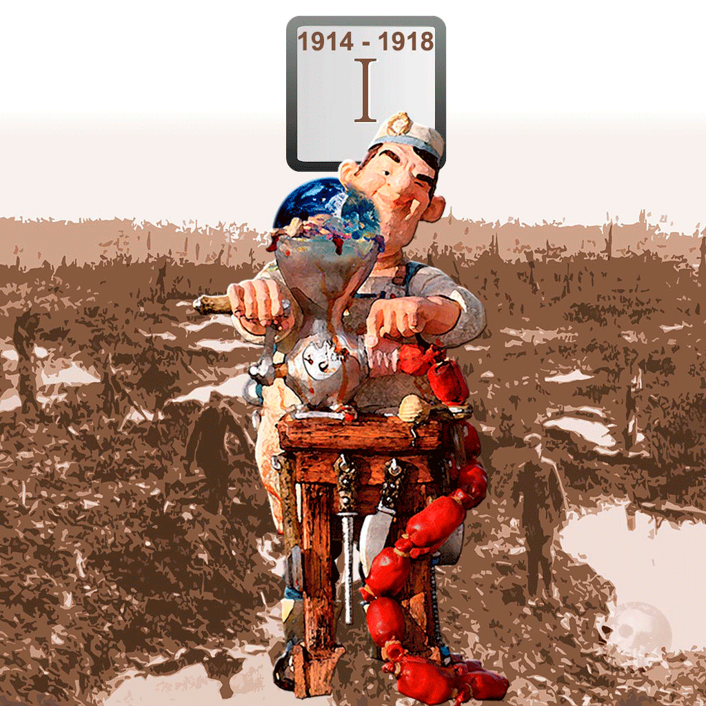
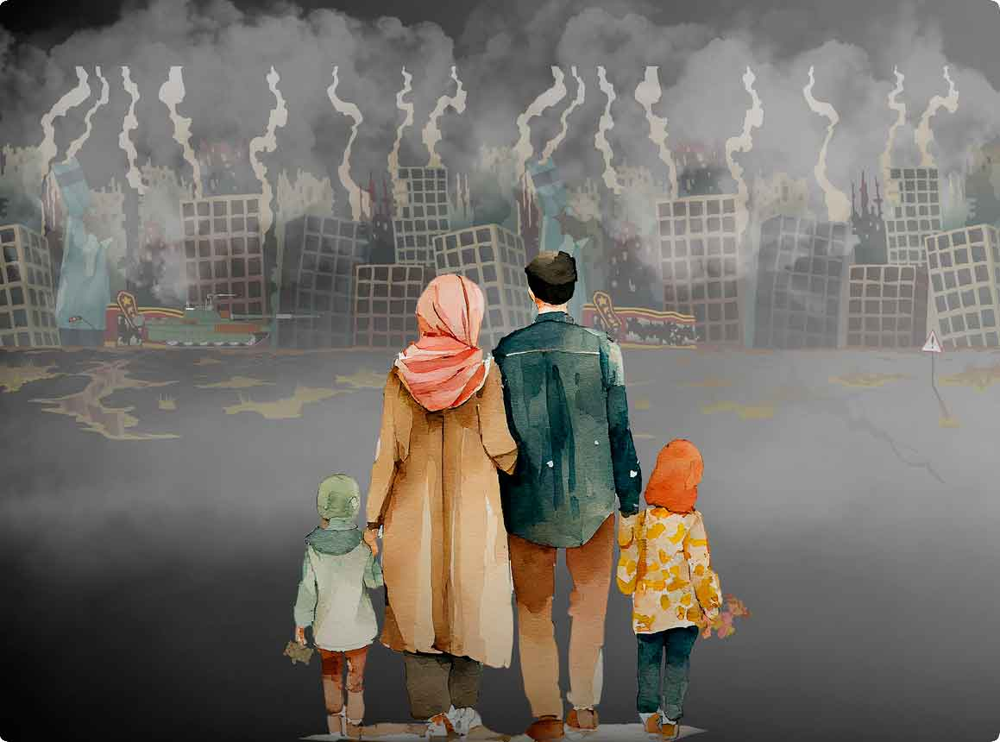
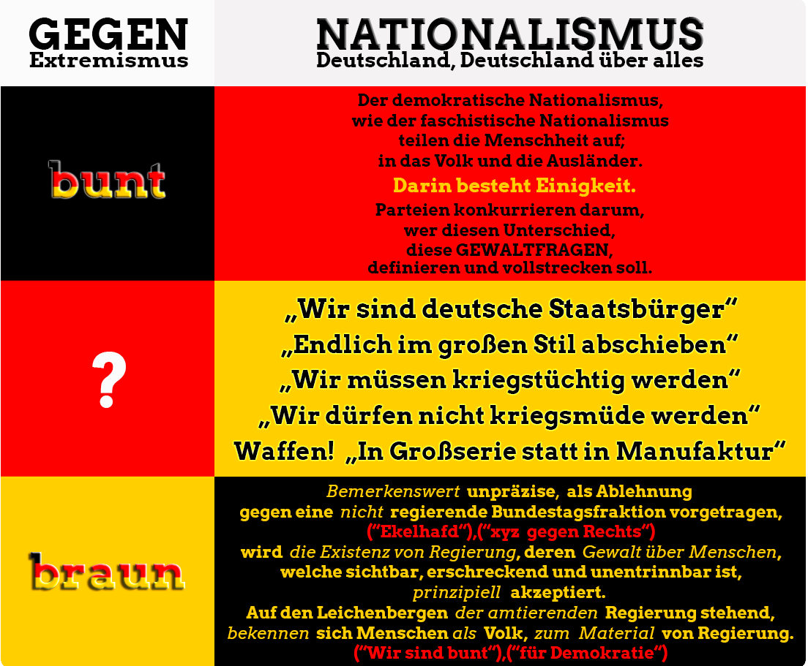
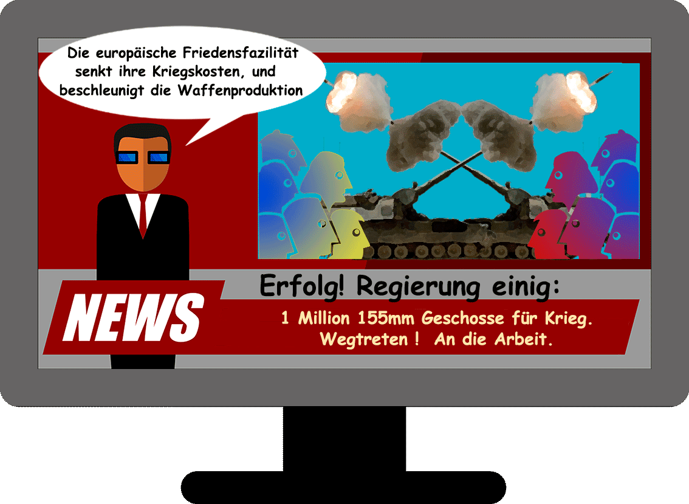

Stories
Andere machen die Drecksarbeit - das muss anders werden
Krieg ist die von Regierungen kommandierte Vernichtung von Menschen und deren Lebensgrundlagen, wissenschaftlich, technisch und industriell im Frieden vorbereitet, um der Geltung eines konkurrierenden Regierungswillens die personellen und materiellen Voraussetzungen von Regierungsgewalt zu entziehen.
Dieser Umgang mit der Welt und der Bevölkerung (Ukraine, Russland, Israel, Gaza, Libanon, Jemen, Iran, Syrien, Irak, Libyen, Jugoslawien, Afghanistan ...), trifft heute auf den "größten Respekt" derjenigen, welche diese Kriege vorbereiten, ausrüsten und veranstalten lassen .
Als "Zeitenwechsel", begleitet vom größten Rüstungshaushalt nach dem 2. Weltkrieg, in Deutschland mit Verfassungsrang als unbegrenzt definiert, fordert der oberste Befehlshaber der deutschen Armee dazu auf, den "Mut" zu haben, das zu machen.
Der Bundesminister der Verteidigung Deutschlands, durch die "Bereichsausnahme Verteidung" bei der Schuldenbremse mit "vollem Tank" ausgestattet, sah sich gestern noch in seinem eiligen Bestreben "das zu schaffen", durch "einen Wust von Regelungen" behindert, und passt auch diese Gesetzeslage dem Beschaffungsbedarf einer als Normalität unterstellten Kriegsbereitschaft an ( merkur.de , "NATO zaudert, Ukraine zielt: Tausende "Angriffskits" gegen Putin" ).
Die professionelle Vernichtung von Menschen und zivilisatorischer Infrastruktur im Auftrag und unter dem politischen Kommando von Regierungen, ist fester Bestandteil ihrer auf Privateigentum basierten, regelbasierten Weltordnung - business as usual, wie immer.
Neu ist das, was man den Opfern dazu für eine Geschichte erzählt.
Gestern noch, gab es immer ein "leider" im Subtext, wenn Geschichten vom Krieg erzählt wurden. Heute wird dieser Subtext als ein "Hurra!" gesendet.
Heute wird Krieg von seinen Veranstaltern offiziell als ein selbstverständliches, notwendiges und begrüßenswertes Werkzeug der Politik kommuniziert.
Weshalb wird die Bevölkerung heute , jetzt mit dem Subtext "Hurra!" beschallt?
Ein Erklärungsversuch:jeweils ihres Staatsgebietes besitzen Staatsgewalten das Gewaltmonopol. Außerhalb der Staatsgrenzen gilt jedoch nicht ihre, sondern eine um die Voraussetzungen von Staatsgewalt konkurrierende , andere , bewaffnete Gewalt von Ihresgleichen - deren Existenz der Geltung ihrer Gewalt in der Konkurrenz um nationale Ressourcen praktische Grenzen setzen will und kann.
Bereits die Existenz einer anderen Gewalt steht im Widerspruch zum Anspruch einer Regierung auf Souveränität, auf ihr Gewaltmonopol .
Die politische Absicht der Gründung einer neuen Staatsmacht wie z. Bsp. gesternIsrael , oder als Separatismus wie in Katalonien und in den Jugoslawienkriegen , wird von den direkt beteiligten, bestehenden Regierungen als Angriff auf die Geltung ihrer Gewalt wahrgenommen und/oder mit ihrer Gewalt bekämpft , oder auch von nicht direkt beteilgten Regierungen als Gelegenheit genutzt, um sich als Gewalt dort, außerhalb der Staatsgrenzen des Geltungsbereichs der eigenen Gewalt, im Geltungsbereich einer anderen Gewalt, selbst politischen Einfluss zu verschaffen.
Diese Spezialfälle der bewaffneten, politischen Geltendmachung des Herrschaftsanspruchs einer gesellschaftlichen Elite, Staatsgründungs kriege, sind nicht das zentrale Thema dieses Artikels.
Aber auch dort gilt, dass aufgrund der gesellschaftlichen Geltung von Privateigentum an den Voraussetzungen der menschlichen Existenz , eine Elite die vielen anderen, welche aufgrund des institutionell bewaffnetem, ihres exklusiven Eigentums an den Voraussetzungen der Existenz, auf deren Erlaubnis zur Benutzung dieser Existenzvorausseztungen angewiesen sind, deswegen dort als 'Arbeitnehmer' auf die Bereitschaft der Elite zur Bezahlung ihrer lohnabhängigen Existenz verwiesen sind, nicht mit den Produkten ihrer geleisteten Arbeit ihr Leben gestalten können, sondern von Lohn existieren müssen .
Diese Elite macht die Vermehrung ihres Reichtums zur Existenzbedingung derjenigen, welche aufgrund ihrer durch das Recht auf Eigentum politisch, erzeugten Eigentumslosigkeit, dazu hergerichtet sind, die materiellen Voraussetzungen jeder Existenz als fremdes Eigentum , als Eigentum der Elite zu produzieren - Die von ihnen selbst als Arbeiter produzierten Existenvoraussetzungen müssen die Produzenten dieses sichtbar existierenden Reichtums jetzt bei der Elite kaufen oder mieten.
Das Privateigentum an den Voraussetzungen und Resultaten der gesellschaftlichen Produktion, bekannt als Arbeitsplatz und Warensortiment, erzeugt ein politisch konstruiertes Korsett, welches die Elite in die von ihnen beabsichtigte Lage versetzt sich an fremder Arbeit zu bereichern, anderen, so , Weisungen zu erteilen, bewaffnet zu regieren, und wie zu besichtigen ist, auch in den Krieg zu kommandieren.
Diese 'Angebote' von 'Arbeitgebern' können 'Arbeitnehmer' nicht ablehnen, wenn sie existieren wollen.
Das Eigentum der Elite an den Produktionsmitteln und den Produktionsresultaten, versetzt die Produzenten des fremden Reichtums in eine lebenslange Zahlungs verpflichtung . Sie brauchen in regelmäßigen Zeitintervallen Geld , um die Produkte ihrer Arbeit zu bezahlen - und das bekommen sie genau dort, wo sie fremdes Eigentum , unter dem Vorbehalt der Erlaubnis zu den kalkulierten Bedingungen des 'Arbeitgebers', nur dann, produzieren dürfen .
Die Geltung des Eigentums der Elite wird durch die institutionalisierte Gewalt einer Regierung, als Voraussetzung jeder menschlichen Existenz, durchgesetzt . Das Geld setzt jetzt politisch, ohne die sichtbare Anwendung von Gewalt, die Trennung der Arbeit von ihrem Produkt gegen die Produzenten des gesellschaftlichen Reichtums durch.
Mit Geld, mit den von ihnen als Bezugsschein auf die von Arbeitern als fremdes Eigentum produzierten Existenzvoraussetzungen, verschafft sich die Elite Zugriff auf die Arbeitsleistung und das Arbeitsprodukt ihrer Opfer - und trennt, begrenzt so, durch die Bezahlung von Lohn, die Zugriffsmacht der Produzenten auf das Gesamt produkt ihrer Arbeit.
Deren Lohn ist für diejenigen welche ihn bezahlen, eine negative Größe in ihrer Bilanz, Abzug von ihrem Gewinn.
Deren Arbeitsleistung ist für diejenigen welche sie kommandieren, als Quelle ihrer mit Preisen ausgezeichneten Waren, die Quelle ihres Reichtums.
Ob, wann, was, oder wieviel produziert wird, geht die lohnabhängigen Produzenten nichts an - sie sind im Produktionsprozess ein weisungsgebundener Produktionsfaktor - Arbeitskraft.
Hier soll dieser politische 'Normalfall', der von den Geldzahlungen einer Elite abhängig gemachte, politisch konstruierte Lebensinhalt des 'Arbeitnehmers' , im Verlauf der Konkurrenz bestehender kapitalistischer Nationalgewalten, deren Existenz und Potenz auf dem von ihnen selbst definierten, ala Geld gemessenem Erfolg einer Gesellschaftordnung gegründet ist, welches das Privateigentum an den natürlichen und technischen Existenzvoraussetzungen, Grundeigentum, Produktionsmittel, wie Maschinen und Fabriken, durch ihre so organisierte , ökonomisch und politisch, institutionalisierte Gewalt, gesellschaftlich als 'Arbeitsmarkt' installiert , so als Existenzbedingung ihrer Opfer realisiert , untersucht werden.
Der in Geld messbare Erfolg, als Ergebnis der zuerst lokalen, heute globalen, ökonomischen Konkurrenz der durch das Privateigentum national erzeugten Eliten, um die politische Geltung und den ökonomischen Erfolg ihres Eigentums, ist als Quelle der politischen Gewalt, welche diesen gesellschaftlichen Zustand erzeugt und durch ihre Gewalt garantiert, der Sorgegegenstand jeder nationalen Gewalt, weil von diesem in Geld messbarem Erfolg, den sie besteuert, die Geltung und die Potenz jeweils ihrer Existenz als nationale Gewalt defininiert ist .
Die Verlaufsform dieser Konkurrenz von Nationen und deren nationaler Eliten um Geld soll hier dargestellt werden - wie weltweit zu hören, zu lesen und zu sehen ist, nicht erst zu seinen, lebensbegleitenden dort Armut, globale Notlagen, und die Zerstörung der menschlichen Existenzvoraussetzungen, als Realität erzeugt
gewalten erscheinen ihnen ihre Mittel immer zu wenig, und dieselben Mittel in der Hand einer anderen Gewalt werden als Ressourcen einer fremden Macht, als Bedrohung der unwidersprechlichen Unabhängigkeit und Geltung der eigenen Regierungsgewalt wahrgenommen.
Die materiellen Voraussetzungen jeder Existenz liegen zufällig von Natur verteilt, irgendwo auf diesem Planeten herum. Als Repräsentanten nationaler Staatsgewalt nehmen Regierungen deshalb diplomatische Beziehungen zueinander auf.
Ihre , durch ihre Existenz als Regierung vollzogene Aufteilung der Welt in beherrschte Nationalstaaten , stellt die Herrschaften wechselseitig vor das politische Problem der Ressourcenbeschaffung - auf den Zugriff von jeweils dessen, was jeweils sie brauchen, um sich als Gewalt reproduzieren und entwickeln zu können - die natürlichen oder technischen Produktionsvoraussetzungen der eigenen Wirtschaft befinden sich in einer von Regierungen beherrschten Welt auf dem Hoheitsgebiet eines anderen Staates - unter der Kontrolle einer um die Geltung und Entwicklung jeweils ihrer Gewalt, konkurrierenden , anderen Regierung.
Ihre , durch ihre Existenz als Regierung vollzogene Aufteilung der Menschheit in beherrschte Völker, segmentiert und markiert die Bevölkerung dieses Planeten, jeweils als ein exklusiv von diesen Regierungen bewirtschaftetes , jeweils als ihr , als ein national kommandiertes Volk - als Amerikaner, Deutsche, Afrikaner ... .
Die Beschaffung oder Benutzung von Ressourcen im Herrschafts bereich einer anderen Regierung, setzt die Anerkennung der fremden Gewalt voraus, wenn man nicht gleich Teile seines Volkes, Teile seiner menschlichen Ressourcen, bewaffnet, also mit weiteren materiellen Resourcen ausgestattet, dazu abkommandieren will, sich , als Regierung das zu holen, was man braucht.
Diese über Jahrhunderte praktizierte Vorgehensweise der Herrschaften opfert und vernichtet die Quellen von Regierungsgewalt , ihre menschlichen und materiellen Ressourcen - und stellt als Ergebnis des Krieges, die Existenz ihrer selbst, die Geltung ihrer Gewalt, zur Disposition .
Das machen Regierungen in der Regel heute nicht mehr so .
Ihre bewaffnete Kommandogewalt über ein Volk, mit den von diesem Volk produzierten Waffen, wollen sie einsetzen, um sich als Gewalt, als Regierung zu reproduzieren und zu entwickeln .
Moderne Gewalten, der Planet ist heute vollständig unter Regierungen aufgeteilt, erkennen und anerkennen sich , als Kommandanten über ein Stückchen Erde und dessen Bevölkerung, als ihresgleichen - und sind mit diesem globalen Staus Quo, der Geltung ihrer Gewalt , soweit einverstanden.
Der Zustand der Geltung ihrer Herrschaft ist ihr Interesse, und als Exekutoren dieses Zustands, respektieren sie sich wechselseitig, als Konkurrenten um die globale Geltung dieser Gewalt - anerkennen sie sich wechselseitig - man verträgt sich, kultiviert die Herrschaft von Menschen über Menschen, um der Realität der Geltung ihrer Herrschaft über die Menschheit, durch die eigene, globale Konkurrenz um diese Herrschaft, keinen unnötigen , um der Geltung auch ihrer, um der prinzipiellen Funktionalität ihrer Gewalt keinen Schaden zuzufügen.
Als Konsequenz ihres Interesses an der Geltung ihrer Gewalt, anerkennen sich Staatsgewalten, nehmen Regierungen dann Handelsbeziehungen auf, und schließen Handelsverträge ab, in denen minitiös geregelt wird, was, wieviel und zu welchen Handelskonditionen jeweils auf dem Staatsgebiet der konkurrierenden Gewalt verkauft und gekauft werden darf.
Die beteiligten Regierungen wissen , dass ihr 'Handelspartner' dieselben Absichten hat wie sie selbst - jede Regierung will sich als Gewalt entwickeln und sich am, und gegen dasselbe Interesse, an der Gewalt der Anderen über ihr Hoheitsgebiet und dessen Bevölkerung, stärken.
Derselbe Anspruch der jeweils anderen Gewalt, das jeweilige Interesse am Nutzen des Handels, erscheint allen Beteiligten beim jeweils anderen, als Bedrohnung, als potentielle Gefahr, dass dessen Erfolg die Gewalt des Konkurrenten dann auch entwickelt, sich gegen sie richtet - und bereits zum aktuellen Zeitpunkts des Handels selbst , muss man sich der fremden Gewalt beugen, den Willen einer anderen Gewalt anerkennen und deren Gesetzen, dem Willen einer anderen Gewalt, Folge leisten.
- Alle Beteiligten sind sich dessen bewusst, dass die Fähigkeit Handelsbedingungen zu definieren, auf der Gewalt beruht , welche man ist .
Parallel zu ihrer Konkurrenz um die ökonomischen Voraussetzungen ihrer Gewalt betreiben sie deshalb , gleichzeitig , eine Konkurrenz um die Entwicklung der Zerstörunskraft, der Anzahl und der Reichweite ihrer Bewaffnung , als Nachweis der Realität jeweils ihrer Gewalt .
Eigentum, als Vertrag definiert, oder als Kontostand, ist auf dem Herrschaftsgebiet einer anderen Gewalt nur dann garantiert, und genau soviel wert, wie es die andere Gewalt erlaubt - definiert .
Andernfalls wird das Eigentum fremder Gewalten "eingefroren", gestern noch geltende bi-, multi-, oder international geltende Verträge werden "gekündigt". Der eigenen Gewalt wird ihre Anerkennung durch die fremde Gewalt entzogen, bisher anerkanntes Eigentum wird "enteignet", von einer fremden Gewalt nach deren Belieben verwendet.
Sich des Risikos wechselseitig bewusst, dass wenn man jeweils das eigene Herrschaftsgebiet als Verkaufsraum einer fremder Gewalt öffnet, damit die nationale Relevanz der eigenen Wirtschaft der Konkurrenz eines globalen Verkaufspreises aussetzt, sich den um Absatz konkurrierenden, lokalen Produktionskosten anderer Nationen unterordnet, und im Fall der Niederlage, mit den Verlust von Eigenmtum oder Geld, und damit mit der Beschädigung der jeweils nationalen Potenz der Geltung seiner Gewalt, als Regierung mit einer negativen Handelsbilanz praktisch konfrontiert ist, als Wirkung der Absicht sich auf dem Weltmarkt als poltische Gewalt wenigstens zu erhalten, eigentlich sich zu stärken, gehen insbesondere die Gewinner des Welthandels fest davon aus, dass ihre Forderung die negative Handelsbilanz, die Beschädigung der Potenz der eigenen Gewalt hinzunehmen, dass Zahlungsverpflichtungen nicht nur anerkannt, sondern vor allem bedient , bezahlt wird , ohne eine Gewalt, welche den Verlierern dieser ökonomischen Konkurrenz, dem nationalen Willen der Verlierer dieser Konkurrenz, bewaffnete Grenzen setzen kann , nicht zu haben ist.
Aus diesem Grund pflegen und entwickeln alle Regierungen, von ihren Völkern als die Zeit des Friedens verehrt, ihre Bewaffnung , als institutitionalisierte Voraussetzung der Geltung ihrer Gewalt - innenpolitisch bekannt als Justiz, Geheimdienst und Polizei, außenpolitsch als Sicherheitspolitik, Nachrichtendienst und Militär.
Und je nach dem Erfolg im 'Welthandel' entstehen , dementsprechend, militärische Welt- oder Regionalmächte , und auf der anderen Seite, Opfer "asymetrischer Kriegführung".
Jede Regierung versucht das ökonomische Interesse am Erwerb der Voraussetzungen der Staatsentwicklung, den politischen Willen einer anderen Gewalt , für sich zu seinem Vorteil zu instrumentalisieren .
In diesem politischen Ausgangspunkt des Handels zwischen Staatsgewalten, liegt die ökonomische Entwicklung, die Bereitstellung von technischer und logistischer Infrastruktur, Industrie und Fabriken, als praktische Voraussetzung des Handels und als potentielle Nachfrage nach den eigenen Handelsgütern, im gemeinsamen Interesse der konkurrierenden Nationen - Schließlich wollen alle ihre Waren verkaufen ; und das setzt auch den ökonomischen Erfolg und eine funktionierende, industrielle Infrastruktur der Konkurrenz voraus, weil man selbst sowohl auf die ausländischen Waren, als auch auf die Zahlungs fähigkeit der Konkurrenten angewiesen ist.
Wo die Fläche des selbst beherrschten Territoriums die Investitionen des nationalen Kapitals begrenzt, oder die ökonomische Potenz , die relative Marktmacht , als lokaler Standort im Vergleich mit dem als Geschäftsraum existierenden Marktpotential anderer globaler Konkurrenten, die Attraktivität des eigenen Standorts als Investitionsziel vermindert, oder als Investionsquelle nicht ausreicht, sich gegen die Kapitalmacht konkurrierender Gewalten im Ausland durchzusetzen , selbst geschäftsfähig zu sein, bildet man Allianzen, Wirtschaftsräume (EU , NAFTA/USMCA , RCEP , BRICS , EFTA , ASEAN , MERCOSUR , ...), um der eigenen nationalen Wirtschaft in der Konkurrenz um Geschäftsgelegenheiten eine globale Durchsetzetzungsfähigkeit zu verschaffen oder diese zu verteidigen.
Man subventioniert die eigene Wirtschaft und belegt die Waren der Konkurrenz mit Zöllen, um den eigenen Geschäftserfolg, dessen Bedingung ein auf dem Weltmarkt konkurrenzfähiger Verkaufspreis ist, in den Wirtschaftsbeziehungen zur Wirkung zu bringen, oder man verbietet diese Maßnahmen dort, dann ist die Rede von Freihandel und der Beseitigung von nicht tarifären Handelshemmnissen, wo man meint der Konkurrenz ökonomisch überlegen zu sein.
gewalten ; ökonomisch und militärisch .
Nach diesen Jahrzehnten ist dann auch die Produktivität anderer Konkurrenten,entwickelt Verkaufs interesse der Staatenwelt gibt es von allem zuviel ! ? ),den Weltmarkt mit den Waren ihrer Nation zu beliefern.
- Die Regierungen der Verlierer der Welthandelskonkurrenz, bekannt als "3. Welt" und "Failed States", stehen als Resultat des Welthandels, verschuldet und zahlungsunfähig , unter der ökonomischen Aufsicht und dem politischen Wohlwollen, unter der Dominanz der ihre Existenz als Regierung durch Kredit alimentierenden Staatsregierungen einer 1. Welt, den als Weltwirtschaftsmächten bekannten Gewinnern der Welthandelskonkurrenz der Nationalstaaten.
Das Resultat des gelaufenen Welthandels, die Entwicklung der Produktivkraft, ihr Erfolg als Nation, bildet bei den Gewinnern der Welthandelskonkurrenz das politische, staatliche Interesse an der Benutzung dieser Produktivkraft, dem notwendigen Verkauf der hergestellten Waren auf dem Weltmarkt heraus - wem das nicht gelingt, dem droht die Entwertung des auf Verwertung, des auf den Verkauf angewiesenen, des investierten , nationalen Kapitals, dem droht als nationale Regierung die Verkleinerung der Quelle der Potenz seiner Gewalt.
Und - genau das - fordern die Gewinner des Welthandels gegenüber ihren ökonomischen Konkurrenten, wechselseitig, jeweis als ihr , durch ihren ökonomischen Erfolg legitimiertes Recht , auf dem Territorium des anderen Handelspartners, von einer anderen Regierung, politisch ein.
Die globale Produktivität, die Fähigkeit von Arbeit Gebrauchswerte herzustellen, welche die Existenz von Bevölkerung verbessert , definieren die Agenten des Tauschwerts , als zu zerstörende Gewalt einer anderen Gewalt, setzen jeweils ihr "Volk" in einen Gegensatz, in Konkurrenz zu 'Anderen', "ausländischer" Bevölkerung.
Regierungen begreifen und vermitteln ihre Gewalt über ein Stück des Planeten Erde und dessen Bevölkerung, als exklusiven Dienst an Volk, an der Bevölkerung jeweils ihres Herrschaftsgebiets, jeweils ihrer "Nation".
Um die internationale Geltung jeweils ihrer nationalen Existenz als Elite, in ihrem ehrlich gemeinten, nationalen Selbstverständnis, als Volksdiener , darstellen zu können, verfolgen sie , jeweils national, deshalb die Absicht, die Bevölkerung, praktisch ihrer Gewalt unterworfen, auch geistig zu Volk zu machen , den Willen ihrer Opfer dahin auszuformen, sich jeweils, exklusiv, zu ihrer Gewalt zu bekennen . - Mit Erfolg .
Die Weltwirtschaftsmächte entdecken jeweils bei der Konkurrenz "Überkapazitäten ", welche den Markt "überschwemmen".
- Der Begriff "Wirtschaftskrieg" bestimmt zunehmend die politischen Beziehungen der 'Handelspartner'. Derselbe gestern noch akzeptierte ökonomische Erfolg, auch der Konkurrenz, wird jetzt als nicht zu akzeptierender, von der Konkurrenz beabsichtigter Schaden an der eigenen Wirtschaft, politisch neu bewertet .
Jeweils bei den anderen Gewalten bewerten die Gewinner des Welthandels die ökonomische Potenz der fremden Regierung in der Handelskonkurrenz, jetzt als praktizierte Fähigkeit einer fremden Gewalt die Voraussetzungen der eigenen Gewalt zu beschädigen.
In den diplomatischen, zwischenstaatlichen Beziehungen und in der öffentlichen Darstellung ist nicht mehr die Rede von "wechselseitigem Nutzen", sondern vom Erreichen eines "Wendepunkts " und "systemischer Rivalität ".
Dort erzeuge der Handel die Stärkung einer anderen Gewalt, und das relativiere , jetzt nicht mehr als Handelsbilanz , sondern bestreite, durch illegitime, staatliche Praktiken, als politische Absicht der Willensausübung einer anderen Regierung, prinzipiell die Geltung der legitimen Interessen der jeweils eigenen, nationalen Gewalt.
Die bewaffneten Konkurrenten des Welthandels kündigen oder verweigern Handelsverträge, verweigern die Anerkennung des politischen Willens fremder Staatsgewalten.
Die bewaffneten Gewinner der Konkurrenz des Welthandels verkünden sich wechselseitig das Ende des Zeitalters der Anerkennung des politischen Willens jeweils ihrer Handelspartner, bestreiten politisch , die regionalen und globalen "Einflusssphären" ihrer Konkurrenten.
Mit den aktuellen Wirkungen ihrer Taten im Handel konfrontiert, gerät das Fundament ihrer Gewalt, ihre militärische Durchsetzungsfähigkeit gegen andere Regierungen, ihre Bewaffnung dort
nicht vom prinzipiellen Widerspruch der Koexistenz von Staatsgewalten die Rede, von als Regierung organisierten Mächten , welche aufgrund der exklusiven Geltung jeweils ihres bewaffneten, politischen Willens als nationale Gewalt wahrgenommen werden, sondern von dem sich aufgrund des Welthandels , in dessen Verlauf, veränderndem politischen Inhalt des Interesses dieser Regierungen, sich als nationale Gewalt , durch Handel , durch den bezahlten Austausch von Waren, jeweils als nationale Gewalt zu entwickeln.
Heute bewerten Regierungen die Überlegenheit ihrer militärischen Gewalt als Voraussetzung der Geltung jeweils ihrer Gewalt , als einzige Garantie der Durchsetzungsfähigkeit , jeweils ihres nationalen Interesses, im Welthandel .
wächst , vielleicht in geringerem Ausmaß, von den Veranstaltern der regelbasierten Weltordnung, heute , von Regierung anders bewertet?
Bisher wurde nur das prinzipielle Verhältnis von Staatsgewalten zueinander betrachtet. Bisher bewegen sich die Rohstoffe, die materiellen Voraussetzungen der Existenz jeweils nationaler Gewalten , einfach von hier nach da, und anders herum. - Aber es fehlt noch eine 'Kleinigkeit'.
Diese Bewegung der Voraussetzungen staalicher Gewalt kommt nur dann zustande, wenn die Rohstoffe, in der Realität sind das Waren, bezahlt werden, können .
- Man nimmt es sich nicht einfach, wie lange Zeit üblich , sondern man bezahlt .
Der Handel setzt so einen Waren- und einen Geldfluss in Bewegung. Jeweils der Verkäufer bekommt Geld und jeweils der Käufer bekommt Ware.
Die Bewegung der materiellen Voraussetzung von Staatsgewalt, der Warenfluss und dessen Bewertung durch die beteiligten Gewalten, ist weiter oben bereits angesprochen worden. Der Gütertausch selbst ist im Bewusstsein von Regierungen bereits konfliktträchtig. Alle Nationen bewerten und kontrollieren die gehandelten Waren, immer bereits vor , und auch während der Aus- oder Einfuhr, in Dual-Use Verordnungen.
Man ist sich als Regierung auf beiden Seiten sich selbst bewusst , dass man es mit einer um die Geltung von Gewalt, konkurrierenden Gewalt zu tun hat; und versucht jeweils sich mit Hilfe des Konkurrenten als Gewalt zu entwickeln.
Deshalb bilanzieren die Konkurrenten die Wirkung ihrer 'Handelsbeziehungen', jeweils national, als Außenhandelsbilanz, als Bewertung der Produktivkraft jeweils ihres Hoheitsgebietes, nach Handelssparten (Energie , Technologie , Rohstoffe , Landwirtschaft , ... ) bishin zur politischen Beurteilung von einzelnen Handelsgeschäften - als politischen Maßstab jeweils ihres relativen Erfolgs als nationale Staatsgewalt - und zuerst und vor allem, als Wirkung auf jeweils ihr , exklusiv als Repräsentant ihrer Gewalt weltweit zirkulierendes Symbol ihrer Gewalt, auf die globale Wirkung ihres Geldes.
... Alle modernen Staaten machen das materielle Dasein ihres Gemeinwesens und sogar ihre eigene Herrschaftstätigkeit von einem Geld abhängig und einem Geld dienstbar, das sie nach allen Regeln der politischen Ökonomie des Eigentums selber schaffen. Ihre Währung ist der Stoff, auf den alles ankommt; die Materie des Reichtums, von dessen Wachstum überhaupt alles abhängt, das Arbeitgeben wie das Arbeitnehmen, das Privatleben wie der Staatshaushalt. Und mit
diesem realen Inbegriff allen gesellschaftlichen Vermögens hat es an der Staatsgrenze ein Ende. Er gilt nichts mehr, wo das Machtwort der zuständigen Staatsgewalt keine gesetzliche Verbindlichkeit mehr hat. Was eine Nationalökonomie erwirtschaftet, womit ihre herrschende Klasse die gesellschaftliche Arbeit kommandiert, womit der Staat regiert, wovon die Leute leben: das erweist sich als Machwerk staatlicher Gewalt, das mit deren räumlich begrenzter Hoheit steht
und fällt. ... Das Geld , S.136)
In Staatshaushalts bilanzen entdecken die Herren dieser Welt, dass der Geschäftserfolg ihrer Konkurrenten, sie erstens zu Zahlungen verplichtet, und zweitens, dass derselbe Geschäftserfolg ihrer Berufskollegen, welcher die verfügbare Geldmenge der konkurrierenden Gewalt vergröẞert , den Geschäftserfolg ihrer Wirtschaft, den Gewinn, Geld, die Voraussetzung zum Kauf dessen, was Regierungen für die Entwicklung jeweils ihrer Gewalt brauchen, um überhaupt als Käufer auf dem Weltmarkt auftreten zu können , die Geldmenge über welche sie verfügen, als Ergebnis des Handels verkleinert .
- Jeder Kauf beim Konkurrenten, stärkt die fremde Gewalt, indem sie dem Konkurrenten die Voraussetzungen des Handels, Geld zuführt, und einem selbst die Voraussetzung des Handels, Geld, entzieht.
Und zuerst und vor allem, bewirkt eine verlorene, ökonomische Konkurrenz im Welthandel, eine Verkleinerung der Nachfrage des Weltmarktes ihrem Geld. Umgekehrt braucht der eigene Herrschaftsraum die Gelduniform anderer Gewalten, und wertet durch den Kauf, die fremde Währung auf, und das eigene, nationale Geld, dessen Wechelkurs, verliert relativ an Kaufkraft, an Zugriffsmacht auf das, was man als Voraussetzung seiner Gewalt braucht , was man im Herrschaftsbereich einer anderen Gewalt , in einem konkurrierenden Wirtschaftsraum kaufen muss .
Die globale Nachfrage nach einer Gelduniform, nach einer von einer bestimmten Gewalt exklusiv durch ihre Gewalt produzierten Währung (als Dollar; exklusiv von den USA heraus gegeben , als EUR; exklusiv von der EZB erzeugt, als Yuan; exklusiv von der politischen Gewalt Chinas ausdruckbar), entscheidet über die globale Zahlungs fähigkeit einer Nation.
Wenn die Teilnehmer des Weltmarkts bezahlen müssen, dann brauchen alle Staaten, als Käufer auf dem Weltmarkt, als Zahlungsmittel, global anerkanntes Geld, eine Gelduniform wie zuerst den Dollar, Euro, japanische Yen oder Yuan, um auf dem Weltmarkt als Staatsgewalt überhaupt als Käufer auftreten zu können .
Dieser globale Bedarf an Dollar, Euro, Yen oder Yuan, um Rechnungen auf dem Weltmarkt bezahlen zu können , erzeugt eine Nachfrage aller Teilnehmer am Weltmarkt nach genau diesen Gelduniformen .
Diese Gelduniformen sind, exklusiv von den Herausgebern dieser Währungen, von Staatsgewalten autorisiert , deshalb exklusiv, nur von deren Staatsbanken generierbar - und auch der technisch in dieser Uniform , elektronisch geltende Maßstab, ein Kontostand, ist damit, jetzt, deswegen , als Geld , eine global lizensierte Bedingung , ein notwendiger Nachweis nationaler Zahlungsfähigkeit , globale Voraussetzung jedes nationalen staatlichen Interesses an der Benutzung des Weltmarktes. Aus diesem Grund müssen sich die anderen Staaten Devisenreserven in diesen, allgemein anerkannten Währungen beschaffen.
Weil die ganze Welt jetzt dieses Geld braucht um bezahlen zu können, ensteht für die Gewinner der Welthandelskonkurrenz, den Herausgebern dieses Weltgeldes, ein neues Geschäftsfeld, eine neue, exklusive Einkommensquelle - das Kreditgeschäft.
Die Herausgeber verleihen die Währung ihres Hoheitsgebietes als Kredit. Durch die Zinsen profitieren sie jetzt automatisch vom weltweiten Geschäft, welches durch ihre Währungen finanziert wird. Durch den Kredit machen sie das Geschäft ausländischer Konkurrenten zur nationalen Geldquelle .
Das verbessert ihre Handelsbilanzen und steigert damit das Vertrauen der nach rentablen Geldanlagen suchenden, internationalen Investoren in die Schuldtitel dieser Welt gelder.
Die Herausgeber dieser Gelduniformen können sich, deswegen, als Nation am internationalen Finanzmarkt erstens höher und zweitens, zu einem durch ihre globale Gewalt, politisch definiertem Zinssatz verschulden, siehe die USA, unbegrenzt, sich durch Schuldscheine mit Zahlungsfähigkeit ausstatten, weil der Rest der Staatenwelt, auf und mit diesen Schulden, dem Wertpapier , aber eben global als Devisenreserve und Zahlungsmittel im Welthandel anerkannt , deren regionale Existenz als zweitrangige, aber als nationale Gewalt, durch die Schuldscheine der Konkurrenzgewinner mit nationaler Zahlungskraft ausgestattet, ernährt und erhält.
Deswegen kauft die globale , private Geschäftswelt zuerst den Dollar, den Euro, den Yen, ..., das von den Weltwirtschaftsmächten unterschriebene Papier der Konkurrenzgewinner, deren Zahlungsversprechen, und danach Staatspapiere der Rupie, und schon gar nicht das syrische Pfund, zur Finanzierung ihres nationalen Geschäfts oder als private Geldanlage.
Und heute? Da kommen den Kriegs- und Welthandelskonkurrenzgewinnern von gestern, heute Konkurrenten wie China daher, Welthandelskonkurrenten bilden Allianzen, und wollen den Herrschaften der wertebasierten Weltordnung, ihr Geld als Weltgeld , in Frage stellen.
Dem Übergang zur kriegerischen Auseinandersetzung der beteiligten Staatsgewalten, steht bis hierher die allgemeine ökonomische Bilanz, der Zuwachs des insgesamt bilanzierten Staatshaushalts, die Entwicklung der eigenen Gewalt entgegen.
Im Krieg opfern die Gewalten, vernichten sie die materiellen und personellen Voraussetzungen ihrer Existenz, setzen sie als Waffe ein, um dieselben Voraussetzungen der Existenz der jeweils anderen Gewalt zu vernichten. Selbst wenn man den Krieg gewinnt, steht man danach in und vor rauchenden Trümmern, als Gewalt mit weniger Waffen und Soldaten, mit weniger Geld, kleiner da, als vor dem Krieg.
An dieser Stelle kommen Regierungen auf die Idee von Zöllen und Sanktionen .
Heute exekutieren die Regierungen der Weltwirtschaftsmächte Zölle und Sanktionen , als Waffe , gegen ihre 'Handelspartner'.
Zunächst "regulieren" Regierungen den Handel, unterbinden, durch ihre Gewalt, die Wirkung des geringeren Verkaufspreises von ausländischen Konkurrenten auf dem eigenen Herrschaftsbereich, durch Zölle - einen nur von Konkurrenten bei Einfuhr in das eigenen Herrschaftsgebiet zu bezahlenden Geldbetrag für den Verkauf seiner Produkte - dort wo die einheimische Wirtschaft einen höheren Verkaufspreis für dasselbe Produkt, aufgrund der nationalen, im Inland anfallenden Produktionskosten, einen höheren Verkaufspreis kalkulieren muss , um den Überschuss der Konkurrenz, Gewinn, gemessen an den nationalen Stückkosten, auf dem nationalen Markt, politisch, zu verhindern , um die Konkurrenzfähigkeit der eigenen Steuerquellen, die eigene Wirtschaft, deren Kalkulationen, deren im Inland geltenden Verkaufspreis gegen den geringeren Verkauspreis der globalen Konkurrenten, politisch zu verteidigen
- Auf dem Weltmarkt bleibt es dabei ; die nationalen Produkte verlieren in der globalen Konkurrenz um Geld an Attraktivität, verlieren die Fähigkeit sich in Geld zu verwandeln, verlieren die Fähigkeit den in Geld messbaren Erfolg des eigenen, nationalen 'Standorts' nachzuweisen, reduzieren im Resultat die Kaufkraft und Kreditfähigkeit, die Potenz der nationalen Gewalt, sich als Gewalt auf dem Weltmarkt zu reproduziern und zu entwickeln.
ist , ökonomisch dazu in der Lage, der Weltmarktkonkurrenz aufgrund der eigenen nationalen, globalen Relevanz als Absatzmarkt für andere Nationen, anderen Gewalten aufgrund ihrer Angewiesendheit auf diesen Verkaufsplatz, Bedingungen zu diktieren , benutzt man Zölle, als Zulassungsbedingung, als Besteuerungswerkzeug ausländischer Regierungsstandorte , um das Verkaufsinteresse der Wirtschaft fremder Nationalgewalten politisch als Einnahmequelle der eigenen Nation zu funktionalisieren.
Dort wo man meint, der regierenden Konkurrenz mit der Aufkündigung von bestehenden Handelsverträgen , Schaden zufügen zu können , entzieht man der fremden Gewalt die Lizenz zum Zugang zu diesen Geld- oder Rohstoffquellen auf dem eigenen Herrschaftsbereich, unterbindet man diesen Handel juristisch , verhindert man die bisher ökonomische Perspektive des Welthandels, verbietet politisch das Geschäft , - unter Strafandrohung - der eigenen Wirtschaft.
Dort wo man als Gewalt soweit entwickelt ist , ökonomisch dazu in der Lage, nicht nur der direkten, am Handelsgeschäft selbst beteiligten, regierenden Konkurrenz mit der Aufkündigung von bestehenden Handelsverträgen, Schaden zufügen zu können , verbietet man das Geschäft mit dem direkten Sanktionsziel, auch vom eigenen Sanktionsbeschluss nicht direkt betroffenen Staatsgewalten , überregional , wenn es geht weltweit, durch "Sekundärsanktionen ".
Sanktionen beanspruchen die exklusive Geltung des eigenen Interesses im Handel, gegen jedes bestehende Interesse des Handelspartners an den bestehenden , vertraglich vereinbarten Handelsbeziehungen, als politisches Diktat einer Gewalt gegen eine andere Gewalt.
Sanktionen widerrufen die Voraussetzung des Handels - die jeweilige Anerkennung der Geltung des Handelspartners als souverän, geltende Gewalt in den Handelsbeziehungen - eine Vertragspartei definiert sich , und konfrontiert eine andere Gewalt mit dem Anspruch der eigenen Gewalt, sich , als gesetzgebende Macht, gegenüber den amtierenden Agenten einer anderen , bewaffneten Staatsmacht !
Das ökonomische Interesse wird jetzt in der politischen Konkurrenz von den Konkurrenzgewinnern des Welthandels , auf diesen Handelsbeziehungen basierend , der Durchsetzung des eigenen politischen Willens, dem in Geld messbaren, ökonomischen Erfolg, politisch untergeordnet .
Die Gewinne, sogar der Geschäftserfolg des gestern bereits gelaufenen Handels, Kontoguthaben oder Eigentum des sanktionierten Staates und seiner Elite , werden politisch bewertet, als unerwünschte "Unterstützung einer fremden Macht", "eingefroren" und "enteignet". Man sucht nach Wegen, bereits die Fähigkeit zur Aktivität der Konkurrenz im Welthandel zu unterbinden. Die Reisefreiheit der handelden Personen wird eingeschränkt. Der Zahlungsverkehr, die Versicherung, oder andere Voraussetzungen des Warenverkehrs, werden politisch verboten. Auf Regierungsmitglieder der sanktionierten Regierung werden Haftbefehle ausgestellt.
- Wessen Gewalt gilt denn, jetzt!
Sich der Gefahr bewusst, die Zeit des Lesers mit etwas zu beanspruchen, dass er doch schon weiß:Deren , durch ihre Existenz als Regierung vollzogene Aufteilung der Menschheit in beherrschte Völker, setzt die Bevölkerung dieses Planeten in eine von diesen Regierungen jeweils national kommandierte, bewaffnete Konkurrenz zueinander.
Ob der Beschluss zum Krieg gefällt wird, die politische Elite sich dazu entscheidet ihre politische Gewalt und ihre menschlichen und ökonomischen Reichtumsquellen im Krieg als Waffe zur Disposition zu stellen, entscheiden die Herrschaften jeweils eklusiv, ganz unter sich, in den Kreisen von Ihresgleichen - sogenannte "begrenzte Militäreinsätze", jederzeit , wie zu besichtigen war und ist; asymetrische Kriege oder die Bewaffnung von "Freiheitskämpfern", um unbeliebte Herrschaften aus dem Amt zu entfernen, als "Farbrevolution" oder "Regimechange" bekannt, oder auch alliierte "Weltordnungskriege", bekannt als "Auslandseinsatz", gerne mit UNO-Mandat, aber wo diese fehlt, geht es auch ohne.
Aber eines steht fest - die Regierungen der Weltmächte ordnen den Gewinn, den in Geld messbaren Ertrag des Welthandels, der Geltung ihres politischen Willens als Staatsgewalt in den 'Handelsbeziehungen', unter .
Die Herrschaften sind so frei, entscheiden , heute bis in den Weltraum bewaffnet, wann ihnen danach ist, ihre gestern noch ökonomische Konkurrenz, heute als bewaffnete Konfrontation, als Krieg oder Weltkrieg, zu veranstalten .
Heute definieren die Gewinner des Welthandels, miltärisch auf dem neuesten Stand, die Existenz einer ihnen ebenbürtigen Gewalt als unerträglich, dem Gegner jeweils diplomatisch vorgetragen, als Absage an eine unipolare oder multipolare Weltordung.
Heute lassen die Herrschaften, in den 'Nachrichten', wieder, über Weltkrieg, diskutieren .
Heute lassen die Herrschaften in den 'Nachrichten' vor Kriegsmüdikeit, warnen .
Heute mit 'dem Russen' und 'den Mullahs', bereits angekündigt, mit 'dem Chinesen', auch morgen, mit wem auch immer, das wird denjenigen welche diese Waffen aufeinander abfeuern sollen, dem Volk, jeden Tag als 'Nachrichten' gesendet .
Diese politische Agenda, die offiziell verkündete politische Absicht, sich für den militärischen Konflikt mit den Gewinnern der gelaufenen Welthandelskonkurrenz "kriegsfähig" zu machen, verändert die Anspruchshaltung der Elite gegenüber ihrem Volk und das Anforderungsprofil an die gesamtgesellschaftlichen Strukturen.
Die Medien senden rund um die Uhr 'Nachrichten', mit immer demselben Inhalt:Wer Wir! sind die Guten. Sagt Ja zum Krieg - als berechtigter Verteidiger.
Die gesamte gesellschaftliche Infrastruktur wird auf ihre kriegstauglichkeit und Resilienz geprüft. Erwachsene und Kinder werden am Arbeitsplatz, in der Schule und zuhause vor den Empfangsgeräten und Zeitungen unterrichtet , um die erforderliche, geistige Bereitschaft für den geplanten Kriegsfall anzuerziehen "Die Wirtschaft" bereitet sich auf die Kooperation mit jeweils der national institutionalisierten Gewalt vor, welche ihr Eigentum autorisiert, durch deren Gewalt, auf dieser Welt in Kraft setzt - bewertet und vergleicht auch, welche Gewalt das
- Zieht euch eine Uniform an! Helme auf, an die Waffen! Wir gucken in jedem Jahr, ob ihr unserem Bedarf an Soldaten ausreicht.
Die Fähigkeit zur politischen Anerkennung einer konkurrierenden Gewalt, die Fähigkeit zum politischen Diktat des eigenen Regierungswillens gegenüber anderen Regierungen, ist als politische Voraussetzung des 'Handels', dem Austausch von materiellen Voraussetzungen staatlicher Gewalt, als politische Kontrolle jeder Güterbewegung, als Handelsvertrag, als Grenzkontrolle , Zoll, institutionalisiert .
Die Fähigkeit zur Nicht-Anerkennung der konkurrierenden Gewalt, als Fähigkeit zum militärischen Diktat des eigenen Regierungswillens gegenüber anderen Regierungen, Krieg , ist als politisches Werkzeug von Regierungen, bekannt als Militär, institutionalisiert
Durch die von Regierungen vollzogene Aufteilung der Menschheit in beherrschte Völker, versetzt die Elite die Bevölkerung dieses Planeten in eine von diesen Regierungen jeweils national kommandierte, bewaffnete Konkurrenz zueinander, um die politische Geltung der Voraussetzungen und Interessen jeweils ihrer Gewalt gegen eine andere Gewalt durchzusetzen - postalisch, per "Einberufungsbescheid" wird denjenigen, welche diesen Befehl als Krieg in die Tat umsetzen sollen, mitgeteilt, dass sie zu den Waffen gerufen werden, welche die Regierung bereits gestern, im Frieden hat entwickeln und bauen lassen.
Durch Rechnungen sind die Produzenten der materiellen Voraussetzungen jeder Existenz zur Dienstbarkeit für fremdes Eigentum, politisch kondititioniert - Ob diese politisch erzeugte Notlage an einem 'Arbeitzplatz' in die Lage versetzt wird, die Rechnungen seiner Herren zu bezahlen, unterliegt ganz und gar den Kalkulationen derjenigen, welche andere nur dann für einen Lohn arbeiten lassen , wenn es sich für sie lohnt.
Hoheitlich, von den Regierungen erschaffene 'Arbeitsplätze', Gerichte und Beamte, der Polizist und der Soldat, setzen die Geltung ihrer Rechnungen, als Realität ihrer Gewalt, mit Gewalt, gegen jeden Widerstand durch.So , ist jeder, als geltende Voraussetzung und als Inhalt seiner individuellen Existenz, von diesen Regierungen, verhaftet , zum Dienst an der Geltung ihrer Gewalt verpflichtet.
Unten, ist die private Existenz dem Dienst an der Vermehrumg fremden Eigentums gewidmet.
Jedes Bedürfnis, jeder Wunsch, ist von den Geldzahlungen, vom Interesse einer Elite an der Benutzung der eigenen mittellosen Existenz, lohnabhängig.
Eine sozialwissenschaftlich formulierte Frage an den Leser:das mit, und aus Ihnen ?
Oben, in den Kreisen einer globale Elite, dem als "westlich" bekannten Regierungspersonal der Weltführungsmächte der Staatenwelt, bisher alliierte Oberliga und Schiedsrichter in dieser auf ihren "Regeln" basierten Weltordnung, erklärt man die Existenz derselben Gewalt anderer Berufskollegen, insbesondere Russlands, Chinas und auch die Organisation der BRICS-Staaten, in den USA auch Europa, als unterträglich - die Bevölkerung wird als "friedensverwöhnt" verwarnt , "Kriegsbereitschaft" wird eingefordert und die Waffen werden hergestellt; der amtierende, deutsche Bundeskanzler, der die politischen Richtlinien der Politik bestimmt, der oberste Befehlshaber der Armee, ist es Leid, dass andere die "Drecksarbeit" machen , und fordert, als Repräsentant einer Nation mit dem Anspruch auf europäische Führungsmacht, auch von allen anderen allierten Kollegen in Europa, den Mut dazu, den er an den Taten der israelischen Regierung und deren Armee, respektvoll bewundere.
Die Herrschaften, andere Stimmen melden sich nicht zu Wort, sprechen ihr Interesse am Planeten Erde und seiner Bewohner öffentlich aus:
2025 , Bundeskanzler der BRD, Friedich Merz:
2024 , Donald Trump Präsident der USA:
Auch die Konsequenzen der auf ihren Regeln basierten Weltordnung, welche die Regierungen in der Lage sind an der Bevölkerung zu vollstrecken, die Regierungen erinnern sich, wird denjenigen mitgeteilt, welche als "König Kunde", als "der Steuerzahler" und "Herrscher der Demokratie", von ihren Herrschaften angesprochen werden - dem Volk wird erklärt was Artikel 4 und Artikel 5 des NATO-Bündnisvertrags ist.
Und wenn dieser Versuch scheitern sollte, als NATO Truppen in die Ukraine zu schicken, diskutieren die europäischen Regierungen bereits darüber, im Kriegsgebiet selbst mehr "Verantwortung " zu übernehmen.
- Die Regierungen haben wieder fertig.
Ihre Opfer produzieren die Voraussetzungen ihrer Gewalt, auch von Krieg, Waffen. Es wird Ihnen gesagt, um deren Einsatz, um Kriege zu verhindern, um sie zu schützen -
Wenn dann mit den Waffen, dem Kommando von Regierungen Folge leistend, Staatsgrenzen überschreitend, auf sie geschossen wird, sollen sie bereit sein, "zurück" zu schiessen, demselben Kommando 'ihrer' Regierung Folge leisten. - Dann ist Krieg - Regierungen bestreiten sich wechselseitig die Geltung ihrer Gewalt - und sowohl vor, als auch hinter den Gewehren bekommen die Opfer von ihren Kommandanten und den Kriegsinitiatoren gesagt, das Gemetzel sei vor allem höheren Werten verpflichtet und diene der Verteidigung seiner Opfer .
Und ob sie es wissen, wollen oder nicht. Wer diesem Kommando nicht gehorcht, der gesetzlich verordneten Dienstpflicht von Bevölkerung zur bewaffneten Verteidigung der Existenz der 'eigenen ' Regierung nicht Folge leistet, wird von dieser Regierung verfolgt und bestraft .
Regierungen brauchen die Bereitschaft ihrer Opfer, ihre Waffen zu entwickeln und zu bauen, und auf ihren Befehl aufeinander abzufeuern! - und setzen deswegen alles daran, diesen Willen , das "Hurra" von dem Anfang dieses Artikels die Rede war, in ihren Opfern zu erzeugen - - ansonsten stehen nur sie allein, sich selbst als Regierungen gegenüber!
Vielleicht motiviert ja die Überschrift des Workshops, "Wer entwaffnet Rheinmetall…?! Von der Analyse zur Meuterei - Sagt NEIN! ", zu etwas Neuem.
hier einen Bericht.
Weltordnungskonkurrenz auf dem Schachtfeld Ukraine
Nie wieder Kriegsmüdigkeit!
Regierungen kennen Gründe für Krieg - und der Erste ist die bewaffnete Sicherstellung der Kontinuität und Geltung jeweils ihrer Existenz als Gewalt selbst; bekannt als Souveränität.
Innerhalb der Grenzen jeweils ihres Staatsgebietes besitzt die Staatsgewalt das Gewaltmonopol. Wer hier nicht das macht, was ihre Gesetze definieren, bekommt Besuch von der Polizei. Im Kriegsfall gilt Kriegsrecht und wer dem Einberufungsbefehl nicht Folge leistet, wird jetzt mit Feldjägern konfrontiert - eine Frage der Verhältnismäßigkeit staatlicher Gewaltanwendung an seinen Staatsbürgern.
Außerhalb der Staatsgrenze gilt jedoch nicht ihre, sondern eine um die Voraussetzungen von Staatsgewalt konkurrierende , bewaffnete Gewalt von Ihresgleichen - deren Existenz der Geltung ihrer Gewalt in der Konkurrenz um nationale Ressourcen praktische Grenzen setzen will und kann - eine Frage von Sicherheits- und Verteidigungspolitik .
Durch einen Verteidungshaushalt machen Regierungen, per Beschluss, die Beschaffung der Kriegsvoraussetzungen, deren technische Entwicklung, die Produktion von Kriegsmitteln und die Versorgung eines in Bereitschaft stehenden Heeres zum gesellschaftlichen Arbeits inhalt.
- Bereits gestern, mindestens 2% der gesellschaftlich als BIP ermittelten Wirtschaftsleistung.
Ab sofort erlaubt sich die Regierung Deutschlands die Kosten für die Herstellung ihrer Kriegsfähigkeit vom aktuellen Bruttoinlandsprodukt zu emanzipieren.
Sobald die von Regierung geplanten Kosten von 'Verteidungsausgaben' 1% des nominalen Bruttoinlandsprodukts überschreiten, wird die Finanzierung exklusiv dieses Bedarfs im Grundgesetz von der für den zivilen Bundeshaushalt geltenden Schuldenregel (Neuverschuldung Bund max. 0,35% des BIP) ausgenommen.
"... Ausgaben für Verteidigung, Zivilschutz und Nachrichtendienste werden ab einer bestimmten Höhe nicht mehr auf die Schuldenregel des Grundgesetzes angerechnet. Dies gilt auch für Militärhilfen für angegriffene Staaten wie die Ukraine. ...(bundesrat.de )
Das bedeutet, dass die Ausgaben für das "Ziel voll ausgestatteter und voll einsatzbereiter Streitkräfte" allein durch die Bereitschaft des internationalen Finanzmarktes zur Kreditvergabe begrenzt ist, um "bestehende Fähigkeitslücken zu schließen und Investitionen in den Truppenaufwuchs entsprechend zu tätigen".Gesetzentwurf )
Das europäische Regierungspersonal plant bis 2030 für 800 Milliarden Euro Waffen zu beschaffen.
Nicht nur das deutsche Regierungspersonal sieht sich dazu berufen, eine "Führungsrolle" einzunehmen, als "Grundpfeiler der Verteidigung Europas" gegen Russland und darüber hinaus , in "Schlüsselregionen", etwa dem Indo-Pazifik, in Asien .
Die regierungsamtlichen Definitionen der Regierungen Europas und der Amerikas, deren Definition jeweils ihrer "sicherheitspolitischen Herausforderungen" lassen keinen Zweifel daran, wohin die Reise geht - Krieg.
Der britische Premierminister Keir empfängt am 02.03.2025 europäische Regierungschefs und den ukrainischen Präsidenten Selenski in London.
Anlass dieser Konferenz war der Beschluss des amerikanischen Präsidenten Donald Trump, den Krieg in der Ukraine beenden zu wollen. Unter Ausschluss der europäischen Alliierten beginnen die USA bilaterale Verhandlungen mit der russischen Regierung über die Bedinungen eines Waffenstillstands. Ein für den 26.02.2025 geplantes Treffen mit der bereits angereisten EU-Außenbeauftragten Kaja Kallas mit dem amerikanischen Aussenminister Marco Rubio wurde abgesagt. Dem ukrainischen Präsidenten Wolodymyr Selenski wird von Seiten der USA ein Vertrag zur Unterschrift vorgelegt, welcher die Ukraine verpflichtet 500 Milliarden Dollar aus den Einnahmen des Abbaus von Rohstoffen in der Ukraine durch amerikanische Firmen, den USA als "Entschädigung für die Kriegshilfe" zukommen zu lassen. Amerikanische Investoren zeigen Interesse am Kauf der Pipeline Nordstream 2 . Die USA kündigen die Wiederaufnahme diplomatischer und ökonomischer Beziehungen zu Russland an. Zwischen Russland und den USA werden Gebietsabtretungen der Ukraine an Russland diskutiert. Ein Nato-Beitritt der Ukraine wird von den USA ausgeschlossen.
Dem Kriegswillen der ukrainischen Regierung wird durch die Aufkündigung der materiellen und finanziellen Unterstützung seitens der USA praktisch die Fähigkeit zur Kriegführung entzogen. Sowohl die europäischen, als auch die englische Regierung werden durch diesen Beschluss darauf aufmerksam gemacht, dass ihre Interessen in und am Ukrainekrieg von den USA, weder weiter alimentiert, noch durch amerikanische Waffen durchgesetzt werden.
Das nehmen die europäischen Regierungen und die englische Regierung zur Kenntnis und organisieren deshalb die oben erwähnte "Konferenz der Willigen", mit dem Zweck den Krieg in der Ukraine gegen die Atommacht Russland durch eigene Waffen und Geld, ohne die Regierung der USA, aus ihrem partiellen Interesse heraus, gegen die Regierung Russlands militärisch erfolgreich am Laufen zu halten.
Und; eskalieren Krieg deshalb - bereits durch den "Vorschlag" der Entsendung von "europäischen Friedenstruppen" in die Ukraine, um ihre bisher noch zweitrangige Fähigkeit als Weltordungsmacht auch ohne die Gewalt der USA auf dem Schlachtfeld Ukraine zu demonstrieren.
Die politische Konstruktion der Person Wolodymyr Oleksandrowytsch Selenskyj, welcher ohne amerikanische und europäische Alimentation und Bewaffnung ein Schauspieler ist, wird durch die amerikanische und europäische Alimentation und Bewaffnung zur Kriegführung gegen die Regierung Russlands befähigt .
Die Kommandogewalt dieses Amtsträgers über ein Volk beruht auf den Waffen und dem Geld seiner Erschaffer ; den Regierungen Europas und der USA. Die Person Selenski selbst, stellt durch seine Amtsgewalt 'nur' das Staatsgebiet Ukraine als Schlachtfeld, und dessen Bevölkerung als Legitimation und Material des Krieges zur Verfügung - Beides wird durch dessen Zerstörung und Vernichtung jeden Tag weniger.
Die Regierungen der Ukraine und Europas hoffen darauf, und gestehen damit gleichzeitig die Abhängigkeit ihrer Regierung vom "atomaren Backup" ihrer konventionellen Kriegsbereitschaft von der atomaren Weltmacht USA ein, sich innerhalb der bisher ökonomisch definierten Hierarchie der Regierungen Europas militärische Geltung in der Konkurrenz um die Definition der aktuellen "Kriegssituation" in der Ukraine zu verschaffen - während die USA und Russland exklusiv entscheiden , was mit der Ukraine gemacht wird.
Die Figur Selenski bebildert dann mit "Forderungen" auf Konferenzen und in den Nachrichten, wessen Geld und Waffen die Konkurrenz um den Führungsanspruch im Krieg gegen Russland innerhalb der Regierungen Europas durch die Zusage von "Unterstützung" entscheiden. Sanktionen! Der Taurus! Geld! Atomwaffen! Bodentruppen! Waffen und Munition! - ein Kriegsende ohne die Niederlage Russlands degradiert die Geltung der Ordungsmacht der Regierungen Europas - das soll auf keinen Fall passieren.
"Grossbritannien ist bereit das zu unterstützen. Mit Stiefeln am Boden und Flugzeugen in der Luft. Europa muss jetzt den Ausschlag geben. Aber damit das Erfolg haben kann, brauchen wir starke amerikanische Rückendeckung."(Premierminister Keir Starmer, London, 02.03.2025)
"Ganz klar bedeutet das auch, dass die russischen Perspektiven nicht akzeptiert werden können. Ich will das nochmal sagen; es ging Russland immer darum, in der Ukraine eine Regierung zu etablieren, die nach russischer Pfeiffe tanzt. Das kann nicht aktzeptiert werden. Die Ukraine ist ein europäisches Land, dass sich entschieden hat in die europäische Union zu wollen, eine demokratische und souveräne Nation. Dabei muss es bleiben."
Die Regierungen der Atommächte England und Frankreich treten militärisch in Konkurenz zur ökonomischen Führungsmacht Deutschland, die Regierung Polens als nützlicher Bewerber um Atomwaffen an der aktuellen Frontlinie , um die politische Dominanz innerhalb der Regierungen Europas, indem sie jeweils sich als Kommandeure eines "atomaren Schutzschirms" in dem jetzt aktuellen Krieg, heute gegen Russland , anbieten.
Am 17. Januar 2024 gibt der litauische Präsident Gitanas Nauseda bekannt, dass sein Land die historische Entscheidung gefällt habe, die Ausgaben von derzeit gut 3 Prozent des BIP auf 6 Prozent knapp zu verdoppeln. Im August 2024 hatten polnische Medien berichtet, dass im Haushaltsplan für 2025 Verteidigungsausgaben in Höhe von 4,7 Prozent des BIP vorgesehen sind. Die Regierungen Finnlands und Estlands prüfen "verschiedene Optionen und neue Technologien", wie die Installation von Antipersonenminen um die Grenzlinie zu Russland (ca. 1600 Km) mit diesen Waffen "abzusichern". Die Regierung Dänemarks beschleunigt ein Gesetz zur "Gleichstellung von Männern und Frauen" zur Steigerung der "Kampfkraft dänischer Verteidigung". Der spanische Regierungschef Pedro Sánchez beklagt sich über den Titel der Kriegsvorbereitung Europas "ReArm Europe", weil er Probleme hat, eine Mehrheit zur Erhöhung der Verteidungsausgaben im spanischen Parlament zu bekommen. Die EU versucht ihm zu helfen, gibt dem Kind einen anderen Namen, "Readiness 2030" - EU, NATO und USA fordern von Spanien, seine Verteidigungsausgaben im Einklang mit seinen NATO-Verpflichtungen zu erhöhen. ...
Die frisch gewählte Bundesregierung Deutschlands ändert das Grundgesetz, in der Zusammensetzung des bereits abgewählten, noch amtierenden Parlaments, um sich durch faktisch unbegrenzte Ausgaben eine kriegstüchtige Armee kaufen zu können - "Whatever it takes ".
EU-Kommissionspräsidentin Ursula von der Leyen wendet sich 2025 schriftlich an die Staats- und Regierungschefs Europas:nationaler Ebene zu verwenden. Der zweite Teil besteht aus einem neuen Instrument, mit dem den Mitgliedstaaten Darlehen in Höhe von 150 Milliarden Euro für Investitionen im Verteidigungsbereich bereitgestellt werden sollen. Der dritte Teil betrifft das Vorantreiben einer Spar- und Investitionsunion , um mit Hilfe der Europäischen Investitionsbank privates Kapital zu mobilisieren."
Teil 4 betrifft die Vereinfachung der Finanzierung der "Aufrüstung Europas" durch dessen Banken.Aufwand und Resultat dieses Geschäfts, zuerst Abzug von , und danach die Zerstörung von Reichtumsquellen ist , Abstand zu nehmen, und die jeweils nationale und auch die europäische Bankenwelt politisch zu instrumentalisieren.
Teil 5 ist "nachschauen, ob noch Geld vorhanden ist, das nun für Raketen, Munition und Drohnen verwendet werden kann". - Das sind dann, wie immer auch in diesem Fall, die von Regierungen definierten "Haushaltslücken", "Finanzierungsvorbehalte" und "soziale Fehlanreize" - die Kosten der Existenz ihrer Völker:
Generell artikuliert die Elite ihre Unzufriedenheit (Krankheit , Rente , Zwangsarbeit ) mit der von ihren Lohn- und Lohnersatz- oder Sozialleistungen abhängigen Bevölkerung.
Der Lohn oder staatliche Geldzahlungen an die Produzenten dessen, was als Privateigentum der Elite hinter ihren Kassen verfügbar , bereits von Lohnarbeitern gestern produziert worden ist , ist ihnen hier zu hoch und da einen Dorn im Auge. Jeder Euro Lebensunterhalt welcher ohne "Gegenleistung" bezahlt wird, bei Krankheit, als Rente oder Sozialleistung, verkleinert in ihren Augen, den ökonomischen Druck auf jenes Menschenmaterial, welches sich zuerst zur Vermehrung ihres Reichtums und danach durch die Bezahlung ihrer Rechnungen nützlich machen soll. - Getreu dem Motto, wer nicht arbeitet der soll nicht essen. Der Lohn verkleinert als negative Größe in in ihren Bilanzen immer ihren Gewinn - war und ist ihnen deshalb schon immer zu viel.
Dieses Interesse wird dem Publikum natürlich von denjenigen welche arbeiten lassen , anders vorgedacht - Arbeit lohne sich nicht; wenn man Geld auch ohne zu arbeiten bekomme, und es ginge um Gerechtigkeit, denen gegenüber, die hart für Lohn arbeiten müssen.
In den Führungsetagen dieser Gesellschaft ist man sich sicher: Es wird zu wenig gearbeitet.
An Fabriken und Produkten mangelt es, offensichtlich , nicht.
Lohnarbarbeiter gibt es, offensichtlich , zu viele.
Weltweit beklagen dieselben Herrschaften, jeweils gegenüber ihren Konkurrenten, Überkapazitäten , welche auf den einheimischen Markt drücken.
- Warum also, mehr arbeiten? - Weltweit ist doch, offiziell beauskunftet, von allem zuviel!
Um das zu verstehen, werfen wir einen Blick auf die Interessen der Klageführer, welche als Arbeitgeber oder Politiker bekannt sind.
Deren Erlaubnis , die Natur und die vorhandenen Produktionsmittel, ihr Eigentum, benutzen zu dürfen , ist für alle anderen, globale Voraussetzung und Lebensinhalt ihrer lohnabhängigen Existenz - bekannt als Arbeitsvertrag.
Diese Erlaubnis bilanzieren sie, machen ihre Geldzahlungen davon abhängig, ob die Benutzung eingekaufter Produkte und fremder Arbeitskraft ihr in Geld gemessenes Eigentum vermehrt. - Bekannt als Gewinn.
Die Vermehrung ihres Eigentums, ihres exklusiven Besitzes an den natürlichen und technischen Voraussetzungen menschlicher Existenz, benutzen sie, um die politisch, jetzt in Geld , gemessenene Zugriffsmacht auf die Produkte der lohnabhängigen Arbeit, weltweit , politisch bewaffnet , auf die an die Produzenten gezahlte Lohnsumme zu beschrnken. Die Differenz zwischen dem von ihnen kalkuliertem Gesamtwert der produzierten Produkte und ihren Geldausgaben ist ihr Gewinn. Stück um Stück, Monat für Monat, fließt an sie mehr Geld zurück, als sie für die Produktion ihrer Waren an die Produzenten gezahlt, investiert haben.
Den Erfolg dieser Geldbewegung machen sie zur Voraussetzung der Produktion gesellschaftlicher Lebensmittel.
Nur dann und solange bezahlen sie die, durch ihr Privateigentum an den Voraussetzungen und Resultaten von Geldzahlungen abhängige, und so von der Elite zu Geldzahlungen verpflichtete Existenz derjenigen, welche aufgrund der an ihnen durch das Privateigentum an den Voraussetzungen der Existenz politisch erzeugten Mittellosigkeit - deshalb - einen 'Arbeitsplatz' suchen müssen, um so an das Geld zu kommen, welches sie für den Bau von gesellschaftlicher Infrastruktur, für Lebensmittel und Kleidung, nachdem sie es als 'Arbeitnehmer' selbst produziert haben, mit dem Geldzeichen ihrer Herrschaften zu bezahlen haben , welches sie als 'Arbeitnehmer' nicht haben, und unter Strafandrohnung weder selbst, so wie ihre Regierungen, ausdrucken , noch als Steuer oder Preis an einer Kasse eintreiben können.
Deswegen bestehen die Herrschaften weltweit darauf, dass das Produkt lohnabhängiger Arbeit als ihr Privateigentum anzuerkennen ist, und die Produzenten deshalb , nicht zufällig , nicht vom Produkt ihrer Arbeit, sondern von dem ihnen bezahlten Lohn die Produkte ihrer gestern geleisteten Arbeit zu kaufen haben. - als Lohnabhängiger - denn diese Not ist die gesellschaftlich durch Gewalt abgesicherte, politisch konstruierte , notwendige Voraussetzung ihrer gesellschaftspolitischen Existenz und der politischen und ökonomischen Plausibilität ihrer Weisungs- und Kommandogewalt.
Ihr exklusiver Reichtum ist Zweck, Resultat, Voraussetzung und Werkzeug ihres auf Privateigentum gegründeten Herrschafts systems!
Dem Rest der Menschheit bietet die Elite den Aufwand , die für die Vermehrung ihres Eigentums zu leistende Arbeit , als Chance auf eine Existenz an, um welche man sich bei ihr bewerben dürfe. - Sowohl die natürlichen und gesellschaftlichen Vorausetzungen der Produktion, als auch den Ertrag der Arbeit, das Produkt derjenigen welche die Arbeit verrichten, beanspruchen diejenigen welche arbeiten lassen, als ihr privates Eigentum - politisch bewaffnet , diesen Anspruch gegen jeden Widerstand durchzusetzen.
BILD: Kein Geld? Euch werden wir helfen!
So zubereitet , begegnen sich die Produzenten des global als Eigentum von Arbeitgebern existierenden Reichtums, als Konkurrenten um ein Geldeinkommen - bekannt als Lohn und Arbeitsmarkt.
- Und genau solange wie diejenigen, welche dieses Interesse realisieren sollen, sich das gefallen lassen, präsentieren die Herrschaften sich als Arbeitgeber, und machen Arbeitnehmern Angebote; bekannt als Arbeitsplatz und komplementär , als Waren sortiment; aber wo auch immer sich anstelle von Freude, undankbarer Widerstand ihrer Schutzbefohlenen bemerkbar macht, kann man auch anders .
Es ist bekannt, dass 90 Milliarden Dollar pro Jahr ausreichend sind, um die weltweiten Ursachen von Hunger und Armut durch die Erschaffung der Infrastruktur von Wasser- und Energieversorgung bis zum Jahr 2030 zu beseitigen. Das ist aber nicht im Interesse derjenigen, welche diesen Planeten durch die von ihnen initiierte und bewaffnete Eigentumsordnung beherrschen. Die durch das Recht auf Eigentum hergestellte Armut der Nicht eigentümer ist das politische Fundament, die politische Voraussetzung ihres , nicht zufällig in Geld gemessenen Reichtums.
Diese politisch initiierte Armut treibt die Menschen dahin , ihre kommandierte Arbeit und dessen Produkt dort abzuliefern , wo man Besseres weiß, als die Notlagen von Menschen zu beseitigen; im Gegenteil, es gilt Waffen zu produzieren, um die Not zu beherrschen . Das gilt schon immer.
Heute streiten die Herrschaften untereinander , wer von ihnen sich als nationale Regierung , in ihrer globalen Konkurrenz um die Geltung ihrer Gewalt, gegen die ebenfalls bewaffnete, regierende Konkurrenz, mit jeweils dem von ihnen kommandierten und bewaffnetem Menschenmaterial, als Nation durchsetzen kann. - Das seit jeher antrainierte "Wir" ist ihnen deshalb nicht mehr nur wichtig, sondern wird als Bekenntnis zu ihrer Gewalt, nicht mehr nur provoziert, sondern geprüft abverlangt.
Die private Existenz , dessen Lebensinhalt , ist Material und Ressource der internationalen Konkurrenz von deren politischen und ökonomischen Herrschaften ; sowohl im Krieg als auch in der Zeit seiner Vorbereitung, dem Frieden.
Zur Eröffnung des NATO-Gipfels am 03.01.2025 treten der amerikanische Außenminister Marco Rubio und der NATO-Generalsekretär Mark Rutte vor die Presse und kündigen an, welche Ziele die Außenminister der Nato-Staaten zur politischen Voraussetzung des privaten Lebensinhalts der Bevölkerung machen werden:
Am 25.06.2025 beschließen die NATO-Staaten die Erhöhung jeweils ihrer staatlichen 'Verteidigungsausgaben' auf fünf Prozent des Bruttoinlandsprodukts bis spätestens 2035.
Mit ihren Waffen kommandieren Regierungen dann , per Beschluss, Volk in ihre Kriege; jeweils gegen die materiellen und personellen Voraussetzungen der politischen Willensausübung einer anderen Regierung .
Gegen deren Volk und industrielle Basis können die sodann bereitstehenden Waffen im Kriegsfall abgeschossen werden. - Wo auf der Welt dieses Material einer feindlichen Regierung jeweils zu finden ist, wird von Regierungen bekannt gegeben , und den Völkern durch Medien kontinuierlich als "Verteidigung", als Reaktion der Bedrohung der gerade geltenden Gewalt, durch eine andere , ebenfalls bewaffnete Regierung vermittelt .
- Die Beschaffung und Verbreitung, die Entwicklung und die Existenz der Voraussetzungen von Krieg wird den Opfern vor und hinter den Kanonen als Schutzleistung seiner Auftraggeber, seiner Initiatoren und Kommandanten, als Dienstleistung von Regierung an Bevölkerung vorgestellt.
Die Bundesregierung gibt bereits im November 2023 ihre Absicht bekannt, die deutsche Nation kriegstüchtig zu machen. Auf den ersten Blick nichts Neues, wie die Geschichte lehrt. 2 Weltkriege, und eine beachtliche Liste von "Auslandseinsätzen " nach dem 2. Weltkrieg, belegen die Kriegsfähigkeit Deutschlands. Heute ist nicht nur der Kampfpanzer Leopard 2 ein deutscher Exportschlager , und weltweit im Einsatz.
- Neu ist, dass die deutsche Elite die Gesamtheit ihres Volks, die 'schweigende Mehrheit', welche bisher ganz friedlich die Ausrüstung und Bewaffnung der weltweit aktiven Soldaten entwickelt und produziert hat , jetzt offen dazu auffordert und jeden Widerspruch abmahnt, mindestens im Geiste zu diesen Waffen zu greifen, sich von einer 'friedensverwöhnten' Zivilgesellschaft zu verabschieden, sich privat bereit zu machen, Waffen auf Befehl als zu erbringende Eigenleistung, selbst abzufeuern.
Wo und wann militärische Gewaltanwendung notwendig wird, wird ihnen gestern wie heute zuerst als politische Agenda, als Friedenspolitik angekündigt. In dieser Zeit, im Frieden werden die materiellen Kriegsvoraussetzungen entwickelt und gebaut, und wenn alles dem Willen von Regierungen gemäß so weitergeht, in Zukunft als nationaler Kriegszustand von ebendiesen Regierungen bekannt gegeben.
Heute werden große Teile dieser Welt (siehe verteidigungspolitische Richtlinien, Deutschland , EU , NATO ), und deren Bevölkerung , von den Gewinnern der globalen Staatenkonkurrenz um die Zugriffsmacht auf die Voraussetzungen nationaler Entwicklung, als Ausland und Ausländer, als weltordnungspolitisches "Problem" behandelt.
Bereits gestern wurde die politische Infrastruktur ganzer Staaten militärisch zerstört, und damit politisch passend, für die nationalen Interessen der Kolonialmächte zubereitet .
- Die Kriege der politischen Erben dieser Regierungen (damals Könige ), der herrschenden Elite der Industrienationen des 20. und 21. Jahrhunderts, werden der 'zivilen' Bevölkerung heute , als asymetrische Kriegführung , als Nachrichtenmeldung aus dem Ausland, als sicherheitspolitisches "Engagement ", als "Friedenssicherung ", als "notwendiger und angemessener " "Präzisionsangriff " irgendwo auf dieser Welt präsentiert.
Die Wortwahl zur Plausibilisierung der Notwendigkeit dieser Gewaltanwendung gegen Menschen, gestern noch als Wilde, Barbaren, oder Gegner von Zivilisation bezeichnet, hat sich geändert. Das Resultat dieses Regierungsbeschlusses ist gestern wie heute, dasselbe - Krieg; der staatliche Befehl an das eigene Volk zur Vernichtung der Existenz der lebenden und materiellen Voraussetzungen einer anderen Regierung.
In diesen im Inland als Frieden erlebaren Zeiten, ist die Rolle des Zuschauers die gewollte, politisch zweckmäßige Perspektive der meinungsbildenden Darstellung der von Regierungen konstruierten Realität ihres Volkes. - Gestorben und bombardiert wird, den Regierungen bewusst, im Ausland. Die Beschaffung der Kriegsvoraussetzungen der Kriegführung im Ausland erfolgt als Regierungsbeschluss im Inland. Dort hat oder sucht man 'Arbeit', sammelt Rentensprüche oder auch nicht, und ist dankbar für Frieden.
In der Zukunft wollen sich die Kriegsherren wieder , größeren, weltpolitischen "Problemen", den ihnen heute als Nationen bekannten Ursachen stellen; und an dieser Stelle geraten sowohl diejenigen, welche als kommandierte Soldaten an der Kriegsfront diese Probleme mit Waffengewalt beseitigen sollen, als auch diejenigen welche als 'Wirtschaft' in der Heimat Anweisungen befolgen, so ihren Beitrag zum Krieg leisten, indem sie die zu den verteidigungspolitischen Richtlinien passende Ausrüstung entwickeln und produzieren , in das jeweils nationale Blickfeld ihrer Herrschaften.
- Die 'nur' passive Aktzeptanz von Krieg vor den heimischen Empfangsgeräten, die Zuschauerperspektive, ist für die aktuellen Ziele der politischen Weltenlenker, wieder , nicht mehr ausreichend.
Die heute mediale Meinungsbildung von Bevölkerung wird deshalb als implizite Aufforderung zur Parteinahme für die militärische Gewaltanwendung der jeweils eigenen Kriegspartei gesendet, als von jedem privaten Materialismus gereinigtes Bekenntnis zu den Kommandos der Elite der Nation. Bereits die Nennung einer Nation in der Überschrift stellt klar, ob das Publikum jubelnd oder wütend auf die eine dem Inhalt nach identische Ankündigung von Kriegsvorbereitung oder dessen Durchführung reagieren soll .
Unter der politischen Überschrift "Zeitenwende", gibt die Regierung der deutschen Nation bekannt, dass Verteidigung nicht an die nationalen Landesgrenzen gebunden ist, sondern als 'Gesamtverteidigung' den gesamten Globus umfasst. Die politischen Repräsentanten Deutschlands kündigen an, eine militärische Weltmacht, mindestens aber die europäische Ordnungsmacht zu werden. 100 Milliarden Sondervermögen Bundeswehr waren hier nur der Anfang .
Diese Agenda ist mit Geld allein nicht in Realität zu verwandeln. Denn: " ... Bedingung erfolgreicher Gesamtverteidigung ist die Verzahnung aller relevanten Akteure bereits im Frieden: Staat, Gesellschaft und Wirtschaft." (bmvg.de , 09.11,2023, Verteidigungspolitische Richtlinien)
Hier geht es nicht darum, die eigene Tür mit einem dickeren Schloss gegen Angriffe von außen zu schützen, sondern darum, auf der ganzen Welt Türen eintreten zu können .zum Kampf mit dem Anspruch auf Erfolg im hochintensiven Gefecht ". - Die deutsche Elite gibt bekannt, dass sie ihren Willen, Kriege zu gewinnen , als Maßstab und Zweck, als "Verzahnung aller relevanten Akteure" der Gesellschaft organisieren will.
Innenpolitisch betrachtetet, hat der private, zivile Adressat dieser regierungsamtlichen Bekanntmachung andere Sorgen und Zwecke. Das soll und muss anders werden, proklamiert die deutsche Elite. Die materielle Weltsicht der Bevölkerung beschäftigt sich mit Essen und Trinken, macht sich Sorgen um ein Auskommen mit dem Einkommen, um seine materielle Zukunft und die seiner Kinder. Die Zeitenwende erfordert die Abkehr von der Priorität des privaten Materialismus, eine Neuausrichtung der zivilen Gesellschaft, hin zur wertemotivierten Opferbereitschaft. - Denn, die Zukunft braucht Deutsche , schlank und rank, flink wie Windhunde, zäh wie Leder und hart wie Kruppstahl.
Im von ihnen selbst ausgerufenen Kriegszustand stellen Regierungen als Exzess ihrer Berufung klar, wer Diener, und wer der Herr ist; dass es ihre Existenz ist, welche auch im Krieg gestaltet und "verteidigt" wird, und nicht die Existenz derjenigen, von deren Interesse sich Regierungen als beauftragt darstellen .
Regierungen stellen spätestens im Krieg die Existenz und die Lebensgrundlagen derjenigen unabweisbar zur Disposition , deren Interessen sie im Frieden zu vertreten und zu sichern behaupten; woran ein Volk leider gerne glauben will . Der Kriegszustand, der von Regierungen bewaffnete und kommandierte Kampf auf Leben und Tod, einer regierten Gesellschaft gegen eine andere regierte Gesellschaft, wird von Regierungen , aufgrund der Kraft ihrer bereits vorhandenen Gewaltmittel, beschlossen , ist damit zum Lebensinhalt ihres Volkes und zur Realität der Menschheit gemacht .
Die Geltung der einen Regierungsgewalt wird, als Krieg , gegen den anders lautenden Willen einer anderen Regierung, jeweils zum Tötungsauftrag an das eigene Volk gegen ein anderes Volk. Wenn diesem, als Kommando vollstrecktem Beschluss der eigenen Regierung nicht Folge geleistet wird, sind Regierungen auch dafür aufgerüstet, und lassen die sich dem Einberufungsbefehl verweigernden Personen von der Polizei verfolgen , oder von Feldjägern jagen, als Straftäter oder Deserteur verhaften und aburteilen .
Aber wenn, wie zu besichtigen, Krieg, die Existenz und deren Voraussetzungen zerstört, warum sollte das Volk dann zu den von Regierungen bereitgestellten Waffen greifen? - Um in den Himmel zu kommen.
Dieser Himmel wird von Regierungen als Wertewelt gezeichnet, und der Weg dorthin, wird denjenigen welche in den Wolken des Krieges dem Feuerbefehl ihrer Regierung Folge leisten sollen, durch die Medien gewiesen .
Feindbilder werden konstruiert und gepflegt. Die Parteinahme in der Konkurrenz von Nationen, gegen andere und für die eigene Nation, wird als Selbstverständlichkeit anerzogen und eingefordert.
Das weltweite Material und Opfer von Krieg, vor und hinter den Haubitzen, will sich nicht durch die weltweite, bewaffnete Kommandogewalt von Regierung überhaupt bedroht sehen, sondern von derselben Kommandogewalt anderer Regierungen, welche ihnen jeweils von ihrer Regierung als Feind präsentiert wird. Die Bewaffnung der 'eigenen' Regierung diene der Verteidigung, dem Schutz vor der Bedrohung eines Angriffs durch dieselben Waffen anderer Regierungen. - Auf beiden Seiten wird der Bevölkerung von den Kommandanten des Krieges dieselbe Geschichte erzählt!
Diese falsche, im Krieg todbringende Parteilichkeit für die auf Gewalt gegründete, herbeiregierte Konkurrenzordnung der globalen Staatenwelt, in welche die globale Bevölkerung jeweils von 'seiner' Regierung gesetzt wird, um deren Arbeitskraft zu bewirtschaften, wird bereits im Frieden als 'gute Sache' durch Werte und Feinbilder plausibilisiert und antrainiert , zu einem von Regierungen bewaffnetem, nationalen "Wir!", welches dessen militärischem Gewicht entsprechend, auf den Respekt anderer Regierungen trifft.
- Die Bewaffnung macht den Unterschied aus, zwischen Weltmächten wie Amerika, China, oder Russland, oder NATO-Staaten, "nur" mit der Weltstreitmacht USA im Rücken. Aus dieser Unterordung unter eine militärische Weltmacht, davon abgeleitet, entsteht das jeweilige politische Gewicht, die jeweilige Bedeutung einer Nation innerhalb der alliierten der Bündnispartner. - Unter dem Genehmigungsvorbehalt der militärischen Supermacht.
Bis hierhin war es ein langer Weg, an dessen Startpunkt ein bereits zweiter Weltkrieg steht.
Der politische Wille zur Nation erzeugt und definiert durch seine Gewaltmittel Grenzen und bewacht sie, um der Geltung der Nation willen, und erkennt auf der anderen Seite dieser Grenze, in der Existenz desselben Willens einer anderen Staatsgewalt , jeweils eine durch diese Grenze definierte Beschränkung der eigenen Souveränität.
Im Inland, auf dem eigenen Hoheitsgebiet, gilt die eigene Gewalt per Gesetz, deren Einhaltung durch die Staatsgewalt durchgesetzt wird. Jenseits der jeweils gewollten Staatsgrenze endet diese Macht.
Die materiellen Mittel der globalen Staatenkonkurrenz um die Zugriffsmacht auf die Voraussetzungen des jeweils nationalen, ökonomischen Erfolges befinden sich auf fremden Staatsgebiet. Sowohl als Ziel des Exports von Waren, als Verkaufsgelegenheit auf fremdem Staatsgebiet, als auch als Quelle des Imports von Waren, tritt der ausländische Staatswille, als politisch organisierter Gewaltapparat, den jeweils eigenen Interessen als Hindernis und Beschränkung entgegen. Als Exportziel und als Quelle des Imports wird jede Begrenzung der Warenein- oder Ausfuhr durch die ausländische Gewalt, als Behinderung des "freien Welthandels" oder als "Abhängigkeit", als "Erpressungshebel" der jeweils ausländischen Gewalt betrachtet, kommuniziert und auch so behandelt.
Als politische Voraussetzung des Welthandels anerkennen sich diese Staatsgewalten wechselseitig als Herrschaften über ein Stück der Plantenoberfläche, um sich danach als "Handelspartner", jeweils mit dem ihnen als gegensätzlich bekanntem Interesse einer um Ressourcen konkurrierenden Gewalt konfontiert, aneinander zu bereichern.dem Ergebnis , dass es nach 70 Jahren Welthandelbegleitet von einer langen Liste von Kriegen, als politisches Resultat dieser Staatenkonkurrenz , hier eine erste Welt, andernorts eine dritte, "Failed States", und bis 2024 mehr als 1 Milliarde Menschen ohne Einkommensquelle gibt.
Auch innerhalb der Staaten der ersten Welt, den Gewinnern der Staatenkonkurrenz (USA, Europa, China, Russland), ist man nicht zufrieden mit den Ergebnissen dieser "regelbasierten Weltordnung". Es kommt Unzufriedenheit mit dem als Gewalt organisierten Staatswillen der jeweils anderen "Großmächte" auf. Zunehmend werden "wirtschaftliche Beziehungen" als unerwünschte Stärkung einer ausländischen Staatsgewalt definiert. Man sucht nach Wegen, die fremde Staatsgewalt zu beschädigen, beginnend mit dem Einsatz der wirtschaftlichen Beziehungen als Waffe (Sanktionen , Zölle ). Zunehmend begleitet durch die Umstellung der nationlen Produktion auf Kriegswirtschaft. Zunehmend werden jeweils im Inland Einberufungsbefehle zur Realität der Bevölkerung gemacht. Öffentlich warnen Politiker vor "Kriegsmüdigkeit" und fordern die Herstellung der "Kriegstüchtigkeit" der Nation.
Die Konsequenz des Nationalismus, als Resultat der Konkurrenz von Staatsgewalten um den Zugriff auf global verfügbare, aber von ausländischen Gewalten kontrollierte Ressourcen, erzeugt Verliererstaaten deren Bevölkerung als globales, ordungspolitisches Problem, durch "Einwanderungspolitik" oder durch "Flüchtlingspolitik", Menschen durch Gesetz nach ihrer Brauchbarkeit sortiert - hier an einen Arbeitsplatz, dort im Ankerzentrum, wird jeder menschlichen Existenz ein der jeweiligen Nation dienlicher Lebensinhalt zugewiesen .
Wer nicht spurt, wird hier zum Personalgespräch vorgeladen, oder bekommt dort Besuch von Vollzugsbeamten. - Fertig!
Dort oben, wo diese Zustände als global geltende Lebenswirklichkeit derer, welche als unten bekannt sind, hergestellt werden , sieht man sich zunehmend auch mit Seinesgleichen, hier, oben, jedoch mit ebenfalls bewaffneten Staatsgewalten konfrontiert.
Dort, oben, ist man mit den bereits gestern unten produzierten Waffen, heute in der erfolgversprechenden Lage, außenpolitische "Interessen" zu "verteidigen", und den Produzenten dieser Waffen, innenpolitisch, auch wegen dieser Waffen , ein unablehnbares Angebot zu machen. - Krieg.
Dieses organisierte und bewaffnete 'Angebot' der Staatsgewalt ist als "Einberufungsbefehl" bekannt.Dann lesen Sie in den Medien: "seit 5:45 wird jetzt zurückgeschossen".
Nun weiss aber jeder, dass Krieg das Gegenteil von dem ist, was derselbe jeder sich als ein angenehmes Leben wünscht. - Wieso also sollte, und wie zu beobachten ist, befolgen diejenigen deren Existenzen und Lebensvoraussetzungen durch den von Regierungen initiierten Krieg vernichtet und zerstört werden, dem Einberufungsbefehl der sie regierenden Einpaartausend? - Hier leitet die Elite bereits in der Schule, und bietet auch danach, lebenslang geistige Hilfestellung; Der Mensch definiere sich nicht durch materiellen Reichtum, durch die materiellen Mittel zur Gestaltung seiner individuellen Existenz, sondern sei zu höherem geboren, Werten gewidmet , welche nicht ihn ernähren, sondern ihn zu Verzicht und Opfer, zum Dienst an eine "Gemeinschaft" verplichten !
Wissenschaftlich betrachtet, ist der individuelle materielle Wohlstand des Einzelnen, dasselbe wie der Wohlstand aller. Materieller Wohlstand jedes Einzelnen ist das Motiv, und deswegen der einzige, vernünftige Maßstab jeder gesellschaftlichen Organisation. - Nein! statuiert die ökonomisch und politisch bewaffnete Elite. Ihr fehlen Werte , wie Freiheit, Sicherheit, Demokratie und Menschenrechte - und sie wissen warum.
Werte sind kein reales Bedürfnis, wie Hunger, Durst, oder ein Dach über dem Kopf. Die konstruierte Wertewelt der herrschenden Elite ist allen realen Werten wie Lebensmitteln, Wohnungen, oder der Infrastruktur, und auch der Existenz selbst, übergeordnet .
Für die Geltung dieser Werte, wie Freiheit, das Völker- oder Menschenrecht, werden diejenigen, denen diese Werte von Regierungen als Recht zugewiesen werden, von den Erfindern dieser Rechte mit Worten angesprochen, jedoch praktisch durch diesen Text juristisch verhaftet, verplichtet , auf Befehl von Regierungen zur Waffe zu greifen und die eigene Existenz, oder deren Voraussetzungen für diese Werte zu opfern .
Die von Regierungen definierten Werte kommen offensichtlich auch ohne die Existenz derjenigen aus, welche sie geniessen dürfen müssen!
- Deren Worte machen sich nicht davon abhängig, ob ihr Publikum ihren Worten bis in den Tod, Folge leisten will.
- Diesen Worten wird gesellschaftliche Geltung verschafft, als Gesetz, gegen jeden Widerspruch bewaffnet .
Durch ihre Gewalt unterstellen Regierungen ein Volk ihrer Herrschaft. Gewalt ist die Existenzbedingung von Regierungen. Den Zweck ihrer Gewalt propagieren diese Herrschaften als Dienstleistung an dem ihnen untergebenen Volk.
Der logische Widerspruch, die Frage, wozu es eine Gewalt braucht, um das durchzusetzen, was die dieser Gewalt unterworfenen Menschen bereits ohne diese Gewalt, von sich aus wollen, wirft die Frage der Legitimation von staatlicher Gewalt auf. Um der Kritik der Willkür entgegenzutreten, schreiben Regierungen ihre Gebote als Gesetz auf, und erheben den Anspruch, dass dieses Verfahren den Tatbestand der Willkür beseitige, ihrer Gewalt Grenzen setze, welche durch die von ihnen selbst erlassenen Gesetze gegeben seien. Für diese Vorgehensweise der Durchsetzung ihrer Gewalt verlangen sie den Respekt ihrer Untergebenen, und erheben den Rechtsstaat zum unabweisbaren Nachweis der Legitimation der Existenz ihrer Gewalt, zu einem unabweisbaren , gesellschaftlichem Wert.
Mit Werten, hier als Qualitätsmerkmal "Rechtsstaat", verkünden Regierungen ihren Anspruch auf die bedingungslose Geltung ihrer durch Gesetze definierten Gewalt mindestens im eigenen Hoheitsgebiet. Theoretische Kritiker oder praktische Gegner der verlangten, bedingungslosen Geltung Staatsgewalt, werden deswegen als Gegner des Wertes Rechtsstaat zur Zielgruppe geheimdienstlicher Beobachtung und staatlicher Gewaltanwendung.
Getreu dem Motto - wir schreiben euch vorher auf, wann es was aufs Maul gibt (das kann sich, wenn wir es für erforderlich halten, jederzeit ändern) - beanspruchen Regierungen ihre Berechtigung zur Disposition des Lebensinhaltes ihres Volkes. Hier steht alles einsatzbereit zur Verfügung, Polizei, Gerichte, SEKs, GSG9, Militär, Rechtslagen wie Aufruhr- und Notstandsgesetze ... . Sei es im Krieg, oder in der Zeit der Kriegsvorbereitung, dem im Volk beliebten Frieden.
Die einzige Kraft auf diesem Planeten, Regierungen, welche als Resultat der von ihnen als bewaffneter Konkurrenz von Nationen veranstalteten Lebensrealität, sowohl die Ursachen als auch die Konsequenzen von Armut und Krieg selbst erzeugen , haben sich selbst nach dem Ende des 2. Weltkrieges sowohl eine allgemeine Erklärung der Menschenrechte (10.12.1948, A/RES/217, UN-Doc. 217/A-(III)), als auch ein Völkerrecht gegeben.
Auch in diesen Schriften wird ihre Gewalt nicht verboten, sondern als Voraussetzung von menschlicher Existenz, jetzt aber weltweit, als innerstes Bedürfnis des Menschen legitimiert . Die Herrschaften proklamieren die Legitimität ihrer Gewalt als Auftrag einer Menschennatur .
Durch dieses heilige Licht, von ihnen selbst erleuchtet, liegt hinter den von ihnen definierten Grenzen ein Verbrechen gegen die Menschennatur vor.
Der Einsatz ihrer Gewalt gegen jeden Widerstand derjenigen, welche diese durch politische Definition geltenden Werte von Natur aus in sich tragen, stellt demnach, als Beseitigung von un natürlichem Verhalten, die 'eigentliche' Natur der von staatlicher Gewalt Betroffenen wieder her.
Im Grunde mache der Arzt einen Hausbesuch - um zu helfen.
Im Menschen- und Völkerrecht definieren Regierungen ihren Anspruch auf die grenzenlose Geltung ihrer Gewalt. Hier sind die Herrschaften unter sich. In diesen Schriften, werden Kriege nicht verboten, sondern ausdrücklich erlaubt . Armut wird nicht beseitigt , sondern mit Menschenwürde gefüttert. Das Leben jedes Menschen ihres Volkes wird als Lizenz der Staatsgewalt, als ihre Bewaffnung, ihrer Verfügungsgewalt unterstellt.
Diese von Regierungen erlassenen Rechtsordnungen, werden als Besitzstand der ihnen Unterworfenen publiziert. Die Erschaffer der Gesetze definieren sich als unabweisbar notwendige Verteidiger, stellen sich als Dienstleister für diejenigen dar, welche diesen Rechten nicht unterworfen seien, sondern im Gegenteil, von ihnen als Rechtssubjekt , als Auftraggeber von Regierung, ausgehen. - Im Namen des Volkes.
Diese Selbstdarstellungsmethode in der Kommunikation mit ihresgleichen, und mit denjenigen, welche ihren Anweisungen unterworfen sind, ist bekannt als "wertegeleitete Außenpolitik". Diese Kommunikationstechnik eliminiert die realen politischen Zwecke der Subjekte der Herrschaftsausübung aus der öffentlichen Selbstdarstellung, und implemtiert stattdessen 'Werte' als politisches Subjekt in die öffentliche und diplomatische Kommunikation. Warum?
Dem Leser ist vielleicht die Sprachformel "heiliger Krieg" bekannt. Hier verwandelt sich der Kriegsherr, das handelnde Subjekt, in einen Diener Gottes. Der Kriegsherr handelt nicht weil er will, sondern er folgt einem höheren Auftrag. Jede Kritik am Krieg ist damit Gotteslästerung, und die öffentliche Debatte wird nicht über den Krieg, sondern über Werte geführt - "wertegeleitete Außenpolitik".
Wenn die Herrschaften dieser Welt ihre Gewalt zum Einsatz bringen, benennen sie nicht ihre politischen Interessen, welche so beschaffen sind, dass diese ohne den Einsatz von Gewalt nicht auskommen, sondern sie stellen die von ihnen erfundenen Werte als ihren Auftraggeber dar. Ihre Gewalt gewährt und bewahre Menschenrechte, und ihre Bewaffnung und deren Einsatz erfolge als Auftrag der Werte. - Im Namen der Werte ist dann jede Kriegshandlung, irgendwo, weltweit, ein notwendiger Dienst, die Verteidigung der guten Sache, und beweist die Legitimität staatlicher Gewaltanwendung.
Werte sind eine Erfindung derjenigen, welche in der Gesellschaft Recht setzen . Weder Krieg noch Armut sind verboten, sondern diese Wirkung von Herrschaft, wird um Werte ergänzt; die Würde des Menschen, Freiheit und Gerechtigkeit werden zu Idealen, zu höheren, und damit zu unwidersprechlichen Begründungen der Existenz von Regierung.
Werte sprechen Regierungenen heilig - belegen sowohl die Notwendigkeit, als auch die Legitimität derselben Gewalt, welche Krieg, Folter und Armut zur Realität ihrer Opfer macht.
Wenn diese Geschichtenerzählerei von Regierungen und Medien, die Darstellung von Gewalt als Dienstleistung an seinen Opfern, nicht funktioniert, sich Widerstand praktisch Geltung verschafft, bringt die Regierung ihre Waffen zum Einsatz! - Die eben noch schutzbefohlene Menschheit ist dann der Pöbel der Straße und wird unter Berufung auf die Werte verfolgt, bekämpft und bestraft.
Von ihren Waffen kann es gar nicht genug geben, um die Menscheit vor Gewalt zu beschützen - vor derselben Gewalt, jedoch anderer Regierungen.
Den Schaden ihrer Opfer benutzen Regierungen zur Plausibilisierung der Notwendigkeit der Existenz ihrer Herrschaft.
Es ist nicht immer einfach, in den Trümmern auch die gute Seite zu entdecken. Das soll aber sein, um die Bereitschaft und das Bekenntnis der eigenen Truppe, deren Teil- und Parteinahme im Krieg zu erzeugen.
Hier kommt die Rolle der 'vierten Gewalt ' zum Tragen. Wo Politiker noch von "Mentalitätswechsel" sprechen, haben die Medien ihn längst vollzogen. Wenn die Herrschaften von Krieg sprechen, und ankündigen, dass sie für die Waffen, welche sie bereits besitzen, einsetzen und bestellt haben, auch das Personal zum Einsatz, zur Entwicklung und Produktion dieser Waffen brauchen, wird das nicht als Kriegsagenda der Regierungen kritisiert, sondern die mangelhafte Geschwindigkeit der Herstellung der Kriegsbereitschaft wird angeklagt.
Kritiker dieses Anspruchs der Herrschaften, werden als 'Mitschuldige ' des vor die Kameras gebrachten Elends geächtet . Jedes brennende Haus fordert mindestens die Anschaffung oder den Einsatz weiterer Waffen. Nicht die Auftraggeber von Waffen und deren Befehlshaber werden als Kriegsverursacher benannt, sondern gegen deren Kritiker wird ermittelt . Es werden Rechtslagen konstruiert, welche Forderungen nach einer Beendigung von Waffenlieferungen, oder der Einstellung der Kampfhandlungen, als Volksverhetzung definieren und mit Haftstrafen ahnden, mit der Begründung, dass damit der Tod von Menschen parteinehmend billigend in Kauf genommen werde (Siehe: Antisemitismus, Billigung von Völkermord).
Die Kriegsveranstalter bestehen darauf, dass das jeweils eigene Feindbild nicht durch die Opfer des Krieges beschädigt wird, lassen jeweils exklusiv ein mediales Kriegsbild erzeugen, in welchem die Opfer des von ihnen selbst befehligten Menschenmaterials die jeweils eigenen Kriegshandlungen rechtfertigen, indem sie auf denselben gewollten Schaden des Kriegsgegners verweisen, um die jeweils eigenen Kriegshandlungen als "Hilfeleistung" am eigenen Volk darzustellen.
Jede Kriegspartei projeziert die Folgen der von diesen Regierungen selbst befohlenen Vernichtung der Voraussetzungen der Existenz der staatlichen Gewalt des Kriegsgegners , als Zerstörung einer "Terror-Maschinerie" in die Wohnzimmer des eigenen Herrschaftsgebiets. Die Vernichtung von Menschen wird durch ihre Deklaration als Material eines als feindlich definierten Regierungswillens legitimiert. - Als Material eines gegnerischen Regierungswillens, als dessen "menschliche Schutzschilde", von den Regierungen selbst juristisch durch ein Kriegs- und das Völkerrecht definiert, ist deren menschliche Existenz ein durch Regierung legalisiertes, zu beseitigendes, militärisches Ziel.- Jeweils als vom eigenen Volk gegen ein anderes Volk zu leistender Nachweis der jeweils von ihrer Regierung beanspruchten Geltung jeweils ihrer Gewalt.
Um diese amtlich erwünschte Kriegsmentalität im eigenen Volk zu erzeugen, werden die realen, politischen Kriegsgründe der kriegführenden Regierungen vollständig aus der öffentlichen Diskussion entfernt, und durch eine Wertedebatte ersetzt. Die Regierungen der kriegführenden Nationen, Israels und Palästinas, Russlands, der Ukraine, der NATO-Staatenwelt und Europas, führen keinen Krieg mit einer anderen staatlichen Kriegspartei um die Geltung jeweils ihres politischen Willens mit Waffengewalt gegeneinander durchzusetzen, sondern jede Kriegspartei legimiert sich mit, "verteidigt" Werte, wie Freiheit und Menschenrechten, und beschuldigt die jeweils andere Kriegspartei gegen dieselben Werte zu verstoßen.
Kritiker des Krieges von Regierungen werden jetzt, auf beiden Seiten, mit dieser politisch bewusst als Rechtslage konstruierten Wertewelt konfrontiert, um deren fehlende Kriegsbereitschaft zu diffamieren. - Euer Pazifismus schaut zu, wenn Menschen sterben! Schämt euch! Wir hingegen, treten der Unmenschlichkeit mutig entgegen (auch das ist gelogen; dazu wird das Volk der Krieg führenden Regierungen durch Gesetze verpflichtet,bewaffnet , abkommandiert . Das Kommando der beteiligten Regierungen macht jeweils das Volk der anderen, und damit auch das eigene Menschenmaterial, zur Zielscheibe, und zeigt zur Motivation jeweils ihrer Armee auf die jeweils eigenen Opfer).
Weil die Kritiker staatlicher Gewalt, spätestens im Kriegsfall, damit die innere Kriegsbereitschaft derjenigen beschädigen, welche die Voraussetzungen von Krieg bauen und einsetzen sollen, wird diese Weltsicht wie eine Kollaboration mit dem feindlichen Regierungs willen, und als Verfestigung der Kriegsmoral von dessen Menschenmaterial betrachtet und behandelt.
Kriegsgegner verweigern sich theoretisch der Kriegsvorbereitung von Regierungen.
Diese Haltung zersetzt in den Augen von Regierungen die notwendige gesellschaftliche Bereitschaft sich als Kriegsmaterial aufstellen zu lassen. Kriegsgegner beeinträchtigen die gesellschaftlich Bereitschaft dem Kommando von Regierungen Folge zu leisten, und beschädigen durch den Aufruf zur, und durch die eigene Verweigerung die Kommandogewalt, und damit die Kriegsfähigkeit von Regierungen.
Aus der Sicht von Regierungen aus betrachtet, muss eine Haubitze nicht nur gebaut werden, sondern soll, und muss auf Befehl auch abgefeuert werden! - Ansonsten wäre die Reputation von Regierung in Frage gestellt, mindestens aber beschädigt.
Kriegsgegner werden deshalb nicht erst im Kriegsfall, von allen Regierungen beobachtet und politisch bekämpft.
Dazu berufen sich die Kriegsveranstalter und Kriegsbefürworter auf die Kriegsresultate, die Toten und die Zerstörung der Lebensgrundlagen. Dieselbe Wirkung von Waffen, hier wie dort, wird in gut oder böse, Verteidigung oder Angriff verwandelt, und jeweils die Kriegshandlung der eigenen Truppe als Notwehr gesendet. Wer hier nicht zur Waffe greifen will, wird denjenigen, welche die Waffen bauen und einsetzen sollen, mindestens als Mitverantwortlicher für die Kriegsfolgen präsentiert. - Militarismus wird als politische Schutzleistung propagiert, als gesellschaftliche Haltung politisch eingefordert, und medial anerzogen.
"Wir müssen uns wieder an den Gedanken gewöhnen, dass die Gefahr eines Krieges in Europa drohen könnte. Und das heißt: Wir müssen kriegstüchtig werden. Wir müssen wehrhaft sein. Und die Bundeswehr und die Gesellschaft dafür aufstellen." ( 30.10.2023 , tagesschau, Verteidigungsminister Boris Pistorius, SPD )
Die freie Presse vertieft die Botschaft durch investigative Fragestellungen, und der Expertise von Experten:
Politik und Experten sind sich einig, es braucht einen Mentalitätswechsel in der Gesellschaft. Die Presse unterstützt diese politische Zielsetzung, indem sie den Erfolg dieser geforderten geistigen Mobilmachung, besorgt und kritisch, ihrem Publikum in Form einer Frage als Maßstab vorlegt: Klappt das auch?
Dort wo dieser Mentalitätswechsel stattfinden soll, ist man mit der Beschaffung der materiellen Voraussetzungen eines Arbeitslebens beschäftigt. Rechnungen sind zu bezahlen. Dort hinein sendet die freie Presse ungefragt, interessante, drängende Fragen, (und sammelt telefonisch, gebührenfrei Zuschauerreaktionen):
".. wie denken Sie darüber, auch angesichts der vielen Konflikte und Kriege, die immer näher zu kommen scheinen, über Wehrhaftigkeit und Kriegstüchtigkeit? Sind wir als Gesellschaft soweit, dass wir auch wieder bereit sind für unsere Freiheit zu kämpfen, unsere Freiheit zu verteidigen, möglichst oder möglicherweise auch mit militärischen Mitteln, wenn es sein muss .."ardmediathek.de 30.10.2023, Pistorius fordert Kriegstüchtigkeit: Gehen Sie da mit? )
Als ob die Bevölkerung, welche den Kriegen von Regierungen ausgesetzt wird, entscheiden würde, mit wem und wann Regierungen einen Krieg führen lassen , sollen sich die Kandidaten der Kriege von morgen beim Abendessen vorstellen, er/sie persönlich habe sich zum Krieg entschieden! Als ob die Kriege heute deswegen von Regierungen geführt werden können , weil es ihnen an ausreichender Bewaffnung fehle ! Als ob die Kriege seit dem Ende des zweiten Weltkrieges, und die bis heute aktuellen, das exklusive Werk von Diktatoren sind, gegen die "wir" "uns" verteidigen müssen, und aufgrund "unserer" Friedensverliebheit nicht können.
Regierungen wollen Kriege nicht verhindern, sondern gewinnen . Dass die Munition nicht ausgeht, dafür wird gesorgt !
Opfer sind nicht erst im Kriegsfall zu erbringen. - Das Leben 'wird' monatlich, 'teuerer ' (wenn sie diesen Link aufrufen, achten Sie bitte auf die Darstellungsform dieser Tatsache. Optisch wird ihnen die monatliche Preissteigerung als Reduktion, als Verbesserung, als absinkende Kurve dargestellt . Der Gegensatz zu den von ihrem Lohn, monatlich an den Kassen zu bezahlenden, kumulativ steigenden Preisen, wird nicht zufällig , als sinkende Kurverate ', redaktionell betreut , bewusst konstruiert , dargestellt! ).
Diejenigen, welche Krieg dann praktisch als Weisungs- und Befehlsempfänger zu ertragen haben, von ihren Regierungen als Kriegsmaterial eingeplant sind, müssen gedanklich betreut, in die Kriegsbereitschaft geführt werden.
Hier kommt es auf die Wortwahl an, um die öffentliche Debatte zu lenken, damit die Bevölkerung die Waffen entwickelt und produziert, die politische Priorität der Kriegstüchigkeit auch durch persönliche und materielle Opfer trägt, und auf Befehl auch zu den von Regierungen bestellten Waffen greift, und nicht wieder irgendwelchen Nie-wieder-Krieg-Demagogen hinterherläuft.
"Begriffe wie "Kriegstüchtigkeit" könnten »zu noch größerer Verunsicherung beitragen und heizen im Zweifel auch gesellschaftliche Konflikte um diese schwierigen Themen an«. »In der Bundesrepublik haben wir bislang zu Recht immer von Verteidigungsfähigkeit gesprochen«, sagte der SPD-Fraktionschef. »Um die geht es, und dafür tun wir mit dem Sondervermögen von 100 Milliarden Euro sehr viel.«"spiegel.de 05.11.2023, SPD-Fraktionschef geht auf Distanz zu Verteidigungsminister Pistorius )
Mit der Vermeidung solcher Art von Verunsicherung kann man gar nicht früh genug beginnen:spd.de )
Regierungsamtlich installiert erzählt man dann sowohl den Kindern in der Schule Nachrichten , dieselbe, eine Geschichte :die Voraussetzungen von Krieg, die Waffen und euch brauchen "wir", damit Krieg nicht stattfindet - um direkt danach klarzustellen, wer der Feind der Kommandanten, ihres bereits laufenden Krieges ist.
Diese Kinder und Erwachsenen, von Regierungen gesetzlich
... Politische Praxis, ganz unabhängig vom Stand der gesellschaftlich initiierten Diskussion der Herrschaften darüber, wie man dem Volk die Kriegstüchtigkeit am Besten vermittelt, ist die Beschaffung und "Performance " der notwendigen Kriegsmittel für eine weltweite Wirkung der deutschen Militärmacht, auch jenseits geografisch bestimmer Räume (Cyber-, Informations-, und Weltraum), sowie ein entsprechender Führungsstils in der Truppe, beschlossene Sache :
"... Hierfür müssen wir wehrhaft und resilient sein. Unsere Wehrhaftigkeit ist eine gesamtstaatliche und gesamtgesellschaftliche Aufgabe, weil Bedrohungen mit allen Instrumenten der Integrierten Sicherheit begegnet werden muss. Die Bundeswehr ist ein Kerninstrument unserer Wehrhaftigkeit gegen militärische Bedrohungen. Hierzu muss sie in allen Bereichen kriegstüchtig sein. Das bedeutet, dass ihr Personal und ihre Ausstattung auf die Wahrnehmung ihrer fordernden Aufträge ausgerichtet sind. Maßstab hierfür ist jederzeit die Bereitschaft zum Kampf mit dem Anspruch auf Erfolg im hochintensiven Gefecht. ... "( Bundesministerium der Verteidigung, Verteidigungspolitische Richtlinien 2023 )

die Arbeitsleistung anderer - die Existenzvoraussetzung der Elite
In der Marktwirtschaft ist Geld die Voraussetzung der gesellschaftlichen Reproduktion.
Der vorhandene, natürliche Reichtum dieses Planeten, und auch die als dessen Resultat verfügbare, produzierte Menge des gesellschaftlichen Arbeitsprodukts, entscheidet nicht über die Wohlfahrt der Mitglieder der menschlichen Population.
Getrennt von diesen verfügbaren Gebrauchswerten, entscheidet der Tauschwert, die jeweils individuell vefügbare Summe Geld, ob gehungert oder gefeiert wird.
Alle Akteure dieser Gesellschaftsform brauchen eine Geldquelle, Arbeiter den Lohn, Arbeitgeber den Gewinn.
Die Staatsgewalt, der Initiator dieser Gesellschaftsorganisation , finanziert seine Existenz als seinen Kreaturen übergeordnete Gewalt , durch die Erhebung von Zwangsabgaben, aus dem Einkommen und dem Konsum derjenigen, welche als Arbeiter oder Arbeitgeber den stofflichen Reichtum der Gesellschaft aufgrund seiner Gewalt, jeweils als Privateigentum produzieren.
Ein und derselbe Gebrauchswert, nehmen wir an, ein Brot, ein Liter Benzin, 60qm Wohnraum, oder eine Kilowattstunde Strom, kostet gestern weniger als heute. Am Gebrauchswert hat sich nichts verändert.
Weil Preise nicht zu Handlungen fähig sind, suchen wir die Ursache der Veränderung der Preise dort, wo sowohl die Gebrauchswerte als auch deren Tauschwert gemacht werden - in der Fabrik, oder gesellschaftlich betrachtet, als gesellschaftliche Summe der Fabriken, in der Wirtschaft.
Zwischen der Wirtschaft und den denjenigen, welche die Produkte dieser Wirtschaft als deren Eigentum produzieren, wird der Preis als Äquivalent, als für die individuell erbrachte Arbeitszeit , nicht für den vom Arbeitgeber kalkulierten Wert dieser Produkte, als Geldsumme, gleichwertig - bezahlt . - Der "Wert" von Arbeitskraft wird mit Geld bezahlt , um das Interesse an der als Geldsumme berechneten Differenz zwischen einem als Preis zu investierendem Geldbetrag, in Maschinen, Arbeitsleistung , Rohstoffe und Tribute, an die dieses gesellschaftlchliche Verhltniss von Menschen erzeugende Gewalt, seinesgleichen, und der als Gebrauchswert dieser Arbeitskraft produzierten Arbeitsleistung , als mit einem Preis berechneten Tauschwert ausgezeichnet, so entsteht das Wunder der Vermehrung von Geld, Gewinn, als wachsende Zugriffsmacht auf den von fremder Arbeitskraft produzierten, deshalb als privater Reichtum, als durch staatliche Gewalt garantiertes Eigentum seiner Kommandanten.
Andere Ursachen von Preiserhöhungen, Steuern und Gebühren, oder ein Leitzins, gelten als das Gegenteil von Tausch, als von einer Gewalt direkt, oder indirekt erhobene Zwangsabgaben, ohne jeden Anspruch auf Gegenleistung an diejenigen, welche dieses Geld zu bezahlen haben.
Wirtschaft, ist die gesellschaftliche Organisation der zur Reproduktion notwendigen, industriellen , gesellschaftlichen Arbeit (von privaten Hobbies oder dem privaten Gemüsebeet ist hier nicht die Rede).
Dort , in Fabriken werden alle materiellen Mittel der gesellschaftlichen Existenz, die Voraussetzungen jeder privaten oder politischen Willensausübung, produziert .
Bereits an dieser Stelle ist bemerkenswert, dass überhaupt ein vom Gebrauchswert getrennter Maßstab , bekannt als Preis, gesellschaftlich existiert .
Vom Interesse der Produzenten des Gebrauchswerts aus betrachtet, ist die Menge der in einer Arbeitstunde produzierten Gebrauchswerte wichtig, weil die Produktivität ihrer Arbeit über den nach der geleisteten Arbeit verfügbaren Nutzen entscheidet, welcher den Produzenten als Voraussetzung und Mittel ihrer Existenz, als Arbeitsergebnis , individuell und zur Gestaltung von Gesellschaft, zur Verfügung steht.
Man produziert solange, bis der individuelle und gesellschaftliche Bedarf der Produzenten gedeckt ist - Punkt.
Danach ist Feierabend, und das gewollte Produkt, der Zweck der Arbeit, wird konsumiert, es wird gefeiert und musiziert, oder gelernt, und der Nachwuchs ausgebildet, bis der produzierte Vorrat an Gebrauchswerten verbraucht ist. Und so weiter, und so, nach und nach, immer besser . - Wozu soll die zusätzlich zu leistende Arbeit , zur Herstellung von Papier für Preisschilder und Tinte zur Preisauszeichung, oder zur Produktion von militärischen Kettenfahrzeugen, nützlich sein?
Es ist doch sinnvoller Arbeit auf die Produktion des Bedarfs der Produzenten zu verwenden. Dann ist entweder mehr freie Zei, oder den Produzenten stehen mehr Konsumgüter zur Verfügung.
Wen interessieren denn Preisschilder?
Wen interessieren denn militärische Kettenfahrzeuge?
Inflation ist die als Preiserhöhung messbare Wirkung, der auf das durch staatliche Gewalt garantierte Privateigentum an den natürlichen und technischen Existenzvoraussetzungen gegründeten Beschlussfähigkeit einer Elite, über die von ihnen als Preis definierte, gesellschaftliche Zugriffsfähigkeit auf die in ihrem Privatbesitz befindlichen, gesellschaftlichen Existenzvoraussetzungen.
Bereits an dieser Stelle ist bemerkenswert, dass der gesellschaftliche Zugang und Zugriff , sowohl auf die vorhandenen gesellschaftlichen Produktionsvoraussetzungen , als auch auf die Produktionsergebnisse , derjenigen , welche diese notwendige Arbeit verrichten, von der Erlaubnis anderer abhängig gemacht ist.
Die Voraussetzung ihrer Existenz, Ihre Arbeitsfähigkeit , ist von Arbeitern nur als Auftrag der Besitzer der Produktionsvorrausetzen als Einkommensquelle nutzbar.
Arbeiter werden, sowohl vor als auch nach offensichtlich , von den Voraussetzungen und dem Ergebnis ihrer Arbeit, durch politische Gewalt , bewusst , getrennt .
- Denn; die Benutzung der gesellschaftlichen vorhandenen, technischen und natürlichen Produktionsvoraussetzungen erzwingt , durch staatliche Gewalt garantiert , von den Nichteigentümer, den Nachweis einer Erlaubnis der Eigentümer , an Ihrem Privateigentum, als ihr Werkzeug dienen zu dürfen. . - Bekannt als Arbeitsvertrag oder Arbeitslosigkeit.
Das Produkt der geleisteten Arbeit wird nicht verteilt, sondern verkauft .
Die globale Klasse der von Lohnzahlungen abhängigen Menschen des sichtbar als fremdes Eigentum , verfügbaren Reichtums , wird an den Kassen ihrer ökonomischen und politischen Herrschaften mit der Wirkung ihrer Preise konfrontiert.
Auch der benutzte Teil der globalen Klasse der von Lohnzahlungen abhängigen Menschen lebt nicht vom als Gebrauchswerts vorhandenen gesellschaftlichem Reichtum, sondern von Geld , dem Tauschwert ihrer Arbeit, welches sie als Lohn für ihre Arbeit von Arbeitgebern bekommen. Ihr Lohn entscheidet jetzt darüber, unabhängig vom existierenden, materiell verfügbarem Reichtum, ob sie von Fleisch oder Separatorenfleisch, von Käse oder Analogkäse, von Tabletten oder Lebensmitteln leben, in einer Mietwohnung mit 60 qm oder 40qm, oder unter eine Brücke, was die Realität unzutreffend unter Verwendung eines Possesivpronomens beschreibend, subjektiv als "mein" Zuhause bezeichnet wird.
Regierungen, welche diesen Zustand durch eine durch ihre Gewalt geltende Eigentumsordnung erzeugen, erheben Steuern und Gebühren. - Bekannt als Mehrwert-, Lohn- und Einkommenssteuer, Sozialversicherung, Pflege- und Zusatzversicherung, Rundfunkbeitrag, ... .
Arbeiter bekommen 1500 Euro Arbeislohn, netto, monatlich, aber die ihnen als Rechnung ihrer, ihnen von Arbeitgebern und Regierung diktierte Existenz, kostet monatlich 1700 Euro! - Bekannt als "prekäre Einkommenssituation".
Ihren Lohn , können die Produzenten des Reichtums anderer, deren Preise und Rechnungen sie jetzt von ihrem Lohn zu bezahlen haben, nicht wie "Arbeitgeber" oder "Gesetzgeber", nicht durch Ihren Beschluss ändern.
Das als Lohn bezogene Einkommen, wird durch den Beschluss der Elite verkleinert, als Existenzbedingung zunehmend unfähig die Preise und Rechnungen zu bezahlen, welche von denjenigen verlangt werden, welche fremde Arbeit, als "Volk" oder "Arbeitnehmer", als deren Einkommensquelle benutzbar, bewaffnet, als ihre Rechtsordung, herrichten.
Das Privateigentum unterwirft den von der Klasse der Arbeiter zu leistenden Arbeitsinhalt, die Eigenschaften des Arbeitsprodukts und den Lohn, einer nicht direkt selbst , sondern durch Staatsgewalt bewaffneten Klasse, seiner Gewalt - politisch dem Interesse und dem Kommando der Klasse der Eigentümer bewusst untergeordnet .
Eine von Regierungen, durch ihre Gewalt erschaffene , gesellschaftliche Klasse der Eigentümer, definiert damit inhärent , gleichzeitig die gesellschafltliche Existenz einer eigentumslosen Mehrheit - als Klasse der Arbeiter.
Das Privateigentum an den natürlichen und technischen Existenzvoraussetzungen, verweist die Klasse der Arbeiter auf den lebenslangen Dienst an fremdem Eigentum. - Bekannt als 'Arbeitnehmer' und 'Arbeitgeber'.
Der durch das Privateigentum an den natürlichen und technischen Produktionsvoraussetzungen und deren Produkten erzeugte Ausschluss der Nichteigentümer von allen Quellen der Existenz, deren absolute Mittellosigkeit, erzeugt deren so politisch als individuelle Notwendigkeit erzeugte Angewiesendheit auf eine Reproduktionsquelle ihrer eigentumslosen Existenz - wieder, bekannt als Arbeitsplatz.
Die durch politische Gewalt erzeugten Eigentümer der gesellschaftlichen Voraussetzungen der Existenz, machen aufgrund der durch Staatsgewalt garantierten Geltung ihres Privateigentums, ein unablehnbares Angebot , bieten sich der politisch erzeugten mittellosen Klasse als Einkommensquelle an, als Arbeitgeber , bieten sich als Dienstleister , sich deren mittelloser Existenz bewusst, betriebswirtschaftlich kalkuliert, als Geld quelle an.
Diese Klasse weiß, dass der Lohn die Produzenten vom Produkt der bezahlten Arbeit trennt. Sie bezahlen pro Stunde - aber der in dieser Zeit produzierte Gebrauchswert reicht für Tage! Diese Differenz ist ihr Gewinn.
Die einzige Erwerbsquelle von Arbeitnehmern, ihre Arbeitsfähigkeit , ist aufgrund des durch staatliche Gewalt geltenden Privateigentums an den natürlichen und technischen Quellen jeder Existenz, ohne die Erlaubnis der Eigentümer dieser Quellen, an ihrem Eigentum für sie und unter ihrem Kommando zu arbeiten, ohne diese Erlaubnis der Eigentümer für Arbeitnehmer unbrauchbar .
Die politische Kreatur des Arbeitnehmers, ist als politisch erschaffene Existenz, von deren Initiatoren gewußt, unvollständig , politisch auf die Erlaubnis anderer verwiesen , individuell, privat darauf angewiesen, die natürlichen und technischen Voraussetzungen von Arbeit benutzen zu dürfen .
Die Herrschaften des 21. Jahrhunderts fangen sich die Produzenten ihres Reichtums nicht ein, und erklären diese Menschen mit Gewalt zu ihrem Eigentum. Heute erlauben sie einer politisch als eigentumslos erzeugten Klasse um den Dienst an der Vermehrung ihres politisch bewaffneten Eigentums zu konkurrieren - bekannt als Freiheit und Bewerbung.
Die Eigentumsordnung macht die Bedienung der Interessen einer Elite zur Existenzbedingung derjenigen, welche sich aufgrund ihrer politisch erzeugten Eigentumslosigkeit an die Eigentümer der Voraussetzungen der Existenz verkaufen müssen.
Die von dieser Gewalt durch die Eigentumsordnung gesellschaftlich erschaffene Figur des Arbeiters, will sein Eigentum vermehren.
Um sein Interesse zu verwirklichen, muss er seine Arbeitskraft an andere verkaufen, um von deren Geldzahlungen existieren zu können - ohne Lohn ist die politische Kreatur des Arbeiters in der Eigentumsordnung nicht existenzfähig. .... Ende Monat Geld weg, Opportunismus
Auch die von dieser Gewalt durch die Eigentumsordnung gesellschaftlich erschaffene Figur des Arbeitgebers, will sein Eigentum vermehren.
Um sein Interesse zu verwirklichen, kann er fremde Arbeitskraft benutzen , um deren Arbeitsprodukt zu benutzen, um sein Privateigentum, und die ökonomische Gewalt andere für sich arbeiten zu lassen, zu vermehren. - Wenn er der Meinung ist, dass die Bezahlung fremder Arbeitskraft zu diesem Ergebnis führt. Ansonsten kauft er Aktien, lässt woanders arbeiten, oder holt sich irgendwo auf der Welt billigere Arbeiter, oder lebt einfach von den in der Vergangenheit durch sein Privateigentum an den Voraussetzungen der Existenz, bereits gemachten Gewinnen. - Bekannt als Vermögen.
Bleiben wir beim Normallfall der als Marktwirtschaft bezeichneten Herrschaftsmethode des Privateigentums an den Voraussetzungen der menschlichen Existenz.
Durch den Verkauf von Waren will der Arbeitgeber einen Überschuss über seine verauslagten Kosten erwirtschaften.
Der Lohn, die Zahlung von Geld , ist der erste Akt der Geldvermehrung, um sich in den Besitz von fremder Arbeitskraft und dessen Arbeitsprodukt zu bringen.
Der Verkaufspreis dieser Arbeitsprodukte, jetzt im zweiten Akt, vervollständigt die Methode, den Gewinn, einen Überschuss der Geldeinnahmen über die vorher gezahlte Geldsumme zu erzielen.
Dieser in Geld gemessene Überschuss ist die als Geldsumme messbare Vermehrung seines Eigentums, weil die Produkte der Arbeitnehmer, jetzt als Waren das Eigentum der Arbeitgeber, von ihm mit einem kalkulierten Preis versehen, als Differenz zwischen dem investierten Geldaufwand und dem realisiertem Verkaufspreis der Arbeitsprodukte, durch den Verkauf dieser Waren, sein Interesse realisieren - Bekannt als Gewinn.
Deswegen steht der Lohn, die zu zahlende Geldsumme , im Gegensatz zum Interesse des Arbeitgebers, sein Eigentum, sein Geld zu vermehren, und ist gleichzeitig deren Methode, sich als vom Arbeitsprodukt, vom konkreten Gebrauchswert getrennter Maßstab , an fremder, deswegen mit Geld bezahlter Arbeit, an dieser bezahlten Arbeit anderer, am Arbeitsprodukt der Lohnarbeit, durch dessen Deklaration als Tauschwert, in Geld gemessen, selbst zu bereichern.
Der Lohn ist kein Anteil am Arbeitsresultat! Die Bezahlung von Lohn trennt den Arbeiter vom Resultat seiner Arbeit. Lohn wird gezahlt, um sich erstens in den Besitz fremder Arbeitskraft zu bringen, und sich zweitens deren Arbeitsprodukt anzueignen.
Den zur Aneignung fremder Arbeitskraft zu bezahlenden Lohn, zahlt ein Arbeitgeber nur dann , wenn dessen Kosten im Vergleich zum kalkulierten Verkaufswert der durch die gekaufte Arbeitskraft produzierten Waren, als Summe den Reichtum des Arbeitgebers vergrößern. - Für die Arbeitnehmer bedeutet das, sie sollen und müssen schnell und billig Klasse geleisteten Arbeit bezahlen müssen, und deswegen dort Geld durch Lohnarbeit verdienen wollen müssen dürfen , wo ihr Arbeitslohn, von anderen kalkuliert wird . Die durch die Eigentumsordnung durch politische Gewalt erzeugte Figur des Arbeitnehmers ist so konstruiert , dass sie um das Interesse anderer an der Erhaltung ihrer von Geld abhngigen Existenz, um die Bezahlung eines Lohns konkurrieren muss .
Preise und Gebühren sind das polit-ökonomisch erzeugte Komplement zur Benutzung fremder Arbeitskraft, um sich an ihr zu bereichern. Dort als politisch organisierte Quelle nationaler Herrschaften , und da als Quelle der Vermehrung privaten Eigentums.
Die Produktivität der Arbeit der Arbeitnehmer verwandelt der Arbeitgeber als Lohnarbeit in ein Mittel seiner Bereicherung, indem er die Arbeitsleistung der gekauften Arbeitskraft, als Kapital produktivität, zuerst in der Produktion, als zu erbringene Arbeitsleistung, und danach, als von den Produzenten zu bezahlenden Preis, für den von Ihnen selbst produzierten Gebrauchswert, an Ihnen, als Tauschwert , als von Ihnen zu bezahlenden Preis, als bewaffneten Auftrag einer Staatsgewalt , als Quelle ihrer ökonomischen und politischen Herrschaften, als Voraussetzung der Geltung von deren politischem Willen, zuerst als Mittel der privaten Bereicherung von Eigentümern an den Voraussetzungen menschlicher Existenz, und als dessen politische Konsequenz, als Mittel der Regeneration und Entwicklung der Gewaltmittel dieser Herrschaftsmethode, an der Klasse der Arbeiter vollstreckt .
Nach der Produktion der Waren konkurrieren die Produzenten um den jetzt als fremdes Eigentum existierenden Gebrauchswert der produzierten Arbeitsprodukte. Deswegen werden Waren und Wohnungen, ganz sicher jetzt, "teurer", wenn der Bedarf das Angebot übersteigt, weil die Trennung der Arbeiter von ihrem Produkt die neuen Eigentümer in die Lage versetzt, jetzt den Bedarf nach den Produkten ihrem Interesse entsprechend, unabhängig von ihrer Konkurrenz um zahlende Nachfrage, mit einem zu bezahlenden Preis zu konfrontieren.
Im marktwirtschaftlichen Normalfall kalkuliert ein Unternehmen den Gewinn durch die Steuerung der Arbeitsleistung seiner Lohnarbeiter. Dazu richtet das Unternehmen seine Gewinnkalkulationen nach einen auf dem Markt erzielbaren Durchschnittspreis der vom Unternehmen produzierten Waren aus, und tariert die Summe des zu bezahlenden Lohns, mit der von ihm definierten, zu erbringenden Arbeitsleistung einer Arbeitskraft, als seine Kapital produktivität aus.
Weil nur der erfolgreiche Verkauf der Waren die investierten Kosten zum Arbeitgeber zurückführt , sich nur dann, der in den Waren kalkulierte Gewinn beim Unternehmen realisiert , muss das Unternehmen sich am auf dem Markt geltendem Durchschnittspreis orientieren, um in der Konkurrenz um den Geldmittelrückfluss erfolgreich sein zu können.
Die Kosten für Material, Betriebsstoffe, Produktionsmittel, und den Produktionsstandort, sind für ein Unternehmen ebenfalls ermittelbar. Diese Kosten sind als Preis an andere Unternehmen zu bezahlen, und vom eigenen Unternehmen nicht steuerbar.
Lohnkosten sind als Minimum durch den gesetzlichen Mindestlohn, oder als Tariflohn ermittelbar, und durch ebenfalls gesetzliche Regelungen, stückelbar, als zum Beispiel 520-Euro-Job für die Existenzsicherung des Arbeiters untauglich, aber als durch staatliche Gewalt garantiert, als Instrument zur Vermeidung von Lohnnebenkosten, als Gewinn, und als staatliches Instrument der nationalen Standortförderung, als Gesetz legalisiert, anwendbar.
Jetzt liegt dem Unternehmen der zu leistende Investitionsaufwand vor, sagen zum Beispiel einhunderttausend Euro. Auf diese Geldsumme schlägt das Unternehmen jetzt den von ihm beanspruchten Gewinn auf, sagen wir 10%, also zehntausend Euro. - Das heisst insgesamt müssen einhundertzehntausend Euro durch den Verkauf der produzierten Waren ins Unternehmen zurückfliessen, damit der kalkulierte Gewinn sich beim Unternehmen realisiert.
Wenn der ermittelte Durchschnittspreis, zum Beispiel 10 Euro betrage, muss das Unternehmen 11000 Stück Ware produzieren. Dieser Arbeitsaufwand ist als Bedingung ihrer "Beschäftigung" von den Arbeitern zu leisten.
Die Arbeitsleistung ist von jedem Unternehmen individuell steuerbar. Der Arbeitgeber hat die Weisungsbefugnis gegenüber seinen Arbeitern.
Ein als Staatsgewalt, diesen Zustand initiierendes, regierendes Personal, bewirtschaftet diese von ihnen einerichtete politisch Ökonomie durch Steuern, Gebühren, und Lizenzen - fördert und bewacht die von Ihnen erzeugte, gesellschaftliche Konkurrenz um Geld als Quelle der privaten Existenzsicherung, durch ihre Gewalt gegen jeden Widerspruch und Widerstand bewaffnet .
Ihren politischen Kreaturen präsentiert sich diese Elite in der von ihr durch die Eigentumsordnung erschaffenen Konkurrenz um Geld, als Dienstleister an einer Menschennatur, als regulierender Helfer in deren irdischer Existenz als Arbeitgeber oder Arbeitnehmer - Jeweils, zunächst auf den durch ihre Gewaltmittel begrenzten Herrschaftsbereich, unwidersprechlich , als zum Dienst an ihrem Volk verplichtet. - Bekannt als Nation.
Wo einem Volk die Eigentumsordnung nicht gefällt, bekommt es die Gewalt , durch bereits von vorangegangenen Generationen geleistete Lohnarbeit, als mit diesem Beitrag realisierte , moderne Bewaffnung staatlicher Gewalt zu spüren.
Jeder Versuch die gesellschaftlichen Rollen des Arbeitgebers und Arbeitnehmers durch die gesellschaftliche Abschaffung des Privateigentums an den technischen und natürlichen Produktionsmitteln zu beseitigen, wird verfolgt, bestraft, und wo es notwendig wird, mit Waffengewalt beseitigt.
Die Staatsgewalt unterhält Geheimdienste um "Feinde der Freiheit" präventiv zu ermitteln.
Ihre Existenz als Herrschaft steht oder fällt mit der gesellschaftlichen Akzeptanz dieser von ihr, einem Volk als Eigentumsordnung zugewiesenen Lebensgrundlage. Um diese Akzeptanz zu fördern wird das Volk, rund um die Uhr, wo und wie es mit im Regierungsautrag installierter Technik möglich ist, gedanklich betreut Pressefreiheit .
Eine Zensur der von Geldzahlungen abhängigen, bezahlten, journalistischen Tätigkeit findet nicht statt.was veröffentlicht wird. Das ist dann die Presse, welche die Noten interpretiert (als "Verteidigung" oder "Kriegshandlung", als "Kollateralschaden" oder "Menschenrechtsverstoß", als "erwünschte Einwanderung" oder "Invasion von Wirtschaftsflüchtlingen", als "Arbeitslager" oder "Chance auf den ersten Arbeitsmarkt", als "anerkanntes" oder "aberkanntes" Wahlergebnis, ...).
Oder nicht? (Medienagentur/Redakteur: Ihr Beitrag hat, diesmal, leider, keinen Sendeplatz gefunden)
wird als Freiheit von seinem polit-ökonomischen Zwangscharakter gereinigt, und gleichzeitig auf die politisch erzeugte, geltende , individuelle Abhängigkeit von Geld in diesem Gewaltverhältnis erinnert. Feinde der Freiheit wollen Arbeitnehmern den Arbeitsplatz und den Arbeitgebern die Fabrik! - Bekannt als Feinde der Freiheit.
Pöbel, Gewalt der Straße = beweist wer Herr und wer Diener ist
Wo oder wem dieses Gebot nicht gefällt, bekommt die Gewalt , durch bereits von vorangegangenen Generationen geleistete Lohnarbeit, als mit diesem Beitrag realisierte , moderne Bewaffnung staatlicher Gewalt zu spüren (gestern vor Ort, als lokal kommandiertes Gewehr; heute global, als von einer Staatsgewalt kontrollierte Drohne, als eine von dieser Gewalt international wirkendne ,lokal kommandierte Gewalt, weltweit zu Wirken, als globale Fhigkeit seiner Gewalt, vollstrecken kann .
Betreutes Denken Alle wollen helfen. Aber dazu muss man bescheiden sein. - so betrachtet, sowohl die Notwendigkeit der Existenz von Herrschaft, als eine zur Dankbarkeit verpflichtende Güte staatlicher Gewalt, als auch eine gebotene Bescheidenheit bei Lohnforderungen gegenüber den 'Arbeitgebern'. - Der kleine Mann, und auch die kleine Frau, brauchen Hilfe. Ohne Lohn und staatliche Unterstützung können sie deren Rechnungen nicht bezahlen!.
Grafiken und Diagramme sind visuelle Darstellungen von Daten; empirisch ermittelte Werte von in der Realität beobachtbaren Mengen oder Größen von Dingen. Diese ermittelten Werte von Entitäten werden grafisch ins Verhältnis zu einer subjektiv gewählten Einheit gesetzt, zum Beispiel mit der Zeit, um hier, so den zeitlichen Verlauf der Entwicklung der Entität darzustellen.
In den Medien wird diese an der von Lohn abhängigen Bevölkerung vollzogene Akkumulation der von Staat oder Unternehmen beschlossenen Preissteigerungen, im betrachteten Zeitraum von 2022 bis Juni 2024 sind das 166.4%, von diesen Subjekten getrennt, bewusst als "Preissteigerung" kommuniziert. - Die Preise steigen .
Die politischen und ökonomischen Verursacher dieser Verarmung der von Lohn abhängigen Bevölkerung werden aus der Berichterstattung ausgeblendet - der Preis als Subjekt von Inflation suggeriert .
Ein Absinken der monatlichen Preissteigerungsquote , die objektiv zunehmende , als Preissteigerung vollzogene Verarmung der Produzenten des durch Lohnarbeit als fremdes Eigentum zu produzierenden, sachlich verfügbarem Reichtums, wird dem Verstand der Opfer als Verbesserung vorgestellt, indem man den im Vergleich zu einem vorherigen Zeitpunkt gesunkenen Prozentsatz dieser Preissteigerung als womöglich günstige Zukunftperspektive, als "positive Tendenz", schön schreibt. - Wider besseren Wissens; denn dieselben Autoren sagen im selben Artikel, dass die Preise auf hohem Niveau "verbleiben"; das spendet denjenigen, welche zuerst die Produkte als fremdes Eigentum zu produzieren haben, und deswegen danach die Preise der Eigentümer zu bezahlen haben, aber in Deutschland zu Millionen , weltweit hunderte Millionen , gewusst nicht bezahlen können, Trost in diesen harten Zeiten, und erzeugt Hoffnung auf bessere Tage.
Einem Schluss der Opfer aus dieser politisch erzeugten Sachlage, dass sie als Lohnabhängige von dem von ihnen selbst produzierten Reichtum, welchen sie vor Augen haben, aber nicht benutzen dürfen, wird präventiv entgegen getreten - dass dieses "System" Marktwirtschaft nicht ihren Interessen dient, sondern die Interessen anderer be dient.
Professionell wird eine passende Darstellungsform gewählt, um die gewünschte Botschaft, meinungsbildend, auch optisch, zu vermitteln - Inflation wird immer besser!
Im Diagramm links ist die durchschnittliche Teuerungsrate pro Monat von in Deutschland ermittelten Warenpreisen für eine bestimmte Zeitperiode, hier für die Jahre 2022 bis Juni 2024, als Balkendiagramm dargestellt.
Im Diagramm rechts ist die durchschnittliche Teuerungsrate pro Monat, mit denselben Daten, hier nur für das Jahr 2022, als Liniendiagramm dargestellt.
Die Darstellung der monatlichen Infationsrate als Balkendiagramm erzeugt beim Publikum den für die readaktionell beabsichtigte Meinungsbildung notwendigen , geistigen Interpretationsraum .
Während im Liniendiagramm die Akkumulation der monatlichen Preiserhöhungen unmittelbar, bereits optisch sichtar wird, ist diese Tatsache im Balkendiagramm nur als geistige Eigenleistung des Publikums erkennbar.
Die vertikale Darstellung der monatichen Inflationsrate als Balkendiagramm, links, überlässt dem Publikum die logische Auswertung der Daten. Die horizontale Darstellung derselben Daten, rechts unten , führt optisch, assoziativ in die redaktionell erwünschte, 'richtige' Richtung. - Also wird das Balkendiagramm gedreht!
Fertig ist die positive Tendenz. - Jetzt kann man sich freuen, dass die Inflation sinkt, und sich wundern, dass die Preise auf hohem Niveau verbleiben. Die beabsichtigte Botschaft, dass "wir alle" in einem Boot sitzend, der Wirkung von Inflation ausgesetzt sind, wird mit Zahlen und Diagrammen, nicht wie in der Werbung mit einem weißen Kittel, sondern als Nachrichten, 'wissenschaflich' plausibilisiert gesendet.
So in etwa: Gute Nachrichten für den Verbraucher - die Inflation sinkt.
75 Jahre NATO
Ein feierlicher Moment wird aus Brüssel, aus dem Hauptquartier der NATO, von der freien Presse für das heimische Publikum aufbereitet.
Man berichtet vom Zusammentreffen der Außenminister der Mitgliedsstaaten anlässlich des 75 jährigen Bestehens einer Kriegsmachinerie, welche den gesamten Planeten Erde mehrfach zerstören kann, als "Feier mit Kuchen und Militärmusik".
Man wirft ungefragt die Frage auf, wozu der Mensch vor
Nicht "in echter Partylaune", "nachdenklich und besorgt", tritt der polnische Außenminister Sikorski vor die Kameras, und stellt klar, dass Russland wieder auf dem Vormarsch sei, aber zum Glück sei man diesmal nicht auf der falschen Seite, sondern dort, wo man hingehöre, in der Gemeinschaft von Freunden, zuhause. Der tschechische Außenminister Lipavsky beleuchtete die historische Dimension des NATO-Beitritts Tschechiens als Beendigung der Teilung Europas, welche die seinerzeit amtierende, 1999 der Beitrittszeremonie beiwohnende US-Außenministerin Albright in weiblichen Worten beschrieb: "Wir werden die Linie, die Stalins blutiger Stiefel in Europa gezogen hat, Schritt für Schritt und systematisch auslöschen".
Ihr litauischer Amtskollege Landsbergis stellt heute fest, dass leider der NATO die schwersten Kämpfe noch bevorstehen, und "wir" darauf vorbereitet sein müssen.
Der von der NATO eingeladene Gast, der ukrainische Außenminister Kuleba wiederholt eine Botschaft am Mikrofon: Waffen beschützen Menschen, unsere Städte und unsere Wirtschaft. Er brauche mehr davon.
Der NATO-Generalsekretär Stoltenberg lobte die europäischen Rüstungsausgaben für das Jahr 2024, 380 Milliarden Dollar. Für das Nicht-NATO-Mitglied Ukraine sei ein eigener 5-Jahresfonds von 100 Milliarden Euro im Gespräch.
Als die NATO 1949, viereinhalb Jahre nach dem Ende des 2. Weltkriegs gegründet wurde, benannte der damalige Generalsekretär Briton Lord Hastings 3 Aufgaben für das Waffenbündnis:
- keep the Russians out
Die erste Aufgaben ist heute um China erweitert worden, die zweite unverändert geblieben, und die dritte Aufgabe sei heute nur noch im historischen Kontext von 2 verlorenen Weltkriegen nachvollziehbar. Heute ist Deutschland in der NATO, und spielt im selben Kontext, Krieg, eine andere Rolle. - Nicht mehr als Bösewicht, sondern als "europäische Führungsmacht mit gestiegener Verantwortung".
Der deutsche Verteidigungsminister Boris Pistorius kündigt an, die Bundeswehr "kriegstüchtig" zu machen. Zu Wasser, zu Land, in der Luft, und jetzt auch im Cyber- und Informationsraum .
2024 komme Deutschland, "endlich", der Forderung nach, eine aktivere Rolle innerhalb der NATO zu übernehmen, sich stärker einzubringen, "etwas zurückzugeben". Die Vorbereitungen für die dauerhafte Stationierung einer "gefechtsbereiten und eigenständig handlungsfähigen Brigade " in Litauen laufen bereits.
"Einen schönen guten Morgen. Ja das ist ein ganz enormer Auftrag für die Bundeswehr, ..., und trotzdem betone ich nochmal, das ist die absolut richtige Entscheidung. Deutschland übernimmt ja Verantwortung an der NATO-Ostflanke ... . Das braucht Material, das braucht Personal, das braucht Infrastruktur, das ist ein echter Kraftakt, und das wird auch viel Geld kosten", beantwortet die Wehrbeauftragte des Bundestages Eva Högl, die dem Publikum als 'Frage' des Moderators vom ARD-Morgenmagazin vorgelegte Problemdefinition : "Das was da jetzt passiert, soll ein starkes Zeichen sein, dass die Bundeswehr eben die Nato gerade im Osten unterstützt; aber es reisst eben Löcher. Und, die Bundeswehr hat weder ausreichend Material bislang, noch vor allem, ausreichend Leute. Woher soll das alles kommen?"
Die Waffen und das Personal dort, in Litauen, wenn das bei "uns" in Deutschland "Löcher" reisst, "dann haben wir mit Zitronen gehandelt, dann haben wir letztlich auch der NATO nicht geholfen".
- Löcher sind doch nicht gut. Besser sind doch gestopfte Löcher, oder?
Nachdem dieser Beschluss der Regierung als Thema gesetzt ist, lenkt die Moderation den gedanklichen Fokus des Publikums auf den feinen Unterschied zwischen der Idee, der "gute Sache", und ihrer "Abbildung als Haushaltsposten" auf die Etats des Staatshaushalts.
Woher soll das "Personal" und das "große Gerät" für die Ostfront kommen?
Denken Sie zuhause doch einfach an ihren 'natürlich' begrenzten Haushalt, und assoziieren sie das Subststantiv "Lücke".
Vergessen Sie alles, was Sie als fehlende Ausstattung ihres privaten Alltags kennen, das ist linker Ponyhof, und konzentrieren sie sich, auf den "Bedarf", welchen es woanders "natürlich braucht " - auf dem Kasernenhof.
Aus dieser meinungsbildenden Pistole geschossen, folgt der Interviewpartner der als Skript entworfenen, senderübergreifenden Flugbahn des Interviews: "Natürlich reisst das erst einmal ganz gewaltige Löcher , denn die Ausrüstung unserer Soldaten und Soldatinnen, aber auch das große Gerät... wird jetzt erst einmal in Richtung Litauen gehen, ... , aber die Lücken die gerissen werden, müssen schnell gestopft werden. ... Diese Brigade muss mit allem ausgestattet werden, was sie braucht, damit es attraktiv ist, ..., das hängt an der Vollausstaung, und 'natürlich' , muss das deutsche Heer auch in Deutschland, hier voll ausgestattet sein ... um einen Auftrag zu erfüllen, einsatzbereit zu sein."
Die Attraktivität der politischen Agenda "Kriegsbereitschaft" ist für das in diesem Politikfeld notwendige "Personal", "natürlich" "ohne Löcher ", nicht wie die Rente , die Krankenversicherung und das Gesundheitssystem , die Kindergrundsicherung oder das Bürgergeld , im Haushalt abzubilden. Dieses Personal unterstellt sich als menschliche Waffe dem fremden Willen einer Regierung, und genießt aufgrund seiner politischen Funktion als bewaffnete, kommandierbare Voraussetzung der Existenz und Geltung des Willens einer Regierung, deswegen deren pragmatische Wertschätzung.
Dieses Personal entwickelt und produziert die Waffen nicht, sondern bringt die politisch gewollte Gewalt an den materiellen und personellen Willensvoraussetzungen innenpolitisch jederzeit, hier aber an einer ebenfalls bewaffneten , feindlichen Regierung , außerhalb des 'eigenen' Herrschaftsbereichs, als kommandierbare Willensleistung von Regierung, praktisch zur Wirkung .
Die Bereitschaft dieses Personals zu kommandierter Gewaltanwendung beseitigt im Inland jeden Widerstand als Beseitigung von "Pöbel". Im Ausland, dort wo demselben Regierungswillen, ein fremder, ebenfalls bewaffneter Regierungs wille, deshalb als Kriegsgrund zu definierende Abweichung der politischen Geltung des vom eigenen Regierungswillen abweichenden, entgegen tritt, beseitigt dieses Personal die materiellen und menschlichen Voraussetzungen des fremden Regierungswillens. - Danach, wenn der konkurrierende Regierungswille aufgrund fehlender oder unterlegener Waffen kapituliert, seinen politischen Willensinhalt aufgeben muss , und deshalb den des Kriegsgewinners akzeptiert, ist wieder Frieden.
Dieses "Personal" realisiert dort wo Gewaltanwendung als notwendig beurteilt wird, auf Kommando, als Berufsinhalt , den bewaffneten Einsatz staatlicher Gewalt gegen als feindlich definiertes Personal, sei es eine vom Regierungsinteresse abweichende "Gewalt der Staße", oder die Gewalt anderer Regierungen.
Insofern ist dessen materielle "Vollausstattung", ebenso wie dessen militärische Ausrüstung, innenpolitisch "verhältnismäßig", außenpolitisch mit "schwerem Gerät", die notwendige Voraussetzung der Geltung des Staatswillens von Regierungen innerhalb der globalen Konkurrenz von Nationen um die Zugriffsmacht auf die natürlichen Ressourcen dieses Planeten, als Grundlage der Entwicklung und der Potenz der jeweils eigenen Nation.
Als Frieden erlebt die Bevölkerung die Herstellung der Einsatzbereitschaft eines Militärs, als Demonstration und Anspruch von Regierungen , auf die Geltung jeweils ihrer politischen Gewalt innerhalb der Konkurrenz von Nationen um die materiellen Voraussetzungen der Nation.
Als Krieg erlebt die Bevölkerung ihren Einsatz als Militär, die von 'seiner' Regierung kommandierte Zerstörung sowohl aller natürlichen, als auch der vorhandenen, gesellschaftlichen Mittel seiner Existenz, um einem gegnerischen Staatswillen die Voraussetzungen seiner politischen Willensbildung zu entziehen, um durch die Beseitigung der materiellen und menschlichen Basis des fremden Regierungswillens, so dem eigenen Regierungswillenwillen Geltung zu verschaffen.
Die identische Wirkung der Waffen, hunderttausende Tote, Mondlandschaften und Städte verwandelt in rauchende Trümmerberge, werden von den Regierungen genutzt, um dem jeweils eigenen Volk den Einsatz der eigenen Waffen als "Verteidigung" gegen dieselbe Tat des Kriegsgegners zu plausibilisieren. Die Ausbildung dieser Kriegsmoral ist Aufgabe der Medien - "der hat angefangen", "Angriffskrieg", "Recht auf Verteidigung".
- "Krieg ist ein Zustand, bei dem Menschen aufeinander schießen, die sich nicht kennen, auf Befehl von Menschen, die sich wohl kennen, aber nicht aufeinander schießen." George Bernard Shaw )
Selbst die technischen und wissenschaftlichen Leistungen des Ingenieur*innenstandes , welche die Kriegsoptionen des Regierungswillens strategisch und taktisch erweitern, deshalb ebenfalls gut austattet, verblassen als theoretischer Kriegsbeitrag bis zum Einsatz der Waffe, hinter dem praktischen Beitrag derjenigen, welche diese Technik als Krieg zur Anwendung bringen.
In der "Zivilgesellschaft", dort wo die "Lücken" welche durch "die Ostfront gerissen" werden, durch 'einfache' Arbeit gestopft werden sollen, ist ein Lohn gesetzlich als "zumutbar" definiert, welcher für Millionen, offiziell beauskunftet, nicht ausreicht, um die laufenden Rechnungen zu bezahlen, und danach in die Altersarmut führt. Weitere Millionen, das arbeitslose Spiegelbild dieses von Geldzahlungen abhängigen Personals, wird unter den Generalverdacht gestellt, die Arbeit zu verweigern.
Dort, wo sich das "beschäftigte", ebenfalls von Geldzahlungen anderer abhängige Personal organisiert, um durch die Unterlassung von Arbeit, bessere Lohnzahlungen oder bessere Arbeitsbedingungen zu erzwingen, kommunizieren dieselben Politiker und Mediensprecher nicht den Mangel an Attraktivität einer weisungsgebundenen , für andere, auszuführenden Tätigkeit, sondern eine durch "gesetzliches Regelwerk" zu begrenzende Belastung 'unserer' Wettbewerbsfähigkeit, und entdecken angesichts der "Zeitenwende", wo es gelte die Kapazitäten der Rüstungsindustrie "hochzufahren", Deutschland politisch zur internationalen, militärisch mindestens zur stärksten Streitkraft Europas zu machen, ein "Sicherheitsrisiko ".
Der Zweck der gesellschaftlichen Arbeit besteht nicht darin, dass diejenigen, welche diese Arbeit zu machen haben, sich ein angenehmes Leben machen. Wann, ob, wie lange, was produziert wird, und zu welchem Zweck, erfahren Arbeiter von ihren ökonomischen und politischen Vorgesetzten.
- Um den Lohn der Arbeit müssen diejenigen welche die Arbeit machen - kämpfen!
Das einzige Lebensmittel der Arbeiter, ihr Lohn, ist aus Arbeitgebersicht Abzug vom Gewinn, steht im Gegensatz zum Betriebszweck. Die Arbeitsleistung ist aus der Sicht des Arbeitgebers, das Mittel seinen Gewinn zu erhöhen.
Aus diesem Grund senken Arbeitgeber den insgesamt, gesellschaftlich, weltweit als Lohn bezahlten Anteilanteils am Verkaufspreis, ihren kalkulierten Gewinn.
- Direkt, durch eine absolute Absenkung des Lohns, und/oder indirekt durch die Erhöhung der Arbeitsleistung und/oder den Ersatz von bezahlter Arbeitskraft durch den Einsatz von Technik und Maschinen. Als sichtbare Konsequenz entstehen die "Arbeitslosen", deren Arbeitskraft aufgrund ihrer Untauglichkeit den Gewinn eines Arbeitgebers zu vermehren, jetzt auf dem "Arbeitsmarkt" dazu benutzt wird, die Konkurrenz der Arbeiterklasse um deren von diesem Lohn abhängige Existenz dazu zu benutzen, den Lohn von Arbeitskraft zu senken. Die Gewinne von gestern werden genutzt, um die Lohnstückkosten, den als Lohn bezahlten Anteil am einzelnen Produkt, durch den Einsatz von Technik und Maschinen zu verkleinern.
So entstehen die finanziellen Notlagen der Arbeiter, welche in den Nachrichten nicht als Problem der Arbeiter, sondern als Problem des Staates, als zu teure "soziale Hängematte" und "bezahlte Arbeitslosigkeit" vorgestellt werden.
Von ihrem Lohn müssen Arbeitnehmer das Produkt ihrer Arbeit denjenigen abkaufen, an dessen Arbeitsplatz sie es gestern selbst, als Eigentum des Arbeitgebers, produziert haben. - Und stellen fest, dass der ihnen gezahlte Lohn nicht ausreicht die Preise und Rechnungen der Arbeitgeber für die Produkte zu bezahlen, welche sie gestern selbst produziert haben.
So entsteht das, was in den Nachrichten als "Armut" oder "Inflation" vorgestellt wird.
Deshalb müssen Arbeiter, um von Lohnarbeit existieren zu können, periodisch, immer wieder einen Lohnkampf gegen Arbeitgeber führen. - Das finden die Arbeitgeber und auch der Staat, nicht gut, wenn Lohnforderungen anstatt als freundliche Bitte, durch die Verweigerung der Arbeit durchgesetzt werden sollen.
Dementsprechend deutlich reagieren Wirtschaft und Politik.
Zunächst einmal liefert ein Streik, die Arbeitsniederlegung, den praktischen Nachweis , dass ohne die Benutzung der Arbeiter, kein Geschäft zu machen, also die Arbeit Voraussetzung des Geschäfts ist . Das untergräbt die Autorität derer, welche Geld zur politischen und ökonomischen Voraussetzung der Existenz von Arbeitern machen, und widerspricht der politisch als "Kriegsbereitschaft" geforderten Funktionalität von Bevölkerung. - Wo kommen wir denn da hin, wenn Arbeiter darauf bestehen, vom Resultat ihrer Arbeit gut leben zu wollen, anstatt sich das einzuteilen, was ihnen als Geld gegeben wird.
Die Arbeit einstellen, um die Berücksichtigung privater Interessen durchzusetzen , widerspricht der erforderlichen Kommandobereitschaft der politisch als "Zeitenwende" bezeichneten, in der Gesellschaft herzustellenden "Kriegstüchtigkeit", prinzipiell .
Am Ende kommen Arbeiter womöglich noch auf die Idee selbst bestimmen zu wollen, was produziert wird! Und wer bitte, soll dann den 'Unternehmerlohn' produzieren, oder die "Löcher an der Ostfront" stopfen!?
Das Streikrecht, wenn es während der Arbeitszeit wahrgenommen wird, nehme "eine ganze Gesellschaft in Geiselhaft".
Um 'die Gesellschaft' vor ihrer "Streikgier" zu schützen, wollen diejenigen, welche diese Gesellschaft politisch und ökonomisch regieren "ganz genau" prüfen, ob in Zukunft durch "verpflichtende Schlichtungen", "klare Streikfristen", "generelle Einschränkungen in sensiblen Bereichen", und die gesetzliche Möglichkeit "Verhandlungsführer auszutauschen", einer fehlenden Bereitschaft des Personals "zur Kompromissfindung", entgegen zu treten sei.
Bisher, auch in der Tarifrunde 2024, lautet deren Urteil "Schwamm drüber".
Solange steigende Lohnforderungen, als Preis von Arbeit, in der Summe niedriger sind, als der für die Summe der Arbeitsprodukte zu bezahlende Preis an der Kasse, und international konkurrenzfähig ist, eine Lohnzahlung also dafür tauglich ist, als Mittel des privaten Gewinns von Unternehmern und als staatlich gefordertes Haushaltfundament, als Wachstum, als jeweils bilanzierte Geldsumme, als Gewinn oder Steueraufkommen, bleibt Lohn, sind auch Lohnsteigerungen, dasselbe wie die Zugriffs- und Kommandogewalt der Elite, das als Geldbetrag zu bezahlende Werkzeug, sich die Bereitschaft von Arbeitern kaufen zu können , fremde Arbeitskraft zur Vermehrung ihres Eigentums ihrem Kommando zu unterwerfen, und ist insoweit, ökononomisch wie politisch, willkommen.
Am Arbeitsplatz reproduzieren Arbeiter so freiwillig die materiellen Voraussetzungen der Gewalt ihrer ökonomischen und politischen Herrschaften.
Das heisst aber nicht, dass Arbeiter eine als Lohn ihre Existenz sichernde Bezahlung zur Bedingung ihrer Arbeitsbereitschaft machen dürfen! - Arbeit zu haben , ist das, was verlangt wird.
Nicht erst seit heute, unterliegt die prinzipielle Bereitschaft von einen Lohn leben zu wollen , von welchem die von diesem Lohn abhängigen, offiziell von ihren Arbeitgebern und Regierungen beauskunftet, als Klasse leben sollen aber nicht können, dem ökonomischen Kommando von Arbeitgebern, initiiert durch das politisch bewaffnete Diktat der Geltung des Privateigentms an den Voraussetzungen gesellschaftlicher Reproduktion.
Durch ihre Geldquelle "Arbeitsplatz", durch das Arbeitsangebot an den jetzt von ihrem Geld abhängigen Rest der Menschheit, reproduziert und bewaffnet sich eine polit-ökonomische Elite, als Arbeitgeber und Regierung, aus der auf den Erwerb von Geld konditionierten Existenz eines eigentumslosen "Tarifpartners". Die Tatsache, dass Millionen Menschen verhungern, weitere Millionen von ihrem Lohn nicht leben können, ist ihnen der Beweis, dass die Löhne zu hoch sind, weil mit solchen "Wirtschaftsflüchtlingen" und "Arbeitslosen" ihr Geschäft nicht zu machen ist. Was nicht dazu taugt ihr Interesse zu bedienen, wird als "Überbevölkerung" irgendwo in Lager gesperrt, oder wird vor ihren vollen Warenlagern und Kaufhäusern als "arbeitsunwilliger Bürgergeldbezieher" daran erinnert, dass wer nicht für sie arbeitet auch nicht essen soll.
Diese im Inland von der Elite veranstaltete Konkurrenz um Geld erfordert auch an anderer Stelle, unter Ihresgleichen die Regierungen der Menscheit steigenden Personalbedarf.
Innerhalb dieser Elite wird die Rückkehr zu einer von ihnen definierten Dienstplicht diskutiert, als "Wehrpflicht" bekannt, ein von einem "Volk" als staatliche Verpflichtung zu erzeugendes Militär, als unabweisbarer Nachweis der Geltung von Herrschaft , als Alternative zum privat erbrachten Nachweis der geistigen und praktischen Bereitschaft von jungen Männern und Frauen zu Kriegsdienst, das persönliche freiwillige Bekenntnis eines Menschen, Regierungen und Arbeitgebern den privaten Dienst als Bewerbung vorzutragen, ernsthaft, einen Antrag zu stellen, deren Anweisungen auch gerade dann auszuführen, wenn die eigene Existenz, im Frieden ökonomisch, im Krieg insgesamt, gewusst, durch deren Kommando in Frage gestellt ist.
Diese Sorte Dienst "so attraktiv wie machbar", anzubieten, ist, für jene welche sich kennen, ein "Herzensanliegen".
Die private Bereitschaft deren Kommandos zu befolgen, ist die praktische Voraussetzung dessen, was in diesen Kreisen politisch und deshalb auch ökonomisch , als "Kriegstüchtigkeit" kommuniziert, als gesellschaftlicher Alltag realisiert werden soll. - Innerhalb ihres Machtbereichs steht ihre Gewalt außer Frage. Aber heute verkündet die Elite in einer anderen Welt aufgewacht zu sein, erklärt 'unsere' regelbasierte Weltordnung als bedroht, und beschließt eine Zeitenwende .
Wo Regierungen sich gestern als Voraussetzung ihrer globalen Konkurrenz um Geld, als Gewalt wechselseitig anerkennen , wird heute Krieg das Mittel der Politik, die bewaffnete Konkurrenz um die Geltung jeweils ihrer Herrschaft , zur durch militärische Gewalt zu entscheidenden politischen Tagesordnung. Im Krieg stellen die nationalen Eliten ihre wechselweite Anerkennung zur Dispopsition , streiten Regierungen um die Geltung jeweils ihrer politischen Existenz. - Deswegen gilt eine feste politische Regel; wer es dem Feind an der Front besorgt, der verdient es, dass es ihm besorgt wird.
Regierungen wissen bereits im Frieden, dass die Geltung ihrer Gewalt auf ihren Gewaltmitteln beruht, und im Krieg auf dem Schlachtfeld, darüber neu entschieden wird.
Im Krieg stellen Regierungen die Geltung ihrer Herrschaft in einem von ihnen selbst bewaffeneten, und von ihnen kommandierten Kampf, wechselseitig, als Krieg zur Disposition.
In diesem, dem gemeinen Volk als Verteidigung, also völkerrechtlich einwandfreiem Kriegszustand , klären Regierungen , wessen Gewalt innerhalb ihrer Liga, da sind die Kronen der Schöpfung ganz unter sich, was von ihresgleichen im Krieg , dem Volk im Frieden als Gesetz bekannt, jedoch jetzt nicht von Volk, sondern von einer anderen, organisiert bewaffneten Staats gewalt anzuerkennen ist.
Deshalb wird der Bedarf einer "Zivilgesellschaft" den Notwendigkeiten auf ihrem Schlachtfeld Krieg, diesem Bedarf von Regierungen , untergeordnet.
Mit dem Begriff "Kriegswirtschaft" kommunizieren Politiker die Priorität von Polzei und Militär, weil auf dem Schlachtfeld , durch die Beseitigung der menschlichen und materiellen Voraussetzungen der Geltung jeweils ihres Willens, als militärische Niederlage einer feindlichen Regierung, praktisch entschieden wirdHeldenbilder entworfen, und als 'Nachrichten' ausgestrahlt, werden Feindbilder vermittelt, und deshalb wird Kritik an Krieg, hier als zwischenstaatliche Gewaltanwendung, als Voraussetzung ihrer Gewalt moralisch diskreditiert .
- Mit Phrasen wie "An der Front wird mit Blut bezahlt", wird Krieg nicht kritisiert, sondern die Nichtbeteiligung des Zuschauers am praktischen Kriegsgeschehen, vor den Empfangsgeräten der Regierung, wird als Bequemlichkeit, als Motivationsmangel, als durch eine fehlende , private , Kriegsbereitschaft verursachte, kinder-frauen-menschenfeindliche Mitschuld an den Opfern der Konsequenzen der von Regierungen bewaffneten, befohlenen und kommandierten Kriege dargestellt, readaktionell betreut, be- und verurteilt.
Alles andere als die demonstrative Kriegshetze, denjenigen gesendet, welche die Waffen ihrer Regierungen gegeneinander abfeuern sollen, findet kein Honorar .
Die regierende Elite will ihren Willen zur Ausrüstung einer "Ostfront", "lückenlos" ausrüsten, "attraktiv" gestalten, und "zuhause", die von ihnen kommandierte Bereitschaft zu Überstunden und Bescheidenheit plausibilisieren. Wo dieser Wille fehlt, ist eine gesellschaftliche Verpflichtung, als Gesetz, als "Notwendigkeit", unwidersprechlich, als "politische Leitplanke", als Kompass jeder privaten Existenz zu "definieren".
Bereits dort wo Widerstand auch nur als Regierungsverdacht "ermittelbar" ist (manche mögen privat, naiv , lieber Frieden), immer und sofort wo Widerstand sichtbar wird, ist die Versorgung des Schlachtfeldes auch durch innenpolitische Gewaltanwendung, sicher zu stellen.
Die politische Agenda "Kriegstüchtigkeit" bewertet den von Volk zu leistenden Beitrag dem politischen Interesse seiner Regierung entspechend, neu .
Hier wird ein Volk hinter die Haubitzen, und dort als Feind davor gestellt, und die "Heimat", "Wir" hat den Krieg jeweils ihrer Regierung mit Personal, Ausrüstung und Muntion zu versorgen.
Die materiellen Voraussetzungen des Krieges sind aufgrund der Trennung der Arbeit vom Willensinhalt derjenigen, welche Arbeitsanweisungen von Weisungsberechtigten zu befolgen haben, käuflich . Als "Arbeitsplatz" bietet eine Industrie auch die Produktion von Waffen einem "Arbeitsmarkt" an, dessen Teilnehmer ohne einen Lohn nicht existieren können. Dort ist man lebenslang auf ein zahlungsfähiges Interesse angewiesen, nach dessen Anweisung, und als dessen Eigentum zu produzieren ist. Was das ist, geht die Arbeiter nichts an.
Weil in der auf Eigentum gegründeten Herrschaftsform, bekannt als soziale Marktwirtschaft, sowohl im Krieg als auch während der Frieden genannten Zeit seiner Vorbereitung, den Anweisungen der Initiatoren und Kommandanten von Konkurrenz und Krieg Folge zu leisten ist, spätestens im Krieg strafbewehrt, im Frieden durch die politische Trennung der Arbeiter von den gesellschaftlichen Produktionsmitteln und natürlichen Existenzvoraussetzungen, als aufgrund eines lebenslangen 'Geldmangels' existierender Arbeitsbedarf herbeiregiert , reicht es aus, im Frieden die Erforschung und Produktion von Waffen als bezahlte Arbeit anzubieten, und kann diese Waffen danach weltweit einsetzen - "solange, wie das nötig ist".
Die jeweils nationalen Medien nageln den Waffeneinsatz der jeweils 'eigenen' Kriegspartei als "Verteidigung von Menschen", als "Verteidigung von Werten", als "Verteidigung der Nation", und die Waffenbeschaffung als "Herzensangelegenheit" in die Hirne der jeweils eigenen Bevölkerung. Dieselbe Tat des Kriegsgegners wird im selben Moment, von denselben Reportern und Moderatoren, als Nachweis der "Unmenschlichkeit" des Kriegsgegners gesendet , um der Bevölkerung den Einsatz der Waffen der 'eigenen' Regierung, als Hilfeleistung an der von Krieg betroffenen Bevölkerung zu vermitteln.
Aber das Allerwichtigste, in der großen, weiten Welt, mit all ihren Problemen, ist es "Arbeit" zu haben; dort nicht einfach einen, sondern seinen vom Willen anderer abhängigen Beitrag an der Geltung der ökonomisch oktroyierten , und politisch bewaffneten Herrschaften, leisten zu wollen . - Und die haben große Ambitionen.
Gemeinsam mit seinem französischen Amtskollegen schwärmt auch der deutsche Verteidigungsminister vom Kampfpanzersystem Main Ground Combat System (MGCS), welches miteinander vernetzte Gefechtsfahrzeuge ermögliche, die teilweise auch unbemannt miteinander kooperieren können. Außerdem autonomes taktisches Navigieren, eine robuste Cloud-Umgebung und resiliente, digitale Automatisierung.
EU-Kommissionspräsidentin Ursula von der Leyen betont am Rande der Münchner Sicherheitskonferenz, man wolle "europäisch investieren", den Steuerzahlerinnen und Steuerzahlern in Europa sagen, dass die Milliarden für die Verteidigungsindustrie so investiert würden, dass "gute Jobs daraus auch hier in Europa entstehen". Dieses Jahr sind das allein bei den europäischen NATO-Mitgliedern 380 Milliarden Dollar. 2022 waren es für alle Nato-Staaten zusammen 1,175 Billionen Dollar.
"Am 6. Mai 2024 wird die EU das EU-Ukraine Defence Industries Forum in Brüssel ausrichten. Mehr als 350 Vertreter der EU-Institutionen, der Regierungen, der europäischen und ukrainischen Verteidigungsindustrie, der Industrieverbände, der wichtigsten Partnerländer und Organisationen werden zusammenkommen, um der Ukraine dabei zu helfen, Fähigkeiten in vorrangigen Bereichen zu erlangen – Luftverteidigung, Munition, Raketen und Drohnen. Das EU-Ukraine Defence Industries Forum ist ein erster, konkreter Schritt bei der Umsetzung der Europäischen Verteidigungsindustriestrategie (EDIS )."
Der französische Präsident sieht "unser Europa" an einem Wendepunkt, es "sei sterblich, es kann sterben", und man müsse mehr tun, um mit den schnell aufrüstenden globalen Rivalen konkurrieren zu können. Tschechiens Regierung überrascht durch eine "Munitionsinitiative" mit 500.000 Schuss weltweit eingekaufter Artilleriemunition und in den kommenden 12 Monaten mit einer weiteren Million Schuss zusätzlich in der Ukraine.
Der oberste Waffenkäufer der USA gibt bekannt, hunderttausend 155-Millimeter Artilleriemunition monatlich, aus eigener Produktion, an die Ukraine liefern zu wollen. Um die Ostflanke der NATO zu stärken, gibt der polnische Präsident die Bereitschaft bekannt, Atomwaffen auf polnischem Territorium stationieren lassen zu wollen. Der amerikanische Senat bewilligt 61 Milliarden US-Dollar als "Ukraine-Hilfe" und Europa macht mit der europäischen Friedensfazilität (EFF ) die Finanzierung außenpolitischer Maßnahmen mit militärischen oder verteidigungspolitischen Bezügen zu einem festen Haushaltsposten. Deutschland, Frankreich, Italien, Kanada und England unterzeichnen mit der Ukraine jeweils bilaterale Verträge über die Zusammenarbeit im "Sicherheitsbereich". Der ukrainische Präsident erwartet das stärkste aller bilateralen Abkommen in den kommenden Tagen mit den USA, mit "spezifischen Unterstützungsniveaus für dieses Jahr und für die nächsten zehn Jahre".
Ein ehemaliger britischer Verteidigungsminister skizziert die zu praktizierende, politische Grundhaltung 2024 in der internationalen Staatenkonkurrenz in malerischen Worten, in einem Sprachbild; rote Linien seien wie Kreide, die man von der Tafel wischt.
Ganz sachlich gibt der 2024 amtierende NATO-Generalsekretär bekannt, wovon die Rede ist, wenn Politiker von Frieden sprechen; jeweils ihre Überlegenheit auf dem Schlachtfeld:
"NATO-Verbündete haben nicht geliefert, was sie versprochen haben". Das habe "schwerwiegende Folgen auf dem Schlachtfeld. ... Der Mangel an Munition hat es den Russen erlaubt, entlang der Frontlinie vorzustoßen. Das Fehlen von Flugabwehr hat es möglich gemacht, dass mehr russische Raketen ihre Ziele treffen, und der Mangel an Möglichkeiten für weitreichende Schläge hat es den Russen erlaubt, stärkere Kräfte zu konzentrieren".
Wie immer , brauchen die Regierungen mehr "Kreide" - nicht nur im Fall Ukraine, und Volk, als "Personal ", um die Geltung jeweils ihres Regierungswillens, die "Weltordnung", gegen denselben Willen einer anderen Regierung an denjenigen zu vollstrecken, welche daheim ihrem, als auch dort dem Kommando einer Regierung Folge leistend, dieselbe Kreide produzieren, welche sie von der Tafel des jeweils anderen wischen lassen wollen.
Rita Schwarzelühr-Sutter (SPD) sieht Kriegsdienstverweigerung von Ukrainern nicht als Menschenrecht mit Vorrang. Deren persönliche Interessen stünden den Interessen des ukrainischen Staates an einer wirksamen Verteidigung gegenüber. In einer Gesamtbetrachtung sei es daher vertretbar, dass die Interessen des Einzelnen hinter denen des Staates als Ganzes zurücktreten müssen. Diese Interessen der Ukraine habe auch Deutschland im Rahmen der völkerrechtlichen Souveränität zu berücksichtigen (11.06.24 ).
Auch der SPD-Verteidigungspolitiker Joe Weingarten hält nichts davon, wenn sich Ukrainer in Deutschland der Einberufung entziehen. Hessische Ausländerbehörden haben damit begonnen, wehrpflichtigen ukrainischen Männern keine deutschen Ersatzreiseausweise mehr auszustellen. Zur Begründung heisst es: 02.08.2024 )
Als Volk wartet man gespannt darauf, wo und wer von Regierung an die Tafel geschrieben wird.
Und so sieht es dann aus, wenn die Herrschaften mit Tafelwischen fertig sind.

Oder Bodentruppen?
entscheiden darüber, was auf dieser Welt zur Realität derer wird (siehe die Fregatte Hessen), welche sich auf einen Arbeitstag vorbereiten. Dieses politische Diktat wird in den Medien als Nachricht, irgendwo sei etwas passiert, als Weltgeschehen präsentiert.
Die politischen Initiatoren dieser Weltlage, die politischen Subjekte, in deren Auftrag nicht nur eine Fregatte Hessen, als deren als Dienstleistung an der Existenz derjenigen vorgestellt, welche im Inland und weltweit, deren Waffen im 'Frieden' zu produzieren haben.
Die Kommandogewalt über diese Waffen, versetzt die Regierungen einerseits in die Lage die Gemetzel zu veranstalten, welche nicht nur aus der Ukraine als 'Nachrichten ' verbreitet werden. Andererseits machen dieselben Waffen das eigene Volk gleichzeitig zu sogenannten "militärischen Zielen" der jeweils anderen Regierung. Denn; dort entwickelt und gebaut . - Dem Publikum wird diese Kriegsvorbereitung in den 'Nachrichten' als "Sicherheitspolitik" injeziert.
Erst danach werden, im Kriegseinsatz , zuerst jene Menschen zur Zielscheibe, welche jede Regierung als stehendes Heer , zur Durchsetzung ihrer politischen Gewalt im Ausland einsetzt, als festen Ausgabenbestandteil ihres Staatshaushalts, an ihren Waffen ausgebildet und trainiert, für sich als Regierung, als kommandierbares Menschenmaterial in Bereitschaft, als Soldaten mit Geldzahlungen ernährt (im Inland heisst diese Institution staatlicher Gewalt, Polizei).
Auf diesen Schlachtfeldern, um bis in die Quellen der politischen Existenzvoraussetzung einer gegnerischen Gewalt vorzudringen, wird dann alles zerstört oder beseitigt, was dem gegnerischen Willen als Material oder Personal unter seinem Kommando zur Verfügung steht. Das sind dann im Inland bejubelte "Fahndungserfolge", oder im Ausland die vielbeweinten 'zivilen' Opfer des Krieges.
Politische Entscheidungsträger und Experten analysieren dann in den 'Nachrichten' die staatsrechtliche Legitimität und militärische Effizienz, bewerten sowohl die Zweckmäßigkeit der menschlichen Opfer als auch die Zerstörung zivilsatorischer und natürlicher Infrastruktur, und erklären dem Publikum dass zu unterscheiden ist, zwischen "Kollateralschäden", "legitimen Kriegszielen", "unschuldigen Opfern" und "Terroristen".
- Krieg? Selbstverständlich . Was muss, das muss. Wo gehobelt wird, da fallen Späne.
Die Ausführung desselben Kommandos der beteiligten Kriegsparteien, hier wie dort, wird dazu benutzt, um durch die Zurschaustellung der von diesen Regierungen gewollten Wirkung der von ihnen befehligten und bewaffneten Armee, die jeweils eigene Gewalt als Schutz oder Verteidigung der Bevölkerung als 'Nachrichten' senden zu lassen, um der jeweils eigenen Bevölkerung das Selbstbewusstsein anzuerziehen, sich als Privatperson innerlich als Kriegspartei zu betrachten, jeweils als einzelner Mensch, freiwillig willentlich, den von der Regierung befohlenen, bereits laufenden Kriegszustand, durch privaten Entschluss, nachzuvollziehen und Gefolgschaft zu leisten.
Die Zerstörung und die Toten im Krieg sollen nicht die Frage aufwerfen, warum? es Kriege gibt, sondern einen guten Grund ausstrahlen, ein darum! erzeugen , sich als Mensch hinter die Waffen von Regierungen stellen zu lassen .
So entstehen die redaktionell-didaktischen Wortschöpfungen, welche jeweils die Teile der Weltbevölkerung, welche der politischen Gewalt einer anderen Regierung unterstehen, als Bedrohung kennzeichen; bekannt als "Huthi", "Mullah", "Israeli", "Hamas-Terroristen", "Putin", "China", "das Regime", "Machthaber", ..., um die eigene Bewaffnung gegenüber der eigenen Bevölkerung als Schutzleistung gegen dieselbe Bewaffnung einer politisch als Gegner definierten Regierung zu vermitteln.
Feindbilder sollen deshalb fest im Volk verankert werden, und sind deshalb ein regelmäßig anzutrainierender, und jeweils der aktuellen politischen Agenda redaktionell neu anzupassender, fester Bestandteil von 'Nachrichten'.
- Als Wir! wird das Kriegskommando dieser bewaffneten Elite den ihren Anweisungen unterworfenen Menschen durch die Medien gesendet; - das will gekonnt sein, und kann man an Universitäten studieren.
Was als Beschluss der Elite, als deren Kommando zur Realität gemacht wird, vielleicht der Einsatz von Taurus, Bodentruppen, Sanktionen, ..., wird dem in den Medien, redaktionell zu politischen Entscheidungsbevollmächtigten befördertem Publikum, als dessen private Entscheidung, als politisch vollstreckte Konsequenz seiner Entscheidung vorgestellt.
Rund um die Uhr wird die Bevölkerung gedanklich betreut.
Die Bewaffnung der Elite versetzt diese praktisch in die Lage, ihren Willen gegen jeden Widerstand durchzusetzen, zu regieren. - Und nicht erst dann, wenn die nationalen Eliten sich den Krieg erklären, und die Bevölkerung, von ihnen bewaffnet, aufeinanderhetzen. Auch im Inland werden Zielgruppen staatlicher Gewalt gekennzeichnet , verfolgt und zum Ziel eines breiten Sortiments staatlicher Gewaltanwendung. Die Demonstration dieser Fähigkeit ist in diesen Kreisen die Zutrittsvoraussetzung zum Klub der Nationen, bekannt als UNO.
Wer bitte wusste überhaupt von der Existenz eines Taurus , einer Fregatte Hessen, des G22A2, oder der GBU-24, ... . Eine Elite, jetzt bewaffnet, lässt ihr Volk vor den Fernsehern der Heimatfront davon unterrichten , dass die unter ihrer politischen Regie betriebene Kriegsvorbereitung, die Entwicklung, die Produktion, die Wartung, die Ausbildung, Logistik und Infrastruktur, die Munitionsbereitstellung und der Einsatz dieser Waffensysteme, als eine Art Mannschaftsausrüstung, "uns allen", jetzt zur Verfügung stehe, um die Gesellschaft zur Beantwortung der spannenden Frage einzuladen, mit welchem Gesamtpaket aus dem bestehenden, oder wo nötig, aus einem noch zu beschaffenden Waffenarsenal, der Einsatz dieser Waffen, in Europa aktuell gegen Russland, "zielführend" sei.
Wie ein Kriegsverlauf insgesamt, oder die aktuelle Situation und Versorgungslage an der Frontlinie zu bewerten ist, wird für das private Publikum durch "Seniorfellows ", "unabhängige Analysten und Militärberater", als interessantes Gesprächsthema anmoderierend zubereitet. - Passt die erforderliche Schussfrequenz zur Produktionsgeschwindigkeit und der vorhanden Logistik? Was ist gegen den "Personalmangel" zu tun? Wie ist, welche Bedeutung hat, und was beeinflusst die Kampfmoral? Was fehlt für, und wann kommt die nächste Offensive? Gibt es dazu 202X eine reale Chance?
Die Realität staatlicher Gewaltanwendung , wird der Bevölkerung als selbstverständlicher Bestandteil des privaten Alltags, antrainiert .
Zuhause soll man instruiert mitdenken, wo im Inland Polizei, wo im Ausland Langstreckenwaffen oder Artillerie, oder auch Bodentruppen besser seien, um die Geltung von Herrschaft zu demonstrieren; und setzt dem am Frühstückstisch sitzendem, in den 'Nachrichten' zu 'Generälen' ernanntem Publikum gleichzeitig dessen Grenzen - entscheiden tut der Kanzler!
Guten Morgen, Deutschland!; 24/7 erfolgt die Erziehung des Publikums zu Nationalismus und Militarismus als politischer Meinungsbildungsauftrag von öffentlich-rechtlichen Medien.
Für die aktuelle politische Praxis ist das, private , Nein oder Ja vor den Bildschirmen, praktisch irrelevlant. - Ihre Bomben fallen, ihre Waffen wirken längst, und doch lädt man ein Volk zur moderierten, geistigen Befassung mit der politisch beschlossenen Realtät ein?! - Warum?
Die Freiheit ihrer Herrschaften , die globale Entscheidungsgewalt der Politiker und Arbeitgeber, ist dem "kleinen Mann" als lebenslange Geldnot , als Chance, als von der Bereitschaft anderer zur Bezahlung seiner Existenz abhängige, als an deren Weisungen und Interessen gebundene Subsistenz, als seine politische Existenzbedingung zum Inhalt seines Lebens gemacht; weltweit in Konkurrenz um ein Einkommen zu seinesgleichen gesetzt , zur Voraussetzung seiner konditionierten, privaten Realität
Meinung, die private, theoretitsche Stellung des Willens des Individuums zu dieser politisch diktierten Realität, ist deswegen eine von der Herrschaft gewollte, gewährte Lizens zur Artikulation von privaten Auffassungen ,zur Meinung degradiert , und als zu beaufsichtigendes Stimmungsbarometer von staatlichem Interesse. - Als Thermometer der gesellschaftlichen Gefolgschaft , immer auf der Suche nach einem ausgestreckten Arm, der die Hand zum Gruße seiner Regierung offenhält.
- Gemessen wird präventiv , dort, wo Abweichungen privater Meinung vom gesendeten Schnittmuster der politisch erwünschten Weltsicht, wo Widerstand gegen staatliche Vorschriften durch staatliche Definition
Die staatliche Erlaubnis zur Meinungsfreiheit ist ein Instrument zur Überprüfung der Loyalität, der politischen Benutzbarkeit privater Geisteshaltungen, ein politisches Fadenkreuz zur Ermittlung unerwünschter geistiger Opposition, und ermöglicht deren rechtliche Definition, und damit die Legitimität des staatlichen Zugriffs auf die Träger dieser Meinung. In den Medien werden diese Meinungen als "Populismus", "Hassrede", "Desinformation" gekennzeichnet, und juristisch als "Bestrebung erfasst, die durch die systematische Verunglimpfung und Verächtlichmachung des auf der freiheitlichen demokratischen Grundordnung basierenden Staates und seiner Institutionen bzw. Repräsentanten geeignet sind, das Vertrauen der Bevölkerung in diese Grundordnung zu erschüttern".
Der Ort der privaten Meinungsbildung stand bisher als "öffentlich-rechtlicher Rundfunk" unter staatlicher Kontrolle. Heute finden Auseinandersetzungen mit der politisch konstruierten Realität zunehmend in sozialen Netzwerken, abseits der staatlichen Betreuung der öffentlichen Meinung statt. Die Betreiber dieser Plattformen verfolgen in erster Linie kommerzielle Interessen, sind jedoch wie der öffentlich-rechtliche Rundfunk dazu in der Lage, die gesamte Bevölkerung, weltweit, zu erreichen. Darüber hinaus stellen sie der Bevölkerung ein Werkzeug zur Verfügung, Inhalte nicht nur zu konsumieren, sondern sich als Gruppe zu organisieren , und selbst zu senden . Der Inhalt dieser Kommunikation ist deshalb auf von der Regierungslinie abweichende, gegen die geltende, staatliche Agenda gerichtete Inhalte, auf "Desinformation ", im analogen und digitalem Raum, als Verdachtsfall vom Geheimdienst zu überprüfen, um "sich" gegen "Extremismus", gegen von "Spaltern geschürte Wut", zu "wappnen".
Sowohl die kommerziellen Anbieter der technischen Voraussetzungen (Zugang zum Internet), als auch die kommerziellen Online-Plattformen (Nutzung des Internets), werden gesetzlich verpflichtet (Digital Services Act; DSA ) das politische Interesse an der Überwachung der Kommunikation, als Voraussetzung ihrer kommerziellen Tätigkeit und als zusätzlich zu implemtierende Technik, zum Inhalt ihrer kommerziellen Tätigkeit zu machen.
Nicht erst dann, wenn "erpresserische" Lohnforderungen, oder die Forderung von "Frieden" auf Demonstrationen, in Regierungskreisen Zweifel an der verordneten Kriegsbereitschaft aufkommen lassen, sind die Grenzen der Meinungsfreiheit erreicht, und jede Staatgewalt unterhält deswegen als Instititutionen , eine Justiz, Polizei, Geheimdienste und Medien, um es gar nicht erst soweit kommen zu lassen.. .
- Innerhalb der gesetzlich definierten Grenzen der Meinungsfreiheit sind alle "wir" und "bunt", ob ja oder nein, oben wie unten, ob Mieter oder Vermieter, Arbeitgeber oder Arbeitnehmer, brandaktuell, ob General oder Gefreiter, ein Volk . - Außerhalb dieser rechtlich gesetzten Realität ist der Mensch "Pöbel", eine ordnungspolitische, mit staatlicher Gewalt zu disziplinerende "randalierende" Organisation von "Extremisten".
Solange weder das politische noch das ökonomische Kommando der Elite in Frage gestellt wird, ist jeder 'wir', einer von allen, jeder an seinem Platz.
- Oben wird bestimmt, dass die Bedienung ihres Interesses unten als 'Arbeit' zu leisten ist, unten nur so, als Weisungsempfänger, ein 'Einkommen' zu erreichen ist.
Die politische Herrschaft nistet ihre Existenz und Reproduktion als Recht auf Privateigentum, als Kommandogewalt von 'Arbeitgebern' über 'Arbeitnehmer' in die gesellschaftlich notwendige Reproduktion ein.
Was, wieviel, wann, und wozu produziert wird, geht die Produzenten der bunten Warenwelt nichts an.
Sie erfahren, wenn überhaupt, aus den 'Nachrichten ', aus Lebensmittel- und Produktkennzeichnungen was gestern produziert wurde. Ihre durch das Pivateigentum an den Existenzvoraussetzungen vom Geld der Privateigentümer abhängig gemachte Existenz ist, vor, während und nach der 'Arbeit', vom Interesse anderer an der Benutzung ihrer Arbeitskraft definiert .
Ohne offensichtliche Gewaltanwendung bewirkt das politische Produkt der Benutzung von Lohnarbeit, als Eigentum anderer jetzt mit einem Preis versehen, im Zusammenspiel mit den biologischen Existenzbedingungen jedes Menschen, dass sich dieser Mensch jetzt als 'Tarifpartner', global , um eine unterbrechungsfreie Erwerbsbiografie zu bemühen hat. Hier, unten, läuft ein Taxameter! Wer seine periodisch zu zahlenden , Miete, Nebenkosten, Wasser, Energie, Krankenkasse, Rentenversicherung, Rechnungen nicht zahlen kann, weiss was ihm bevorsteht!. - Und erst danach wird gegessen, wenn man bezahlen kann.
Unten ist man, wenn alles unter Kontrolle ist, sodann dankbar, froh 'Arbeit' zu haben, weil man nur durch "Lohn" in die Lage versetzt wird, die Rechnungen und Zwangszahlungen der Elite für das Produkt der gestern selbst geleisteten 'Arbeit', an diese Elite bezahlen zu können . - Und erschafft damit, politisch durch Gewalt garantiert , durch das Recht auf Eigentum als politisch-ökonomische geltende Realität konstruiert , die materiellen Voraussetzungen der Entscheidungsgewalt einer als Politiker und Arbeitgeber regierenden Elite.
Die aktuelle Diskussion innerhalb der politischen Entscheidungsträger, befasst sich, wieder, mit der Frage "Weltkrieg? Pro&Kontra". - Die politischen "Entscheidungsträger" stellen die ökonomische Geschäftsgrundlage ihrer Weltordnung, wieder, auf ein 2024 von der europäischen Führungsmacht Deutschland für Europa als "Zeitenwende" angekündigtes Weltkriegsprogramm um.
Dort, oben, ist man aufgrund der politisch, gesellschaftlich durch das Eigentumsrecht provozierten Gefolgschaft, heute praktisch in der Lage, mit Waffen ausgestattet, seine Antwort zum Alltag der Bevölkerung zu machen . Es fehlt nur noch das öffentliche Bekenntnis der einpaartausend
Entscheidungsträger der NATO zum Kriegszustand mit Russland.
Der Einsatz ihrer Waffen gegen Russland, das damit auf die Wirkung und Reichweite der von Europa und Amerika gelieferten Waffen gegründete und begrenzte Kommando der ukrainischen Regierung, ist, bisher als die Hilfe von am Krieg unbeteilgter Menschenfreunde dargestellt, bereits erfolgt.
Die organisierte öffentliche Selbstdarstellung der politischen, finanziellen, logistischen, nachrichtendienstlichen und militärischen Kriegsbeteiligung der NATO und Europas, auch im Ukrainekrieg als selbstlose "Unterstützung" der Verteidigung gegen einen unvorstellbar und ungegreifbar, unbegründeten und einfach nur böswilligen Angriff auf ein unschuldiges Opfer, und damit irgendwie, keinen Widerspruch duldend, auch gegen "uns alle" gerichtet; man helfe Menschen, wo man könne, sei aber selbst keinesfalls Kriegspartei, gestern noch als Kriegsvorteil in der Propaganda bewertet, wird heute in der Kriegspraxis , zunehmend als strategischer Nachteil wahrgenommen. - Umständlich; Immer sollen Autos von Rammstein nach Polen fahren um die Zielkkoordinaten der Waffen anzuliefern, nur um die öffentliche Glaubwürdigkeit der Propaganda der nicht "direkten" Kriegsbeteiligung zu wahren... ; Es gibt doch Internet!
"Der Russe" meint, uns mit einer abgehörten Telefonkonferenz nachweisen zu können, dass wir auf sie schiessen lassen, und uns damit irgendwo blamieren zu können.. .
Sowohl das in diesem politischen Kontext zu Lohnarbeit verhaftete Publikum, aber auch Ihresgleichen, werden von der amtierenden Vorsitzenden des deutschen Verteidigungsausschusses über die eigentliche Bedeutung des Sachverhalts aufgeklärt: "Wir müssen dringend unsere Sicherheit und Spionageabwehr erhöhen, denn wir sind auf diesem Gebiet offensichtlich vulnerabel".
Der Feind muss lautlos sterben. Anderslautende Schlussfolgerungen sind auch vom deutschen Verteigungsminister beauskunftet, der "Leim Putins, der uns spalten soll".
Insofern lautet die Entscheidung der Regierungen auf die Frage "Weltkrieg? Pro&Kontra":
Frankreichs Präsident Emmanuel Macron, welcher gestern noch mit der Idee des Einsatzes von Bodentruppen gegen Russland in der Ukraine Schlagzeilen erzeugte, richtet sich am 05.03.2024 erneut mit ermutigenden Worten an seine Berufskollegen: "Wir nähern uns gewiss einem Moment unseres Europas, in dem es angebracht ist, nicht feige zu sein."
Die deutsche Außenministerin bringt den politischen Geist des Beschlusses von etwa 15 europäischen Regierungen 800.00 Artilleriegranaten zu beschaffen, wie folgt unters Volk: "Geschlossen und entschlossen: Gemeinsam sind wir stark." Der Präsident der größten Atom- und Militärmacht dieser Welt bringt die politische Agenda der westlichen Welt auf einen gemeinsamen Nenner: “We have a crazy SOB, that guy Putin and others and we always have to be worried about a nuclear conflict, ... But the existential threat to humanity is climate.” - Und der Präsident Russlands, Kommandant der zweitgrößten Atom- und Militärmacht dieser Welt, lässt keinen Zweifel daran aufkommen, dass er als Mitglied dieser Elite gewillt und in der Lage ist, dem "Hollywood-Cowboy" und seinen europäischen Verbündeten militärisch nicht nur das Wasser zu reichen.
Alles das wird von den Eliten, hier wie dort, öffentlich, als eine Komponente, aber als noch keine Garantie eines gewonnenen Krieges diskutiert. Nicht zuletzt aufgrund der Tatsache, dass es sich bei diesem Kriegsgegner, nicht wie auf der langen Liste von den Kriegen derselben Veranstalter, in diesem Krieg um die zweitgrößte Atommacht dieser Welt handelt.
Auch die Entwicklung und Beschaffung dieser besonderen Ausstattung staatlicher Gewalt, wurde den potentiellen Zielen und Produzenten dieser Waffen jahrzehntelang als "Abschreckung", als Schutz vor Krieg souffliert (diese meinungsbildende Leistung der "4. Gewalt", wurde 2024, volksnah, hier als Kinofilm mit 7 Oskars prämiert).
Die strategische Wirkung, der politische Zweck dieser Waffe, deren Einsatz als militärische Wirkung, welche jede bereits gewonnenen Schlacht jedes Feindes zunichte macht, bereitet den Kommandanten derjenigen Kriegsparteien, welche nicht im Besitz dieser Waffe sind, innen- wie außenpolitisch, Probleme.nicht unter ihrem Kommando haben.
Und auch deren Volk, ist leichter zu der Dummheit zu motivieren, ganz fest daran glauben, dass die Existenz
Die Macht der Elite, ihren Krieg zum Alltag der Bevölkerung zu machen, den privaten Lebensinhalt jedes einzelnen durch ihren Beschluss so zu konditionieren, damit eine von ihnen als Feind definierte andere Regierung den Krieg verliert, verändert den gewohnten Alltag der Bevölkerung. Denn, sowohl der Frieden (diese Phase der Konkurrenz ihrer Herrschaften schätzt man unten als 'schöne Zeit', und unterscheidet diese von den 'schweren Zeiten'), als auch der Krieg, sind der ihnen diktierte Alltag, welcher von 'ihren' Herrschaften kommandiert wird.
Noch auf rauchenden Trümmern stehend, die Bevölkerung ist wieder auf der Suche nach 'Arbeit', die Munitionsreste des 2. Weltkrieges sind bis heute noch nicht vollständig beseitigt, gibt die Elite 'den Russen' als 'Ostblock' jenseits des 'eisernen Vorhangs', als aktuelles Feinbild bekannt, organisiert sich als NATO und lässt neue, modernere Waffen entwickeln und produzieren; damals unter der Überschrift 'Nie wieder Krieg', um den 'Frieden zu sichern'. Heute gibt die Elite bekannt, dass diese schönen Zeiten vorbei sind, und stellt unter der Überschrift 'Kriegsbereitschaft' klar, wohin die Reise geht. - Die Bevölkerung ist wieder auf der Suche nach 'Arbeit', jetzt eben, wieder, in 'schweren Zeiten'.
Die politisch und ökonomisch definierte Existenz des "Bürgers" und "Tarifpartners" wird von der Elite kriegstüchtig gemacht.
Alles 'wird' teuer, und es riecht, wieder, nach verbranntem Fleisch.
Bereits in den schönen Zeiten wird für Arbeit nur dann ein Lohn gezahlt, wenn sich die für diesen Lohn zu leistende Arbeit für denjenigen lohnt, welcher diese Arbeit nicht verrichtet, sondern bezahlt und kommandiert. Lohnarbeit, die Existenzbedingung derer, welche als Arbeitnehmer bekannt sind, findet nur dann statt, wenn durch deren Arbeit der in Geld gemessene Reichtum derjenigen vergrößert wird, welche als Arbeitgeber bekannt sind. Bereits diese ökonomische Bedingung der politischen Organisation der gesellschaftlichen Arbeit erzeugt weltweit etwa eine Milliarde "Wirtschaftsflüchtlinge", Millionen von "Arbeitslosen", und etwa 20% der "Beschäftigten" 'arbeiten' zu einem Lohn, welcher offiziell beauskunftet nicht dazu ausreicht, die Rechnungen zu bezahlen, welche man für die Produkte dieser Arbeit an den Kassen der "Arbeitgeber" zu bezahlen hat. "Überbevölkerung", 800 Millionen Menschen verhungern irgendwo.
Denen welche nicht arbeiten, aber sollen, plant die Elite ein "Transfereinkommen" von Null Euro zuzuweisen. Arbeit ist anzunehmen, auch wenn man davon seine Rechnungen nicht bezahlen kann. Alles andere ist bereits in der Zivilgesellschaft als "Totalverweigerung" mit dem Entzug des Existenzminimums zu Verhaltensänderungen zu motivieren. Mit Blickrichtung "Zeitenwende", geraten auch die zurzeit "Beschäftigten" als "Sicherheitsrisiko" in den politischen Fokus, wenn diese meinen durch einen Streik während der Arbeitszeit, durch Arbeitsverweigerung einen existenzsichernden Lohn durchsetzen können zu dürfen.
Kriegsbereitschaft ist teuer, und man wird 'informiert ', dass nicht nur Artilleriemunition knapp sei.
Der "Bürger", ökonomisch als "Arbeitsplatzbesitzer" oder Soldat bekannt, wird von der Elite im Kriegsfall nicht mehr nur als polit-ökonomische Installation der politischen Geltung und Wirkung ihrer Existenz vorausgesetzt, sondern als individuell zu erbringender Nachweis der Loyalität gegenüber ihrer Herrschaft eingefordert, als von jedem an der Geltung ihrer Existenz zu leistender Beitrag an 'unsere' Gesellschaft durchgesetzt.
Das als Tarifautonmie definierte "berechtigte Interesse" zur Wahrung und Förderung der Arbeits- und Wirtschaftsbedingungen von Vereinigungen, um als Verein oder Gesellschaft einen Lohn zu verlangen der die Preise derjenigen bezahlen kann, welche arbeiten lassen, wird in Kriegszeiten von der Elite neu bewertet, als "Erpressung", als "Geiselhaft der Gesellschaft ", als "Suche nach Streikgründen ", als "Fantasie", neu definiert und abgelehnt.
Man mahnt den 'Tarifpartner' zu "Osterfrieden " an, und verkündet, andernfalls, die Notwendigkeit von "Anpassungen" der staatlichen Lizens des Streikrechts.
Mit der Sprachregelung "Beitrag zur Gemeinschaft", wird der Ertrag von Arbeit, nicht als das in Geld zu messende Einkommen derjenigen definiert, welche diese Arbeit machen sollen, als deren Anspruch auf das Produkt ihrer Arbeit, sondern von ihren Herrschaften als ihnen zu erbringende Leistung deklariert.
Jedem Lohnkampf der Produzenten wird als "Besitzstandsdenken" der Kampf angesagt, und man erinnert den Tarifpartner daran, dass ein Lohn nur dann gezahlt wird, wenn die damit gekaufte Arbeit das fremde Eigentum vermehrt, welches ihn bezahlt.
Nicht der in Geld bemessene Lebensunterhalt, dass Interesse der Produzenten am Produkt und das Motiv ihrer Arbeit, soll der gesellschaftlich geltende Maßstab der Bezahlung von Arbeit sein, sondern das Interesse ihrer 'Arbeitgeber' an der Benutzung fremder Arbeitskraft, um sich in den Besitz von deren Arbeitsprodukt zu bringen.
Dieser für andere zu produzierende, danach diesen anderen verfügbare Reichtum, das Interesse ihrer Herrschaften an für sie rentable Arbeit, wird als unausgesprochene Erinnerung ihres 'Tarifpartners' an dessen politisch erzeugte, nicht vom Produkt ihrer Arbeit, sondern den Lohnzahlungen ihrer Arbeitgeber erzeugte, prekäre Lebenslage, zum Instrument von "Personalführung", zum politisch bewaffnetem Argument, doch lieber etwas bescheidener zu sein. Wem bitte, gehören die Fabriken!, oder müssen wir erst die Polizei rufen?
Die politisch erzeugte Lebensvoraussetzung, die Trennung der Arbeiter von den gesellschaftlichen Produktionsmitteln und den von ihnen produzierten Produkten, diese durch politisch Gewalt erzwungene, ökonomische Zwangslage, wird benutzt, um durch die beabsichtigte Wirkung , die unabweisbare, lebenslange, existenzielle Abhängigkeit von Lohn, als guten Grund zu plausibilisieren, die politisch erzeugte Priorität der Interessen ihrer Herrschaften, innerlich als gute, notwendige Bedingung und Voraussetzung der eigenen, von deren Interessen abhängige Existenz zu begreifen, als ein 'eigenes' Werkzeug der Existenzsicherung zu verinnerlichen .
Die Bevölkerung wird gedanklich aufgefordert, die ihnen aufgezwungenen Voraussetzungen von Lohnzahlungen als Voraussetzung ihrer Existenz, als quasi natürliche Lebensbedingung anzuerkennen und zu akzepieren.
Der "Besitz" eines 'Arbeitsplatzes', "Arbeitsplatzsicherheit" aufgrund "betriebswirtschaftlichen Erfolgs", "die globale Konkurrenzfähigkeit" der 'eigenen' Nation, alles das, sollen sich 'die Arbeitnehmer' als geltende Voraussetzung ihrer Existenz, zu ihrem Interesse machen und gefallen lassen , weil in diesem aus der Existenz der aktuell , geltenden Gewalt des Eigentumsrechts, weil nur dann ein Interesse an der Erhaltung ihrer vom Geld ihrer Herrschaften abhängigen Existenz besteht.
Um den "maximalen Effekt" mit den besten europäischen und NATO-Waffensystemen auf dem Schlachtfeld Ukraine gegen Russland zu erzielen, ohne dem Ziel dieser Waffen zu verraten, was man vorhabe, um dem politischen Anspruch der Grenzenlosigkeit der alliierten Vorstellungskraft durch Waffensysteme mit einer diesem Anspruch entsprechenenden Reichweite und Feuerkraft auf dem Schlachtfeld praktische Geltung zu verschaffen, und gleichzeitig deren Einsatz als ukrainischen Regierungswillen zu kommunizieren, definiert die europäische Elite ihr Interesse an einer militärischen Niederlage Russlands juristisch , als "Unterstützungsleistung", als Dienst an, und im Sinne eines sie verpflichtenden , höheren Wertes.
Jede Waffenwirkung, auch solche welche die russische Hauptstadt Moskau erreichen, liegen erstens ausserhalb ihrer Entscheidungs hohheit, und ob damit eine Eskalation des Krieges bewirkt oder verhindert wird, ist deswegen zweitens, juristisch, die Ausübung des völkerrechtlichen Selbstverteidigungsrechts der ukrainischen Regierung, und hat, juristisch, keine Auswirkungen auf den völkerrechtlichen Status derjenigen Staaten, welche Kriegshandlungen der Ukraine durch ihre Unterstützungsmaßnahmen überhaupt erst ermöglichen. - Punkt.
"Wir haben immer gesagt: Gebt uns Waffen und wir erledigen den Job."
Jede anderslautende, mit irgendwelchen Ängsten begründete Forderung nach einer Begrenzung der Unterstützung der ukrainischen Regierung ist! "Wahlkampf", "parteipolitischer Klamauk", unzulässige Angstmacherei zu Wahlkampfzwecken, als "Kriegsrhetorik Putins" zu unterlassen, weil sich ansonsten der Geist der Niederlage einschleicht. - Basta.
Die Herstellung einer kriegstauglichen Stellung des Verstandes zum Gefühl der Angst, ist deswegen nicht erst dann, wenn die im Frieden produzierten Waffen im Krieg zum Einsatz kommen, permanente Aufgabe des Meinungsbildungsauftrags der öffentlich-rechtlichen Medien.
Von dort aus, wo Kriege vorbereitet und kommandiert werden, werden die Ängste derer unten, welche dem Kommando und der Wirkung der Waffen ihrer Regierungen unterworfen und ausgesetzt sind, genau beobachtet und betreut.
Angst ist nicht dasselbe wie Wut. Wut ist gut, wenn sie sich gegen den von Regierung definierten Feind richtet, aber schlecht, wenn diese Wut sich gegen die Initiatoren des Krieges richtet.
Die Angst der Bevölkerung vor dem Krieg derjenigen, welche jeweils ihr Volk, von dieser Elite bewaffnet und kommandiert, gegen ein anderes Volk als ihre "Streitkräfte" zum Einsatz bringen, wird als Angst vor dem Feind erzeugt und begrüßt, aber als Angst vor dem von der Elite befohlenen Krieg, und sei es auch nur ein frommer Wunsch, als Kollaboration mit dem Feind, bekämpft und verfolgt.
"Es geht darum, dass Putin Angst hat, nicht dass wir Angst vor Putin haben".
Die relativ zum Kriegszweck begrenzte militärische Wirkung der gelieferten Waffensysteme, in Regierungskreisen diskutiert man noch über die Zweckmäßigkeit punktueller Angriffe, auf die "Schwarzmeerflotte", "die Krim" und "Krimbrücke", auch auf die russische Hauptstadt, was einerseits gut für die Kriegsmoral und Kriegspropaganda sei, als Schaden des Feindes willkommen, aber andererseits den Kriegszweck , die politische Kapitulation Russlands nicht herbeiführen würde. Priorisiert wird deswegen die dauerhafte Notwendigkeit der Verlässlichkeit der Versorgung und Lieferung aller anderen, bereits im Einsatz befindlichen, und bereits zugesagten Kriegsressoucen und Geldmittel, um die Existenz einer ukrainische Regierung als Legitimation und stellvertretende Kriegspartei dauerhaft zu erhalten .
- Das ist die politische Motivation der jeweils bilateralen "Sicherheitsabkommen" (England, Frankreich, Deutschland, Dänemark, Holland, Kanada, Italien, Tschechien (800.00 Artilleriegranaten, Lieferung 2024)) mit der Ukraine, mit einer Laufzeit von 10 Jahren, welche im Juli 2023 auf dem NATO-Gipfel in Vilnius als alternativer "Fahrplan" zur NATO-Mitgliedschaft der Ukraine abgesprochen wurde.
Die Unzufriedenheit der europäischen Entscheidungsträger mit dem aktuellen Kriegsverlauf in der Ukraine wird der Bevölkerung, den Zielen dieser Waffen, als deren Verteidigung vorgestellt.
Um Menschenleben zu retten, brauche es mehr Waffen, eine größere Reichweite, eine höhere Präzision und mehr Durchschlagskraft des eingesetzten Kriegsmaterials. Selbstbewusst werden die Toten und die zerstörten Lebenvoraussetzungen, fein dosiert und sortiert, als guter Grund, als moralische Verpflichtung und staatliche Legitimation zur Fortsetzung des Waffeneinsatzes vorgestellt. Der Taurus, sowas wie die dicke Bertha im 2. Weltkrieg, wird heute als politische Priorität, dort als Schwangerschaftsrisiko abgelehnt, und wieder dort, wenn wir schon dabei sind, als Präservativ eingefordert.
Je nach Regierung des Sendegebietes klar getrennt, werden die dieselben Kriegshandlungen der eigenen Kriegspartei, und deren identische Wirkung als Erfolg und Heldentat in Szene gesetzt. Dieselbe Handlung des Kriegsgegners wird von denselben Reportern, beim Feind als Beweis der Menschenverachtung der jeweils anderen Kriegspartei gesendet. - Hier wie dort.
Nicht nur die aktuellen Kriege, in der Ukraine oder in Israel, werden medial so zubereitet, dass zuhause keine Zweifel aufkommen, dass für eine Partei nicht nur die Daumen zu drücken sind .
Die freie Presse blickt bereits über den Tellerrand hinaus, und entdeckt einerseits ein unterdrücktes, aber andererseits auch unterwürfiges Volk, welches unseren guten Glauben durch Täuschung und Raub unseres geistigen Eigentums ausgenutzt hat, um 'uns' "abhängig " zu machen, um uns unseren führenden Rang in unserer Weltordung streitig zu machen. Investigative Journalisten und Experten informieren den Zuschauer, "dass etwas schief läuft; dass die Abhängigkeit von China gefährlich wird, für uns in Deutschland: Im Rachen des Drachen ... das heisst Menschen werden sterben? Ja.". - Auch hier braucht es die Unterstützung Deutschlans, Frankreichs, Englands und der USA. unmissverständlich klar, dass, sollte dieses Hilfeangebot abgelehnt werden, wir auch dort anders können müssen werden.
Die Gesellschaft wird auf ihre Kriegstauglichkeit und "Resilienz" gegen feindliche bergriffe untersucht.
Die aktuelle Bildungsministerin setzt sich für Zivilschutzübungen an Schulen ein. Es liege in der Verantortung der Schulen, "unsere" Widerstandsfähigkeit zu stärken, Sorgen und Ängsten zu begegnen, Risiken altersgerecht aufzuzeigen, und ein unverkrampftes Verhältnis zur Bundeswehr zu entwickeln. Vorbehalte diesbezüglich kann die Ministerin "nicht nachvollziehen". Auch an den Hochschulen werden "Zivilklauseln" entdeckt, welche militärische Forschung verhindern soll. Das werde "unseren nationalen Sicherheitsinteressen und dem Schutz unserer Soldatinnen und Soldaten nicht mehr gerecht". Das Gesundheitssystem muss auf den "Bündnisfall" vorbereitet sein, und dass will trainiert sein. Die kritische Infrastruktur, Energie, Wasser und Telekommunikation, werden gegen "Cyberangriffe" aufgerüstet, und auch die schönste Nebensache der Welt, Deutschland bereitet sich wieder auf ein kleines Sommermärchen vor, ist auf potentielle Angriffe jeder Art vorzubereiten.
Gegenstimmen aus der Bevölkerung? Hier und dort; keine. - Na dann...
Wir sind bunt

Wir wollen diesen Krieg
Verbündete des Lichts
Ohne eine zweite Kriegspartei gibt es keinen Krieg, sondern einen Regierungswechsel. - Das mag nicht das sein, was sich die Waffen, Muntion und Geld liefernden Regierungen wünschen. Aber die Krokodilstränen der Waffenlieferanten fallen dann auf einen unfruchtbaren Boden, weil ohne ihre Waffen weder das Abschlachten von Bevölkerung noch die Zerstörung seiner Lebensvoraussetzungen zur Realität werden.
Verständnisvoll spricht der oberste Befehlshaber der deutschen Bundeswehr als Inhaber der politischen Richtlinienkompetenz der deutschen Bundesregierung zu seinen Untergebenen, dass die berühmte Parole 'Nie wieder Krieg', von Bürgern als Kritik an Waffenlieferungen an die Ukraine vorgetragen, als Meinung zur Kenntnis genommen und abgelehnt ist, und stellt klar, wer in einer Demokratie Entscheidungen trifft, und wer diesen Entscheidungen zu folgen hat.
Die Einstellung der Waffenlieferungen an die Ukraine, schaffe mangels Waffen einer Kriegspartei zwar Waffenruhe, aber das sei nicht dasselbe wie der Frieden, welchen die Waffen-, Munition- und Geldlieferanten durch die Aufrechterhaltung der Kriegsfähigkeit, und damit der Existenz der ukrainischen Regierung durchsetzen wollen.
Die Toten und die Zerstörung der Lebensgrundlagen, sind nichts weiter als deren propagandistisches Bildmaterial, die zynische Berufungsinstanz der Kommandanten des Ukrainekrieges. Dieselbe befohlene , und von Regierungen ausgerüstete Handlung, der Einsatz von Waffen gegen Menschen und deren Lebensgrundlagen, wird hier als gute Sache, und dieselbe dem Kommando einer Regierung gehorsame Handlung des Personals des Kriegsgegners, als Menschenrechtsverletzung vermittelt. - Diese Technik der Volksverhetzung benutzen alle Regierungen, um ihr Volk zu Krieg zu motivieren.
Angriff und Verteidigung sind militärisch betrachtet, zwei Taktiken der Kriegführung. Die politischen Kommandanten des Krieges benutzen die Betroffenheit der Opfer der von ihnen selbst kommandierten Kriegshandlungen zur Kriegspropaganda, um jeweils die eigenen Truppen als 'die Guten = Verteidiger', und die Truppen des Feindes als 'die Bösen = Angreifer' darzustellen. Praktisch ist das auf dem Schlachtfeld gar nicht zu unterscheiden. Dort wird wechselseitig aufeinander geschossen. Die Kommandanten der Soldaten bewerten anhand der Kriegslage oder dem von ihnen ausgegebenen Befehl entsprechend, den strategischen Fortschritt der eigenen Truppen, die Kriegssituation als Stellung haltend, oder als die Stellung des Kriegsgegners räumend, Angriff oder Verteidigung als gleichberechtigte Techniken der Kriegführung.
Der Einsatz der Bevölkerung als kommandierter Waffenträger einer Regierung, Tote und die Zerstörung der Voraussetzungen der gesellschaftlichen Reproduktionsmittel, sind die hoheitlich gewusste Konsequenz, die Wirkung von Krieg. - Aber nicht deren Kriegszweck.
Der Zweck eines Krieges, ist die Beseitigung der Quellen eines als feindlich definierten Staats willens.
Regierungen sind bewaffnet. Ihre Bewaffnung befähigt diese Regierungen , ihren politischen Willen mit Sanktionen und Waffengewalt, gegen den politischen Willen ihrer Berufskollegen, durch die Beseitigung von deren militärischer und ziviler Basis , durchzusetzen. - Und diese politische Basis, das Fundament der Existenz des Kommandos von Regierung, ist die Infrastruktur des von einer Regierung beherrschten Territoriums; einer dort ansässigen Bevölkerung und dessen Lebensvoraussetzungen.
Regierungen sind bereits zu Friedenszeiten mit einem stehenden Heer ausgerüstet, bereit, ihr Staatsvolk in den Krieg zu kommandieren, um die Geltung jeweils ihres Regierungswillens durch die Beseitigung derselben Voraussetzungen des Regierungswillens des Kriegsgegners mit Waffengewalt durchzusetzen.
Lange vorher, im Frieden kennen Politiker Gründe sich auf Krieg vorzubereiten. Diese Gründe werden bevor es zur Kriegsentscheidung kommt, öffentlich kommuniziert. - Von Abhängigkeiten und Erpressbarkeit ist im Welthandel seit Jahrzehnten die Rede, es wird weltweit um politischen ,strategischen und ökonomischen Einfluss konkurriert . Ununterbrochen werden staatliche Interessen irgendwo auf der Welt, weitab der eigenen Landesgrenzen, mit Waffengewalt 'verteidigt'. - Der Krieg in der Ukraine, der Tod und die Zerstörung der Lebensgrundlagen im politischen Auftrag, ist keine Premiere, sondern politischer Alltag.
Man könnte meinen, so an Krieg gewöhnt, erregt dieser Spezialfall des politischen Alltags keine besondere Aufmerksamtkeit. Nur, in diesem Fall, im Ukrainekrieg, geben sich nicht nur Politiker entsetzt, überrascht, und beteuern zu meinen, in einer anderen Welt aufgewacht zu sein. Wie aus heiterem Himmel, ohne jedes politisch nachvollziehbare Motiv, grundlos, nur um den Menschen weh zu tun, greife ein Staat zu kriegerischer Gewalt.
Die politischen Veranstalter des Ukrainekrieges benutzen die gewussten Konsequenzen des von ihnen beschlossenen, und von ihren Waffen und Soldaten zur Realität gemachten Krieges, um ausgerechnet durch die anfallenden Leichen und Trümmerberge in der jeweiligen Kriegsregion, die Zivilbevölkerung an der Heimatfront zur 'freiwilligen' Kooperation bei der Herstellung der materiellen Kriegsvoraussetzungen zu motivieren.nur sie , lassen Waffen entwickeln, bauen und einsetzten, um ihre politischen Zwecke zu verwirklichen, stellen sich dann vor der versammelten Presse auf, und lassen zunächst die Kriegsvorbereitung, und danach den Krieg, als politische Schutzhandlung an dessen Opfern schönschreiben.
Politiker und die freie Presse behaupten, dass jeweils der Einsatz ihrer Waffen eine politische Hilfeleistung an Menschen sei!
Wenn es politisch gelungen ist, den Opfern von Krieg den Einsatz von Waffen als humantitäre Verpflichtung zu verkaufen, dann ist eines ganz klar. - Viel , hilft viel .
Am 13.05.2023 gibt die deutsche Bundesregierung, im Vorfeld eines angekündigten Staatsbesuchs des ukrainischen Präsidenten Selenskyj, weitere Waffenlieferungen bekannt. Der deutsche Verteidigungsminister Boris Pistorius relativiert das bislang größte 'Hilfspaket' für die Ukraine am Maßstab des Kriegszieles - as long as it takes. Die Vorsitzende des Verteidigungsausschusses Marie-Agnes Strack-Zimmermann versichert, Deutschland stimme sich zudem immer mit den anderen EU-Partnern ab, wer was am besten liefern könne. Der ukrainische Außenminister Dmytro Kuleba beantwortet die Frage nach dem Beginn der ukrainischen Gegenoffensive, mit dem Verweis auf fehlende Waffen. Damit sie beginnen und erfolgreich sein könne, sollen die Fragesteller sich selbst fragen, ob man genug dafür getan habe.Kampfflugzeugen , der dazu notwendigen Ausbildung und Logistik zu versorgen. Der französische Präsident Emmanuel Macron informiert über den Beschluss mehrerer europäischer Staaten, jetzt mit der Pilotenausbildung zu beginnen. Rückfragen des Reporters werden mit 'es gibt kein Tabu ' beantwortet. Das Gesamtbild vervollständigend, ergriff der stellvertretende CDU/CSU-Fraktionsvorsitzende Johann Wadephul das Wort, und plädiert unterdessen dafür, den gewollten Einsatz deutscher Waffen in der Ukraine gegen Russland, auch auf Ziele auf russischem Territorium zu erlauben.
Auch bei den Sanktionen werden von den G7-Staaten neue Wege angekündigt, um die Umgehung von Russland-Sanktionen durch Drittländer zu unterbinden: 'US-Beamte gehen davon aus, dass die G7-Mitglieder ein allgemeines Exportverbot für Waren nach Russland aussprechen könnten, sofern sie nicht ausdrücklich davon ausgenommen sind. Dies wäre eine Umkehr des bisherigen Sanktionskonzepts, wonach der Verkauf aller Waren an Russland erlaubt ist, wenn diese nicht auf der schwarzen Liste stehen.' ( tagesschau, 15.05.2023 )
Die Presse vermittelt investigativ, unterrichtet ihr Publikum über unhaltbare Zustände in der Waffenindustrie und der Bundeswehr. Die vierte Gewalt vermittelt ihrem Publikum den modernen Militarismus der politischen Elite als überfällige Reue aufgrund der Vernachlässigung der Waffenbeschaffung in der Vergangenheit. Der politische Wille der Regierung zur Eskalation des Krieges, wird als Auftrag von Bevölkerung, als unerfüllte Sehnsucht der Menschen nach einem festen Händedruck politischer Führung dargestellt.
- Kriegsbereitschaft? Fehlanzeige. Waffen? Alles kaputt, zu wenig.politisch definierte Kriegsgegner, Russland oder China vorgeführt, und die politisch beschlossene Gegnerschaft als Frage an das von dieser politischen Entscheidung betroffene, private Publikum formuliert: Was passiert wenn Putin Deutschland angreift? - Mit dieser Methode, wird die politische Kriegsbereitschaft von Regierungen als Dienstleistung an der Bevölkerung präsentiert. - Geistige Mobilmachung. Das ist die Leistung der Medien!
Tagesschau, 08.03.2023, EU-Verteidigungsminister: Beratungen über Munitionslieferungen an Ukraine:
- Wer dieser Mediendarstellung folgt, der als Nachricht dargestellten Antwort auf die unausgesprochen Frage 'Was braucht es an der Kriegsfront', feuert innerlich die Haubitze 2000 ab, und wer es besser weiss, wird staatlich mindestens beobachtet und in den Medien diskreditiert. Balkendiagramme werden veröffentlicht, Experten kommen zu Wort, welche jeweils mit dem Nimbus von Wissenschaftlichkeit nachweisen, dass nicht die Regierung, sondern eine Mehrheit von Menschen das entschieden habe, was durch Regierungsbeschluss zur gesellschaftlichen Realität gemacht ist. Arbeit, Rente, Gesundheit? Wer soll das alles bezahlen? Die Russen und die Chinesen kommen, um euch alles wegzunehmen!
Wenn das Offensichtliche nicht in die meinungsbildende Botschaft der zu sendenden Nachrichten passt, erfindet die Redaktion Ausserirdische, oder Loretta Bond, um in 80 Metern Wassertiefe, eine Ärztin mit mehreren hundert Kilo Sprengstoff zu illuminieren, um alles gleichzeitig durch das Dementi der als Tatsachen gesendeten Botschaft, als glaubwürdig auszuzeichnen.
Regierungen entscheiden über ihr Volk.
Medien senden die Entscheidungen von Regierungen als alternativlose Wirklichkeit, nicht als politisches Diktat einer Regierung, sondern als alternativloses Gebot von Sachzwängen, drücken allen Alliierten die Daumen, und beraten den Rest der Menschheit dazu, sich mit dem Diktat ihrer Herrschaften, deren Eigentum, ihrem Lohn, und mit der politischen Konkurrenz ihrer Herren, mit Krieg, als Schicksal ihrer Kleinigkeit zu arrangieren, sich in den angekündigten Notlagen einzurichten, und sich den eigenen Schaden als privat geleistetes Opfer zugunsten von höheren Werten einzubilden, sich am privat zu ertragenden Schaden zu erfreuen, auf der Seite des Lichts zu stehen, gerade weil man mit zwei Pullis im dunkeln sitzt, weil man die Energiepreise nicht bezahlen kann.
Aber auch ohne Hurra zu schreien, als kritische Meinung, gelingt die individuelle, praktische Unterwerfung des Willens unter das Diktat von Regierung, durch die gleichzeitige, private Bestreitung ihrer dauerhaften Geltung, durch die eigene, private schlechte Meinung über die jeweils aktuellen Repräsentanten der Gewalt.
- Der König ist tot. Es lebe die Regierung!
Jede Wahl von Regierung, Demokratie, belegt und belebt diese Behauptung.Nur so ist Kritik, hier, auch im Fall des Ukrainekrieges, als Kritik am Kriegswillen der Regierung als Meinung lizensiert, als private Freizeitveranstaltung. - Spätestens Demonstrationen verlassen diese Privatsphäre, werden beobachtet, beurteilt, genehmigt, weggeräumt und/oder verboten!
Im Kriegsfall wird Kritik an Regierung zum politischen Kampf gegen ihre Insubordination, zum
Ministerium, zum politischen Amt, zur nationalen Hysterie, gegen jede individuelle, mindestens gegen jede organisierte Kritik an Staatsgewalt.
Wer im Krieg zur Kooperation erst aufzufordern ist, ist bereits im geliebten Frieden, wenigstens, verdächtig.
Wer erinnert sich nicht an den Abwurf der Atombomben, das gefeierte Ende des 2. Weltkrieges, an die Bombardierung Koreas und Vietnams, die Kriege im Irak, in Libyen, in Jemen, in Syrien, in Afghanistan, in Jugoslawien, in der Ukraine, als notwendige Verteidigung 'unserer' Interessen zu verstehen gegeben und exekutiert.
Im Ukrainekrieg begreifen sich die Weltmächte selbst, gegenseitig als Kriegs gegner. Während die Großmächte in den sogenannten asymetrischen Kriegen, ihre politische Konkurrenz durch die Beseitigung einer dritten Partei ausgetragen haben, irgendwo auf der Welt ein Land in die Steinzeit zurückgebombt haben, streiten sich die Supermächte in diesem Fall direkt, selbst um die Durchsetzung der Geltung ihres politischen Interesses an der Ukraine. Das Territorium der Ukraine ist nicht zufällig deren Schlachtfeld, und die beteiligten, diesen Krieg veranstaltenden Weltmächte, lassen seit mehr als einem Jahr keinen Zweifel an ihrer Bereitschaft aufkommen, dass die Durchsetzung des politischen Willens ihres Kriegsgegners mit Waffengewalt zu verhindern ist, und dass eine Erweiterung des Schlachtfeldes unmittelbar die direkte Konfrontation der Weltmächte, den Beginn des dritten Weltkrieges bedeutet. Aus diesem strategischen Grund, eskalieren die EU- und die Nato-Staaten, genauso Russland, den Krieg um die politische Vorherrschaft über die Ukraine, auf dem Staatsgebiet der Ukraine.
Die ukrainische Regierung, deren politischer Wille als Kriegspartei, existiert nur als gewollte Existenz seiner Geldgeber und Ausstatter. Die ukrainische Regierung selbst, ist nicht das Subjekt dieses Krieges.
Die verwendeten Waffentypen, die gesamte Kriegslogistik, die Produktion der Waffen und Munition, die Ausbildung an diesen Waffensystemen, die Feindaufklärung zu Wasser, aus der Luft und aus dem Weltraum, die Gefechtsfeldkommuniktation, bis hin zur Zerstörung und Enteignung russischen Staatseigentums, und die finanzielle Unterstützung (vgl. BIP Ukraine ), unterliegen allein der Entscheidungshoheit der EU- und NATO-Staaten. Die ukrainische Regierung komplettiert diesen Kriegswillen, als Verteidigung der Geltung ihres politischen Willens gegen den Angriff der russischen Kriegspartei, durch die Verwendung der ukrainischen Bevölkerung als mit EU- und NATO-Kriegsmitteln ausgerüsteten Soldaten.
Ökonomische, strategische, weltpolitische, oder sicherheitspolitische Interessen, deren von Regierungen erschaffene, vertragliche und materielle Infrastruktur, deren Konfliktpotential, wird im Kriegsfall bewusst nicht zur Beschallung der als Waffenträger eingeplanten Bevölkerung gesendet, weil deren Benennung nicht zur Kriegshetze tauglich ist. - Unten sind deren Rechnungen zu bezahlen.
Da unten sind die Mittel für das politische Interesse als Arbeitsaufwand und Preis zu leisten , den Irak, Russland, China, und als politische Konsequenz die ganze Welt , im Inland per Gesetz und das Ausland durch Sanktionen, in seine Schranken zu weisen, Nordstream 2 in die Luft zu sprengen, eine Waffenfabrik oder eine Militärbasis irgendwo auf diesem Planeten zu errichten, oder die Geltung der regelbasierten Weltordnung irgendwo auf der Welt in die dort lebenden Menschen zu nageln. Die durch die Eigentumsordnung politisch erzwungene, ökonomische Notwendigkeit der Nichteigentümer ihre Arbeitskraft zu verkaufen, um fremdes Eigentum zu produzieren, ist die politisch organisierte Voraussetzung der Inkarnation der Geltung des politischen Willens, der Gewalt ihrer Herrschaften .
- Die unten, politisch, global installierte Bereitschaft zu Lohn belebt Regierungen. Als durch fremde Arbeit bewaffnetes , ==> Kommando, organisiert und diktiert diese Herrschaftsform die Voraussetzungen ihrer Existenz als untrennbares Resultat der gesellschaftlichen Lohnarbeit. - Waffen können deshalb wie eine Pizza, bestellt werden, und deren Träger bekleidet, verköstigt und trainiert werden. Am Ende erscheint Krieg als eine Nachrichtenmeldung, 'Seit 5:45 Uhr wird jetzt zurückgeschossen', wenn Regierungen durch ihren Beschluss Truppen in Bewegung setzen.
Die Bennenung der geostrategischen Lage der Ukraine, oder der Krim, dessen politische Bedeutung im politischen Verhältnis der kriegführenden Regierungen, das politische Motiv dieses Krieges, wird durch die Bebilderung der Kriegsfolgen als Schuldzuweisung an den Kriegsgegner ersetzt, nicht um dem Krieg die Mittel zu entziehen, sondern um auf beiden Seiten, jeweils die eigene Bevölkerung in den Krieg zu hetzen.
Auf die Überzeugungskraft ihrer Kriegshetze wollen sich die Kommandanten des Krieges nicht verlassen; - wer nicht freiwillig zu den ihm in die Hand gedrückten Waffen greifen will, dem wird geholfen. - Die Ausreise aus dem Kriegsgebiet wird dem zum Kriegseinsatz vorgesehenen Menschenmaterial untersagt, und als Befehlsverweigerung oder Fahnenflucht bestraft. Abweichende politische Meinungen, das beginnt bereits bei Benutzung der russischen Sprache und endet nicht bei der Gleichschaltung der Medien und dem Verbot von Parteien , werden als Kollaboration mit dem Feind stigmatisiert, politisch verfolgt, verurteilt und bestraft!
Im Krieg wird nicht die Bevölkerung verteidigt, sondern die Geltung des politischen Willens der regierenden Initiatoren des Krieges.
Aufs Ganze gehen - Keine Friedhofsruhe!

Regierungen streiten um ihr Recht weltweit zu töten
Krieg ist Alltag. Weltkriege werden nummeriert.
Seit 1950 finden ununterbrochen bewaffnete Einsätze statt.
Darf 'der Russe' oder 'der Chinese' sowas? Bombardieren, Menschen umbringen, wann und wo es ihnen gefällt?
Selbstverständlich nicht. 'Unsere Jungs', selbstverständlich ja!
03.02.2022, Biden erklärt Hintergründe: IS-Anführer bei US-Angriff in Syrien getötet
02.02.2022, Türkei fliegt Luftangriffe auf Kurdenmilizen
28.12.2021, Syrien: Israels Luftwaffe attackiert Hafenstadt Latakia
Zahlreiche Opfer nach Luftangriffen im Jemen: Quelle: dw.com, 27.01.2022
Der Afghanistan-Einsatz 2001-2021
Eine Hochzeit, ein Luftangriff und der Nebel des Krieges in Mali: Quelle: nzz.ch, 31.03.2021
Russland oder China sind nicht, wie zuvor in den Nachrichten ausgewiesen, wie andere Nationen dazu berechtigt , weltweite Kriegsoperationen auszuführen. Wieso ist diese offensichtliche Parteinahme der westlichen Medien so selbstverständlich?
Kriege sind bewaffnete Angriffe auf den politischen Staatswillen einer anderen Regierung. Es stehen sich im Krieg immer mindestens 2 Armeen gegenüber. Deswegen ist es naiv und dumm das aufhetzende Geschreibsel der jeweils nationalen Presse als Wahrheit anzunehmen. Die jeweils eindeutige Beantwortung der Schuldfrage, als Unterschied zwischen Angriff und Verteidigung vorgetragen, setzt immer die jeweils eigene Regierung ins Recht, und verurteilt immer die andere als Agressor. Diese Debatte hat als einzigen Zweck, und ist auch nur dazu geeignet, das jeweilige Publikum mit Gründen zu bedienen, welche die private Bereitschaft sich als Kriegspartei zu verstehen, erzeugen sollen. Diese Medienkampagnen sind die notwendige Ergänzung jedes Waffeneinsatzes. Diese Feinbilder werden regelmäßig gesendet, und sind in der Bevölkerung abrufbar verankert. Diese Nachrichten treffen auf ein Publikum, welches selbst damit beschäftigt ist Rechnungen zu bezahlen. Jeder hofft und ist froh 'Arbeit' zu haben. Vielleicht sind die Kinder krank, oder die Wohnung wird unbezahlbar. Oder man ist einfach froh, zu den Topverdienern zu gehören und will sein Leben auf seiner Yacht genießen. In diese Welt von Privatmenschen sendet die Presse, und stellt klar, dass Kriege wie eine Selbstverständlichkeit zum Alltag dazu gehören, und betreut die geistig geforderte Kriegsbereitschaft in den heimischen Wohnzimmern mit der Aufbereitung der jeweiligen politischen Kriegspropaganda. Jeweils bei 'uns' wird verteidigt, und stets die gute Sache. Werte wie Freiheit und Menschenrechte werden jeweils vom Feind missachtet, und 'wir' sind diesem Angriff als Opfer ausgeliefert. So werden die Initiatoren des Krieges, dort als handelndes Subjekt des Feindes, und hier als reagierendes Objekt aufbereitet. So werden Regierungen, die Initiatoren und Befehlshaber des Krieges, als Anwalt ihrer Opfer schöngeschrieben.
Medien sind keine Berichterstatter, neutrale Übermittler lokaler oder globaler Ereignisse, sondern alimentierte Meinungsmacher jeweils nationaler Zwecksetzungen. Medien betreuen das Denken ihres Publikums entsprechend eines staatlich definierten Sendeauftrags, und liefern dementsprechende Themensetzungen innerhalb ihres Senderadiuses. Fakten werden nicht wiedergegeben, sondern je nach den Interessen des Auftraggebers bewertet ausgegeben. Spätestens im Kriegsfall, und aktuell steht wieder ein Weltkrieg zur Debatte, werden abweichende Meinungen nicht geduldet. "Putinversteher" werden in Europa und Amerika als Kollaborateure, oder als eingekaufte, "schröderisierte" Marionetten des Feindes vorgestellt. Die bedingungslose Parteinahme für die eigene Nation wird zum Medienzweck. Hier, und mit umgekehrten Vorzeichen, dort.
Hier wird das Senden von russisch betreuten Medieninhalten verboten . Derselbe Sachverhalt vom Kriegsgegner ausgeführt, geht als Beweis der begründeten Feindschaft auf Sendung.
Kriege sind das notwendige Resultat der aus der Eigentumsordnung entstehenden Konkurrenz der Nationen um die materiellen Voraussetzungen des Staatswillens. Der Inhalt dieser Konkurrenz ist deshalb der politische und bewaffnete Kampf gegen andere Regierungen, welche alle dasselbe wollen, den jeweils nationalen Einfluss auf die globale Staatenwelt.
Die organisierten Veranstalter dieser Konkurrenz wissen, dass sie Waffen brauchen. Diese Waffen sind dazu gemacht dem Gegner die Voraussetzungen seiner Herrschaft zu entziehen. Bekannt als Zerstörung der Infrastruktur auf dem Staatsgebiet des Gegners. Die dabei anfallenden Leichen, nach 1945 mehr als 6 Millionen , werden als Zivilbevölkerung beweint oder als Soldaten bewundert. - Nicht um Militäreinsätze einzustellen, sondern um die Toten medienwirksam als moralische Rechtfertigung zur Fortsetzung von Kriegshandlungen und zur Plausibilisierung der jeweils nationalen Kriegsberechtigung zu nutzen.
Keine 80 Jahre nach dem 2. Weltkrieg stoßen die zu Weltmächten aufgerüsteten Veranstalter der Eigentumsordnung an die von ihnen erzeugten Grenzen. Wer daran Schuld ist, wird von den regierenden Veranstaltern als verachtenswerte Gestalt ihrer Kollegen bekannt gegeben. Aber auch diejenigen, welche das Material und Ziel dieser Gewalt sind, sind sich mit ihren Herrschaften einig. Nicht nur Künstler sind sich ganz sicher, dass 'Putins Aggression' ganz entschieden entgegegenzutreten sei. Wie denn, möchte man fragen? - Diejenigen welche sie dazu aufrufen, verlegen als ihre Antwort bereits weitere Truppen und Kriegsgerät nach Osteuropa und versichern, dass alle Optionen auf ihrem Tisch liegen.
Kriegseuphorie liegt in der Luft.
Derselbe Journalismus welcher die Eigenständigkeit der ehemaligen Ostblockstaaten in der Außenpolitik beteuert, und die Stationierung von NATO-Waffen bis an die Grenze Russlands als nationales Selbstbestimmungsrecht abfeuert, ist sich umgekehrt sicher, dass jede Stationierung von russischem Kriegsgerät, zum Beispiel nach Lateinamerika oder Kuba, eine unzulässige Unruhestiftung darstellt, und will sich in diesem Fall an die Kuba-Krise bis ins Jahr 1962 zurück, an eine Welt am Rande eines Weltkrieges erinnern.
Von Strategie will die westliche Presse nichts wissen, wenn die Nation Russland sich beschwert, dass die Stationierung von NATO-Waffen bis an die Grenzen Russlands der russischen Regierung die Verteidungsfähigkeit ihrer Nation entzieht. Die Krim ist nur eine Halbinsel im schwarzen Meer, und Russland hat sich diesen Fleck Erde unrechtmäßig angeeignet. Ungarn, Rumänien, Bulgarien, Estland, Lettland, Litauen, Polen, Tschechien, die Slowakei und Slowenien, sind freie Nationen, und weiter nichts. - Punkt. Und die Ukraine liegt direkt an der Grenze Russlands. - Was ist dabei? Maidan ? Geschichte, gestern. Westliche Medien sind der Aktualität verpflichet.
Hans Dietrich Genscher, Außenminister BRD 1990, mündlich, in der ARD Tagesschau ( Quelle: youtube.com, Weltspiegel ):
Die Regierung Russlands hatte beschlossen, den vom Westen angebenen Kriegsgrund, Kommunismus als Staatsräson der Warschauer-Pakt Staaten aufzugeben, und die kapitalistische Wirtschaftsordnung auch auf ihrem Herrschaftsgebiet einzuführen, um sich der Feindschaft der NATO zu entledigen. Als politischer Nachweis der Ernsthaftigkeit dieses Interesses, wurde das Kriegsergebnis des 2. Weltkrieges, die Teilung Deutschlands, das Staatsgebiet der DDR von Russland an die BRD verschenkt. Aus dieser Zeit, 1990, stammt die Aussage des damaligen Außenministers der Bundesrepublik Deutschland. 1999 folgten die ehemaligen Warschauer-Pakt-Staaten Polen, Tschechien und Ungarn der Beitrittseinladung der NATO. Am 29.03.2004 wurde die Einladung der NATO von Bulgarien, Lettland, Estland, Litauen, Rumänien, der Slowakei und Slowenien unterschrieben. Jetzt stehen NATO-Waffen in den ehemaligen Einflussgebieten Russlands. Schriftlich war ja nichts vereinbart, und für Befindlichkeiten, Gefühle, ist ein Verteidigungsbündnis schon dem Inhalt der Organisation entsprechend, nicht zuständig.
Die NATO-Führungsmacht stellt gegenüber Russland klar, dass auch sie weiss, was Einflußsphären sind, und antwortet auf die russische Klage, dass die europäischen NATO-Partner jeden Zentimeter des NATO-Einflussgebietes mit der ganzen Gewalt amerikanischer Macht im Rücken, verteidigen wird. Selbst dann, wenn in Amerika der Strom teuerer werden sollte. Weiter wird angekündigt, dass die NATO Übungen durchführen wird, um die defensive Bereitschaft zur Verteidigung dieser Zentimeter in Europa zu verbessern, damit die NATO und Frieden, gerade entgegen aller praktischen Erfahrung, durch ihre Gewalt unwidersprechlich, ein und dasselbe sind:
'.. And make no mistake: The United States will defend every inch of NATO territory with the full force of American power. An attack against one NATO country is an attack against all of us. And the United States commitment to Article 5 is sacrosanct. ..'Remarks by President Biden Providing an Update on Russia and Ukraine )
'Wenn die Alten Glatzen bekommen', beobachtet der frühere stellvertretende Nato-Oberbefehlshaber General a. D. Gerd Schmückle, 77, 'wenn sie in den Altenheimen verschwinden, dann verharmlost sich das Kriegsbild schon bei der nächsten Generation.' (29.01.1995)
Diese Nachrichten treffen auf ein Publikum, welches sowohl seiner materiellen und politischen Realität zum Trotz, fest daran glauben soll , dass die gesellschaftliche Ordnung dazu eingerichtet sei, dass sie ihr privates Leben organsieren können. Man gehe arbeiten, bekomme ein Geld und kann sich anschließend mit diesem Geld das kaufen, was produziert wurde. Sowas wie ein Kaufmannsladen mit Angestellten.
Diese Gesinnung will sich in diesen Gewaltverhältnissen einrichten, weil sie es muss, und macht sich dementsprechend zurecht, um sich für eine in Stundenlohn bemessene Existenz zu bewerben. Dieser Wille ist als Voraussetzung und Grundlage seiner Existenz politisch von einem Nettolohn abhängig gemacht , und so als Instrument von Herrschaft hergerichtet. Diese politisch erzeugte Angewiesendheit auf Geld, sei es auf Lohn oder Gewinn, versorgt diese Herrschaft mit den materiellen Produkten ihrer Subsistenz, und der als Steuer bekannten Zugriffsmacht auf die Produkte der gesellschaftlichen Arbeit. Ob und wann zu produzieren ist, wird den als Arbeiter bekannten Lohnabhängigen mitgeteilt, und was das ist, bestimmt die Arbeitsanweisung derjenigen, welche arbeiten lassen. Ob gerade Krieg oder Frieden ist, exklusiv exekutiert durch die diese Gesellschaftsordnung initiierende Gewalt , nimmt dieses Bewusstsein als mehr oder weniger günstige Arbeits- oder Geschäftsbedingung zur Kenntnis, und produziert das, womit Geld zu verdienen ist. Dienst, die Benutzung des eigenen Willens zur Geltendmachung eines fremden Willens, ist ihr gewollter, als Bezahlung ihrer politisch konstruierten Existenz geforderter Lebensinhalt.
Als weisungsgebundenes , und dem Diktat der bewaffneten Konkurrenz ihrer Regierungen unterworfenes Menschenmaterial, bieten sie sich innerlich an , die Anweisungen ihrer Herrschaften gehorsam zu verrichten. So, als ob sie eine Wahl hätten.
Wenn die Preise erhöht werden, müssen sie bezahlen, oder Strom und Gas wird abgestellt, das Auto bleibt stehen, und in der Küche ist Schmalhans Küchenmeister. Wenn die produzierten (wer produziert die eigentlich? In wessen Auftrag?) Waffen wie befohlen zum Einsatz gebracht werden, sind Tote der Zweck der Veranstaltung, und nicht die Vermeidung von menschlichem Leid. Wenn man den Einberufungsbescheid zugestellt bekommt, ist dieser Befehl zu befolgen. Da wird nicht ausgereist, sondern spätestens an der Grenze wird kontrolliert , ob sich jemand diesem Befehl entziehen will.
Aber, man kann sich diese politisch initiierten Schäden auch, wie vom Hohen Vertreter der EU für Außen- und Sicherheitspolitik Josep Borrell vorgeschlagen, als Maske vorstellen, welche gegen den Virus des poltisch präsentierten Feindes schützt, und die Vorliebe für Butter anstelle von Waffen zur Realtitätsverweigerung machen , indem man als Regierung die gesellschaftliche Priorität von Waffen beschliesst .
So ist daheim alles in bester Ordnung. Wenn nur 'die Russen' und 'die Chinesen' nicht wären.
- Nur so, geht auch noch, und wieder Weltkrieg.
100.000.000.000 € für Waffen
Sensibel sein; mit kampfbereiten Streitkräften
Nie wieder Krieg verlieren!
Der Planet Erde ist von Regierungen in Nationen aufgeteilt. Jede Regierung bewirtschaftet den jeweils nationalen Standort und bilanziert das in Geld gemessene Ergebnis des nationalen Geschäftserfolges. Diese Bilanz bildet das finanzielle Fundament jeder Nation und definiert deren relativen Rang innerhalb der internationalen Staatenkonkurrenz.
Als Nationen konkurrieren diese Staaten um den Zugriff auf die natürlichen, globalen Reichtumsquellen dieses Planeten, als Voraussetzung des lokalen, nationalen Erfolgs. Der politische Wille der jeweiligen Nation beschränkt den freien Zugriff der Konkurrenten auf die Ressourcen des als nationales Eigentum beanspruchten Stücks dieses Planeten durch ihre organisierte Gewalt. Die in der Natur frei verfügbaren, notwendigen Rohstoffe zur Existenzführung unterliegen, als Konsequenz der gewollten Nationalstaatlichkeit, jetzt der Kontrollgewalt einer anderen Staatsgewalt. Die Aufnahme von Handelsbeziehungen anerkennt die Souveränität, den Staatswillen der anderen Nationen als Voraussetzung der Geltung der auf Privateigentum basierenden Staatenordnung, um sie zum Nutzen der eigenen Staatsgewalt zu benutzen. Der Welthandel ist der Streit von Nationen, um die materiellen Voraussetzungen der Existenz der jeweils eigenen Nation.
Der Welthandel ist der Form nach ein Austausch von Gütern. Dessen Inhalt besteht jedoch darin, dass jede Partei bestrebt ist, diesen Austausch zu ihrem Nutzen, und damit zu Lasten des Handelspartners zu gestalten.
Diese Wirkung der nationalen Konkurrenz ist ihren Veranstaltern bekannt.
Um die eigene Geschäftsfähigkeit als Nation überhaupt zu begründen, weil man mit Waffen dem politischen Willen der anderen Nationen Grenzen aufzeigen kann , bewaffnet, werden Regierungen als ökonomischer Vertragspartner anerkannt. Diese bewaffnete Konkurrenz von Nationen heisst dann Weltmarkt. Deswegen sind Waffen Etat. Nicht erst dann, wenn der Meinung ihrer Hoheiten nach, etwas schief läuft, sondern als gewußte Voraussetzung des Welthandels selbst, als fester Bestandteil des Staatshaushalts, werden Waffen entwickelt, gebaut, ein stehendes Heer wird ausgebildet und finanziert, und dem Kommando von Regierung unterstellt.
Diejenigen welche weltweit, jeweils als Volk einer Nation regiert , Schuhe, Nahrungsmittel, Energie und Waffen zu produzieren haben, lassen es sich einleuchten, dass ihre Existenz nicht durch die sichtbar verfügbaren Produkte ihrer Arbeit versorgt wird, sondern von der Konkurrenz um den Verkauf der Produkte ihrer Arbeit durch dessen Eigentümer abhängig gemacht ist. Ihre Existenzbedingung, der Lohn ist vom Erfolg dieser Geschäftstätigkeit abhängig, und dem Gewinninteresse ihrer Arbeitgeber unter- und nachgeordnet. Infolgedessen ist es für die lohnabhängigen Produzenten ökonomisch sinnvoll und politisch plausibel, dass ihnen als Inhalt und Produkt ihrer kommandierten Arbeit weltkriegstaugliche Armeen präsentiert werden. Die Produktion von Waffen ist ihnen dasselbe wie das Backen von Brot, und schaffe Arbeitsplätze. Das 'Geschäft' mit dem Produkt ihrer Arbeit, das Interesse ihrer 'Arbeitgeber' am Gewinn, nehmen deren Produzenten als gute und notwendige Voraussetzung ihrer politisch erzeugten Abhängigkeit von Geld wahr. Man ist auf einen 'Arbeitsplatz' angewiesen, will deswegen alles zusammenschrauben, und entnimmt den Klagen derjenigen, welche ihre Arbeit als Politik und Wirtschaft kommandieren, dass ausländische Konkurrenten den profitablen Verkauf des einheimischen Warenberges behindern. - Der 'Chinese' besetzt 'unsere' Märkte, der 'Russe' erpesst 'uns' mit Erdgas.
In dieser auf Privateigentum basierenden Weltordnung, werden Züge nicht gebaut, um damit Menschen oder Sachen zu transportieren, sondern um mit dem Transport das in die Infrafstruktur investierte Geld der Investoren zu vermehren. Hier kommt es nicht darauf an, dass der Zug fährt um den Bedarf an Mobilität zu bedienen, sondern darauf, dass dessen Betrieb Geld in die Kassen seiner Besitzer transportiert. Deswegen ist es ökonomisch relevant, und wird politisch beaufsichtigt welche Nation sich ein Geschäft als Geldquelle erschliesst.
Der Handel selbst, der Tausch von Waren gegen Geld, ist in den Augen der politischen Weltenlenker nicht einfach eine in der Marktwirtschaft übliche Geschäftsabwicklung. Das Wegzahlen von Geld, um etwas zu kaufen, oder das Weggeben einer Sache, um etwas zu verkaufen, liefert der politischen Konkurrenz des fremden Staates Mittel seiner Staatsentwicklung. An dieser Stelle kann man einen 'Konflikt' bereits riechen. Waffen. Oder nicht?
Die gesamte Handelsabwicklung, die Waren und die Bezahlung, werden auf ihren Nutzen für den konkurrierenden Staatswillen des Auslands hin untersucht. Als Dual-Use-Güterliste werden Warenkataloge gepflegt und darin selektiv festgelegt, an wen was nicht geliefert werden darf. Umgekehrt wird der eigene Bedarf an Waren aus dem Ausland als Abhängigkeit bewertet, welche den eigenen Staatswillen damit durch den fremden Staatswillen erpressbar mache. Der Verkauf ausländischer Produkte auf dem einheimischen Markt, steht in Konkurrenz zu dessen Nutzung als Absatzmarkt desselben Produktes der einheimischen Industrie. Der Welthandel spiegelt die politische Konkurrenz der Staaten und ihrer Koalitionen als Zoll, Wirtschaftssanktion, oder Wirtschaftskrieg wieder.
Ausgerechnet die entwickelte technische Fähigkeit jedes Industriesstaates, alles in Massen zu produzieren, welche ausreichen die gesamte Welt zu versorgen, setzt die Nationen beim Verkauf dieser Warenmassen in Konkurrenz zueinander. Jede Industrienation ist vom Verkauf dieser Warenmassen ökonomisch abhhängig. Der ökonomische Erfolg eines Konkurrenten ist deswegen gleichzeitig der Misserfolg der anderen Konkurrenzteilnehmer. Der ökonomischen Relevanz des Konkurrenzergebnisses entsprechend rauh, ist der politische Umgang mit den Handelspartnern. Jede Nation versucht die jeweils anderen als Absatzmarkt und/oder Materialquelle ihrer Produkte zu benutzen, und allen Beteiligten ist bewusst , dass mit dem Erfolg der einen Nation, die eigenen Verkaufszahlen sinken und Abhängigkeiten der jeweils nationalen Willensfähigkeit des nationalen Interesses vom Willen konkurrierender Nationalgewalten abhängig sind . Diese gewusste , ökonomische Wirkung versuchen alle Nationen den jeweils anderen zuzuweisen . - Bekannt als Rangfolge der Staaten, welche hier der ersten und dort einer dritten Welt zuordenbar sind.
Gezielt, mit einem besitzanzeigenden Personalpronomen, immer im Plural, als 'unser' oder 'wir', sprechen die Initiatoren der Eigentumsordnung die ökonomische Abhängigkeit der Besitzlosen an, um bekannt zu geben, dass die von ihnen veranstaltete Konkurrenz von Nationen unter ihrem Kommando heute soweit gediehen ist, dass sie sich durch den ebenfalls bewaffneten politischen Willen ihresgleichen nicht nur als Vertragspartner konfrontiert sehen, sondern erklären die politische Willensfähigkeit der Konkurrenz, die Existenz der anderen Staatsgewalt selbst, zum Anlass der Konfrontation. Der konkurrierende, den eigenen nationalen Interessen entgegengesetzte Wille, auf seinen Nutzen ausgerichtete Wille des jeweils anderen Staates, wird als gegen das eigene nationale Interesse gerichtete Diktat einer feindlichen Macht wahrgenommen. - Bekannt als 'rote Linien'.
Der politische Inhalt des Welthandels ist die wechselseitige Schädigung der beteilgten Parteien. Diese Sorte Frieden kommt deshalb ohne Krieg nicht aus, und benennt jeweils den konkurrierenden Staatswillen als Gefahr für den Frieden, bewaffnet sich dementsprechend, und sucht nach Wegen dem politischen Gegner die Mittel seiner politischen Willensausübung streitig zu machen. Ökonomisch und militärisch wird der gesamte Erdball zum Kampfgebiet von Regierungen um jeweils ihre politischen Einflusssphären. Das politische Resultat dieser Konkurrenz ist die stetige, mit den Jahren fortschreitende Beschädigung der ökonomischen Quellen der Staatsführung der Verlierer dieser Konkurrenz. Dieses Ergebnis ist den Veranstaltern bekannt. Unter dem deshalb permanent aktuellen, politischem Arbeitstitel 'Frieden', wird dann durchgesetzt , dass dieser Schaden vom Verlierer zu tragen ist.
Nicht zum ersten Mal werden deshalb Menschen zu Soldaten erzogen, und eingesetzt um einen fremden Staatswillen zu beseitigen. Zum Beispiel am Hindukusch, in Afrika, Syrien, Irak, Lybien, ... . Und in der Heimat muss gearbeitet werden, damit es den Helden an der Front nicht an Munition oder Ausrüstung mangelt. Aktuell wird dazu aufgerufen Russland oder China 'die Stirn zu bieten' , und auf der Seite der so Angesprochenen dasselbe, nur in entgegengesetzter Richtung. Hier macht sich die Tatsache, dass die Masse der Erdenbewohner nichts besitzt, und nur sehr wenige den ganzen Planeten, sich für die politischen Initiatoren von Lohnarbeit als strategisch störend bemerkbar. Wer soll sich den Waffen, diesmal wieder von Weltmächten, als Zielscheibe in den Weg, und an der Heimatfront der Arbeit stellen?
Deswegen schallt es hier wie dort, aus allen Medien, wir! und unser!, um den Produzenten dessen, was Soldaten an der Kampffront brauchen, einzureden ihre auf einen Lohn verwiesene Armut sei ihr Besitzstand, der von ausländischen Kräften bedroht sei, und dessen Verteidigung das politische Gebot der Stunde. Die abrufbereite Verankerung von Feindbildern wird als Medienschwerpunkt zum Alltag der geistigen Mobilmachung derjenigen, welche als Voraussetzung der politischen Kriegsplanung dazu aufgerufen sind, ihren Kommandanten als ökonomisches Werkzeug der Vermehrung ihres Privateigentums, und politisch als Waffe zur Bekämpfung des nationalen Staatswillens konkurrierender Regierungen zu dienen. Weil auch die anderen Regierungen, wie die 'eigene', die durch das Privateigentum erzeugte Armut als Mittel und Voraussetzung ihrer Herrschaft bewirtschaften, ist Krieg der bewaffnete Kampf gegen das Personal seiner Herrschaften. - Und deshalb stehen sich durch Regierungen bewaffnete Armeen gegenüber, und das jeweils lohnabhängige Material der Voraussetzung der Willensausübung ihrer Kommandanten. Krieg ist der Versuch die Voraussetzungen des politischen Willens des Gegners mit bewaffneten Truppen zu beseitigen. - Das notwendige Ergebnis ist bekannt als 'ziviles ' Opfer von Krieg.
Der Einschlag der Bomben wird militärisch ausgewertet und von den politischen Initiatoren betreut . Die Zerstörung und Beseitigung der Willensvoraussetzungen von als feindlich deklarierten Regierungen hinterlässt hässliche Bilder, welche geeignet sind die anerzogene private Parteinahme der einheimischen Bevölkerung als Kriegspartei zu untergraben. Um die notwendige Bereitschaft zur Produktion der Kriegsvoraussetzungen zu fördern, Waffen, Geräte, Kleidung, Nahrung, Medikamente, usw. sollen unterbrechungsfrei erarbeitet werden, erfolgt eine mediale Aufarbeitung des Kriegsgeschehens dort, wo der Kriegseinsatz befohlen wird. Die herumfliegenden Leichenteile seien die unbeabsichtigte Wirkung von 'übereilten' oder 'ungenauen' Waffeneinsätzen, oder sind Nachweis der Skrupellosigkeit des regierenen Kriegsgegners, der den eigenen Waffen Menschen als Schutzschild entgegenstelle. Durch diese Themensetzung wird der Krieg selbst als Selbstverständlichkeit, und dessen Effizienz, der Erfolg des Kriegseinsatzes, zum Maßstab der nationalen, medial gesteuerten Denkanweisung. Dieselben Handlungen des Gegners sind, genauso selbstverständlich, Verbrechen gegen die Menschlickeit, und belegen die eigene nationale Berechtigung zu jeder Gewaltanwendung.
So aufgestellt geht es wieder begeistert Richtung Russland. Als NATO-Militärmacht stehen bewaffnete Truppen bereits an den Grenzen Russlands. Offiziell wird jede Beschwerde Russlands über diese Ausweitung der NATO-Präsenz (siehe Karte oben links) als Einmischung in innere Angelegenheiten zurückgewiesen, der Ausbau von Truppen und Kriegsgerät wird angekündigt, die Aufnahme weiterer Nachbarstaaten an Russlands Grenzen in Aussicht gestellt, Russland-Sanktionen nicht nur im Rahmen des Ukraine-Konfliktes sind in Kraft gesetzt, der Staat Russland wird in Deutschland als Auftragsmörder verurteilt, dessen Präsident Wladimir Putin als Drahtzieher benannt wird, und es erfolgt eine Bestrafung durch die Ausweisung von zwei Mitarbeitern der russischen Botschaft ( zum Vergleich: Tötung Bin Ladens , iranischer General Soleimani , Jamal Khashoggi , und ... ), der 2020 erste global bekannte Impfstoff gegen COVID19 ist in Europa und Amerika im Februar 2022 nicht zugelassen , der fertiggestellten Gasleitung Nordstream 2 wird die Inbetriebnahme verweigert, gleichzeitig erfolgt eine Medienkampagne in der Russland beschuldigt wird die Gaspreise in die Höhe zu treiben, nicht einmal um Geld zu verdienen, sondern um 'uns ' frieren zu lassen, und die deutsche Verteigungsministerin gibt bekannt, dem Putin und seinem Umfeld soll das Shopping auf der Pariser Champs Élysées verboten werden und ist in Litauen, bei einem Besuch von Bundeswehrsoldaten, in einen rollenden Gefechtsstand sogar selber eingestiegen. - Das ist der diplomatische Teil des Umgangs derjenigen, welche sich durch Agression nicht einschüchtern lassen, und im Falle eines Angriffs Russlands auf die Ukraine als G7, EU und NATO massive Konsequenzen ankündigen. - Was auch immer das dann sein wird, ist für den Leser dieses Artikels verbindlich zum Inhalt seines Arbeitsalltags gemacht.
Währendessen stellen die USA, England und Europa sicher, dass der ukrainischen Regierung nicht die Mittel ausgehen, die kriegerischen Handlungen gegen prorussische Kräfte fortzusetzen. Seit 2014 flossen 17 Milliarden Euro aus der EU, und jährlich 320 Millionen Dollar aus den USA an die ukrainische Kriegspartei. Weitere Geldzahlungen erfolgen über die Deutsche Gesellschaft für Internationale Zusammenarbeit (GIZ) und die Kreditanstalt für Wiederaufbau (KfW). Die USA liefern Scharfschützengewehre, Panzerabwehrwaffen, Radaranlagen, Nachtsicht- und Kommunikationsgeräte, Boote für die Küstenwache, Humvees, Handfeuerwaffen und Munition. Die Türkei liefert die Kampfdrohne Bayrakar TB2 , und man ist dabei in der Ukraine selbst eine Fabrik zur Herstellung dieser Waffe aufzubauen. Die NATO-Staaten bilden ukrainische Militärkräfte aus. England bildet mit mehr als 100 Soldaten in der Ukraine dessen Soldaten aus, wie man die von England gelieferten 2000 Panzerabwehrrakten bedient. Stellvertretend abgefeuert werden, sollen die Waffen von der ukrainischen Regierung. Die NATO bezieht Stellung in Polen, Litauen, Lettland, Estland und Rumänien und kündigt für Mitte Februar 2022 ein Militärmanöver in der Slowakei an. Spanien entsendet vier Kampfflugzeuge nach Bulgarien verlegt und drei Kriegsschiffe ins Schwarze Meer.
".. Auf der Pressekonferenz zu seinem ersten Jahr im Amt warnte US-Präsident Biden, er hoffe, der russische Präsident Putin verstehe, dass er sich ohne einen ausgewachsenen Atomkrieg nicht in einer sehr guten Position befinde, um die Welt zu beherrschen. Er habe Sorge vor einem unbeabsichtigten Krieg, erklärte Biden. .."tagesschau.de, 20.01.2022 )
Die Ukraine wird als NATO-Geschütz gefechtsklar gemacht.
Die seit Monaten publizierten Beweise für die Absicht Russlands in die Ukraine einzumarschieren, sind die diplomatische Ansage an Russland, dass dieses Geschütz weiterfeuert, und aufgerüstet wird, bis Russland die Ausweitung der NATO bis an ihre Grenzen bedingungslos akzeptiert. Das Verhandlungsangebot der NATO-Führungsmacht besteht darin, entweder zu kapitulieren oder die Kriegerklärung jetzt praktisch anzuerkennen, und sich der Bereitschaft der westlichen Alliierten bis zu einem ausgewachsenen Atomkrieg zu stellen. Diese Alternative konfrontiert die europäischen NATO-Verbündeten mit der Tatsache, dass ihre Führungsmacht die neuen NATO-Staaten in Osteuropa und damit auch das Staatsgebiet der europäischen Führungsmächte als Schlachtfeld einplant, und diesen Plan jederzeit selbst initiieren kann . Insofern besteht von europäischer Seite, dessen politische Potenz sich im Vergleich zur Militärmacht der USA oder Russlands bisher auf die ökonomische Gewalt ihrer Staatsmacht gründet, das Interesse den Beschuss durch die Ukraine fortzusetzen, aber diesen Krieg nach Möglichkeit nicht zu einem Weltkrieg zu eskalieren. Denn in diesem Fall entscheidet die militärische Potenz, und da spielen sie in der zweiten Liga. So kommt man auf die grüne Idee, dass Helme erstmal reichen sollen, und wäre schwer dafür die Russen ökonomisch fertig zu machen... . Umgekehrt wissen die europäischen Wirtschaftsriesen, dass ihre ökonomische Potenz, und dessen vollzogene und beabsichte Ausweitung jetzt an die bewaffneten Grenzen, und auf die politische Unterlassungsaufforderung Russlands stößt. Da wollen und brauchen sie die Militärmacht der USA, aber eben nur als Brechstange ihres Erfolges. Und jetzt sind sie mit dem politischen Willen der USA konfrontiert den Fall Russland endgültig zu den Akten zu legen.
Die USA geben am 11.02.2022 bekannt, das laut Informationen des US-Geheimdienstes ein Angriff Russlands auf die Ukraine möglicherweise am 16.02.2002 unmittelbar bevorstehe.
Während des Besuchs des deutschen Bundeskanzlers am 14.02.2022, lässt die Ukraine am Morgen des 15.02.2022 eine Stellungnahme ihres Botschafters in Deutschland veröffentlichen. Am selben Tag, ein paar Stunden später, ist ein Gespräch des deutschen Bundeskanzlers mit dem russischen Präsidenten zur Ukraine-Krise geplant.
"Der ukrainische Botschafter erwartet von Kanzler Scholz 'ein klares Ultimatum mit einer Deadline' an Russlands Präsidenten Putin. .. Der ukrainische Botschafter in Deutschland, Andrij Melnyk, hat von Bundeskanzler Olaf Scholz bei seinem Moskau-Besuch ein hartes Auftreten gefordert. 'Nur ein klipp und klares Ultimatum an Herrn Putin mit einer Deadline, seine bis zu den Zähnen bewaffneten Horden nicht später als am 16. Februar zurückzubeordern, kann noch den Weltfrieden retten .. Sollte der Kremlchef diese allerletzte Warnung ignorieren, müssten bereits am nächsten Tag schritt- und stufenweise äußerst schmerzhafte präventive Sanktionen gegen Russland eingeführt werden' .. Melnyk sagte, die wirtschaftlichen Strafmaßnahmen sollten ein totales Importembargo von Öl, - Gas- und Kohleprodukten sowie anderen strategischen Rohstoffen ebenso umfassen wie das Einfrieren russischen Staatsvermögens im Ausland - einschließlich Bankkonten -, ein komplettes Investitionsverbot in Russland sowie umfangreiche persönliche Sanktionen gegen die russische Staatsführung und Oligarchen. 'Alle Karten müssen endlich auf den Tisch. Auch das endgültige Aus für Nord Stream 2 soll nicht nur öffentlich bekräftigt werden, sondern auch tatsächlich für immer und ewig politisch beschlossen und rechtlich umgesetzt werden', sagte Melnyk. Die zusätzlichen 150 Millionen Euro an deutschen Kreditgarantien seien 'ein guter Schritt nach vorne', sagte der Botschafter. Aber dies sei nicht ausreichend. .. "15.02.2022, 07:26 MEZ, tagesschau.de: Botschafter fordert Ultimatum an Putin )
Gleichzeitig gibt die USA bekannt den Kreditrahmen der Ukraine um weitere 884 Millionen Euro zu erweitern. Deutschland sagt die im Zitat angesprochenen weiteren 150 Millionen Euro zu. Das US-Außenministerium rief zudem US-Bürgerinnen und -Bürger in Belarus auf, das Land zu verlassen.
Die Medienwelt injiziert in besorgtem Tonfall einen Weltkrieg wie eine Selbstverständlichkeit, und stellt anlässlich des Besuchs des deutschen Bundeskanzlers in Russland als Frage formuliert klar, worauf sich das Volk einzulassen hat. - Letzte Chance für den Frieden?
Vor dem Treffen des deutschen Bundeskanzlers mit dem russischen Präsidenten, gibt die russische Regierung bekannt, das Truppen auf russischem Staatsgebiet von der Grenze zur Ukraine abgezogen wurden. Die von der USA angekündigte Invasion Russlands in die Ukraine bleibt aus.
Am 17.02.2022 stellt die NATO diplomatisch klar, dass es nicht die Anwesendheit der russischen Truppen ist, welche von Russland durch einen Rückzug zu beseitigen sei, sondern die Existenz
Am 18.02.2022 sagt der NATO-Generalsekretär auf einer Pressekonferenz mit dem deutschen Bundeskanzler:
Die westliche Presse beginnt mit der Ausstrahlung von Interviews von Betroffenen in der Ukraine, welche ihr Leiden als Ungewissheit daran zum Ausdruck bringen, dass Russland, wenn nicht wie gestern angekündigt, aber eben jederzeit angreifen könne. Man wolle aber nicht weglaufen, sich absetzen, sich vom Krieg distanzieren, sich und die abgefilmte Familie in Sicherheit bringen, sondern werde als Kriegspartei die Unabhängigkeit des eigenen Landes verteidigen.
Am 18.02.2022 gibt Joe Biden als amerikanischer Präsident bekannt , das Russland 'trotz aller Beteuerungen' eine Invasion in die Ukraine plane. Es gebe keine Pläne dafür, dass er in dieser damit angekündigten Weltlage mit dem russischen Kriegskandidaten Präsidenten Wladimir Putin telefonieren werde.
Durch diese Ankündigung entzieht die NATO-Führungsmacht der russischen Seite die Definitionsgewalt über die Bewertung des russischen Versuches, den Konlikt zu deeskalieren. Was ein Rückzug ist, definiert die NATO, setzt damit die Fortsetzung der Verhandlungen im Normandie-Format aus, und bringt die ukrainischen Streikräfte in die Position sich als Hebel der westlichen Allianz zu betätigen. Bereits am 17.02.2022, unmittelbar nach der Aberkennung des Deeskalationswillens Russlands durch die USA, beginnt die westliche Medienwelt mit der Berichterstattung über eine beunruhigende Lage in der Ostukraine.Beschuss trotz Waffenruhe )
Der US-Außenminister tritt vor den UN-Sicherheitsrat, und erklärt, das Russland einen Vorwand 'schaffe', um diese Invasion vor der Weltöffentlichkeit zu rechtfertigen. Der US-Außenminister kennt Beispiele, wie einen vermeintlichen Terroranschlag, die erfundene Entdeckung eines Massengrabes, Vorwürfe eines Völkermordes, einen inszenierter Drohnenangriff auf Zivilisten, oder einem vorgetäuschten oder echten Angriff mit Chemiewaffen. Russische Medien würden bereits 'falsche Alarme' verbreiten, so Blinken. Diese Informationen seien seien eine Warnung, und man sei dabei alles Mögliche zu tun, um Krieg zu verhindern. Gott sei Dank, denn jeder der auch nur bis bis zwei zählen will, kann auf andere Gedanken kommen. Morgen früh, muss das von den Welkriegsperspektiven seiner Herrschaften lohnabhängige Personal wieder zur Arbeit, ganz fest davon überzeugt, sich um seine Familie zu kümmern, wenn es wie es lebenslang heisst, Geld verdient werden muss. Im Krieg und davor, in der Zeit seiner Vorbereitung. - Beliebt als Frieden.
Jetzt ist es wieder an der Zeit, die Früchte der kommandierten Arbeit zu ernten. Und es werden Berichte geliefert. Zahlreiche Verstöße gegen die Waffenruhe werden gemeldet, auch ein Kindergarten, da sieht man den Feind deutlich, wurde offenbar von Granaten getroffen. Ein Sollte oder Muss wird diskutiert, als Waffenlieferung um zurück zu Schießen.
Am 21.02.2022 gibt der russische Präsident bekannt, die Separatistengebiete im ehemaligen Staatsgebiet der Ukraine, Donezk und Luhansk, als Republiken anzuerkennen. Das stehe im diametralem Widerspruch, unverhandelbar, zum Anspruch der NATO sich dasselbe Gebiet als ihren Einflussbereich zu sichern. Es ist reiner Zufall, und die wahnsinnige Idee eines Diktators, dass die Ukraine unmittelbar an der russischen Grenze liegt. Die NATO ist bekannt dafür, dass sie, wenn sie an Blut auch nur denkt, in Ohnmacht fällt, bekannt dafür, als Diener der Menschheit, Männern, Frauen und Kindern, weltweit, ihre Werteordnung als Frieden zu schenken."Kommen Sie an den Verhandlungstisch zurück."
Das freundliche Angebot hat Russland abgelehnt. Am 24.02.2022 dringt Russland in die Ukraine ein, um die Fortsetzung der Willensausübung der ukrainischen Regierung zu beenden.
tagesschau.de, 24.02.2022, 09:00 Uhr, Ina Ruck aus Kiev:
Während die ukrainische Regierung nach Freiwilligen in der Bevölkerung suche , welche ihre Waffen tragen und davon Gebrauch machen sollen, kündigt der russische Präsident der ukrainischen Regierung an, die Ukraine zu Entmilitarisieren und zu Entnazifieren und diejenigen vor Gericht zu stellen, die zahlreiche blutige Verbrechen gegen die Zivilbevölkerung, einschließlich der Bürger der Russischen Föderation, begangen haben. An die westlichen Auftraggeber und Ausrüster der unkrainschen Regierung gerichtet:
"Jetzt ein paar wichtige, sehr wichtige Worte für diejenigen, bei denen die Versuchung aufkommen könnte, sich von der Seite in das Geschehen einzumischen. Wer auch immer versucht, uns zu behindern, geschweige denn eine Bedrohung für unser Land und unser Volk zu schaffen, muss wissen, dass die Antwort Russlands sofort erfolgen und zu Konsequenzen führen wird, die Sie in Ihrer Geschichte noch nie erlebt haben. Wir sind auf jede Entwicklung der Ereignisse vorbereitet. Alle notwendigen Entscheidungen wurden in dieser Hinsicht getroffen. Ich hoffe, dass ich gehört werde.""Frage von Leben und Tod für unser Land" )
"Die Bundesregierung ändert offenbar ihre Politik bei Waffenexporten in die Ukraine: Nach übereinstimmenden Medienberichten dürfen die Niederlande 400 Panzerfäuste aus deutscher Produktion in das Kriegsgebiet liefern. .. Auch die Lieferung mehrerer Artilleriegeschütze aus DDR-Altbeständen von Estland an die Ukraine wurde genehmigt. .. Außerdem wurde die Ausfuhr von 14 sondergeschützten gepanzerten Fahrzeugen für die Ukraine genehmigt. .."tagesschau.de )
"Immer mehr westliche Partner wollen der Ukraine mit Waffen aushelfen: Auf einer Geberkonferenz sollen mehr als 20 Zusagen zusammengekommen sein. .. Die Konferenz fand unter britischer Führung am Freitagabend virtuell statt. .. Aus Ministeriumskreisen hieß es, die militärische Unterstützung beinhalte Munition und Anti-Panzer-Waffen. Großbritannien habe zudem angeboten, mit 'logistischen Operationen' die Spenden in die Ukraine zu bringen. Dänemark teilte mit, 2000 schusssichere Westen und 700 Sanitätstaschen in die Ukraine schicken zu wollen. Konkrete Zusagen sind unter anderem von den Niederlanden bekannt, die 200 Luftabwehrraketen an die Ukraine liefern wollen. Die Raketen vom Typ 'Stinger' sollten so schnell wie möglich bereitgestellt werden, erklärt die Regierung in einem Schreiben an das Parlament. Das Land hatte Anfang des Monats zugesagt, unter anderem Gewehre, Munition, Radarsysteme und Minensuchroboter an die Ukraine zu liefern. Auch Tschechien kündigte an, Waffen und Munition im Wert von 7,6 Millionen Euro an die Ukraine zu liefern. Dabei handele es sich um Maschinengewehre, Sturmgewehre und andere leichte Waffen. Die Waffen würden an einen Ort geliefert, der von der ukrainischen Seite bestimmt werde. Tschechien hatte zuvor bereits beschlossen, der Ukraine rund 4000 Artilleriegranaten im Wert von 36,6 Millionen Kronen zu spenden. .."tagesschau.de )
".. Deutschland liefert Waffen aus den Beständen der Bundeswehr an die Ukraine. Die ukrainischen Streitkräfte werden mit 1000 Panzerabwehrwaffen sowie 500 Boden-Luft-Raketen vom Typ 'Stinger' unterstützt, wie Bundeskanzler Olaf Scholz mitteilte. Die Waffen würden so schnell wie möglich an die Ukraine geliefert. .."tagesschau.de )
Am 06.03.2022 erklärt der amerikanische Außenminister Blinken:
".. Wir arbeiten mit Polen jetzt gerade daran, ob wir auffüllen können, was sie an die Ukrainer liefern. Kampfflugzeuge, die ukrainische Piloten fliegen können", so Blinken. "Aber wir wollen auch sehen, ob wir dabei helfen können, polnische Sicherheitslücken zu schließen, die dadurch entstehen können. Darüber reden wir gerade ganz aktiv." Die polnische Regierung dementierte per Twitter zwar, dass sie den Ukrainern Kampfflugzeuge liefern will. Aber laut US-Medien versucht die US-Regierung Warschau den Deal schmackhaft zu machen, indem sie anbietet, im Gegenzug amerikanische F-16-Kampfflugzeuge zu liefern. .."tagesschau.de )
Am 08.03.2022 erklärt das polnische Außenministerium seine Bereitschaft die Kampfflugzeuge russischer Bauart vom Typ MiG-29 "kostenlos und unverzüglich" an die USA auf dem deutschen US-Luftwaffenstützpunkt Ramstein zu übergeben. Die polnische Regierung rief andere Staaten, Bulgarien und die Slowakei dazu auf, ebenfalls ihre Kampfflugzeuge dieses Typs der ukrainischen Regierung zur Verfügung zu stellen.
".. Darüber wollen wir sprechen mit unserer Korrespondentin in Washington, .. das sind dann doch keine Defensivwaffen mehr, ist damit eine neue Eskalationsstufe erreicht? Das weiß letztendlich nur Putin... . ... Aber warum ist das so? Warum händigt Polen die Flugzeuge nicht direkt an die Ukraine aus, sondern geht den Umweg über die USA? .. und zwar, ich zitier hier mal, man sagt die Entscheidung über die Lieferung von Offensivwaffen die müsse auf der Ebene der gesamten NATO einstimmig getroffen werden, stattdessen setzt Polen also scheinbar jetzt auf die Abschreckungsmacht der USA. ... und offenbar hofft Polen, dass jetzt eben über Bande (Anmerkung des Autors dieser Website: Bande; Eine Nutzung des Spielfeldrandes durch die Spielkugel im international beliebten Tischspiel Billiard) die Abschreckungsmacht der USA so groß ist, daß sie auch weiter Offensivwaffen liefern können, ohne daß es dann, aeh, gleich zu Vergeltung, aeh, von russischer Seite kommt."
".. Kirby (Anmerkung des Autors: Sprecher des amerikanischen Verteidigungsministeriums) erklärte, das Pentagon sei nach der polnischen Erklärung im Kontakt mit Warschau. Die Entscheidung, der Ukraine polnische Kampfflugzeuge zu überlassen, sei letztlich Sache der polnischen Regierung. .. Die Vorstellung, dass Kampfflugzeuge, die dem US-Militär übergeben worden seien, im Krieg mit Russland von einem US- beziehungsweise NATO-Stützpunkt in Deutschland in den umkämpften ukrainischen Luftraum flögen, werfe 'ernsthafte Bedenken für das gesamte NATO-Bündnis auf.' .. Eine direkte Überstellung der Maschinen an die Ukraine ist von den USA offenbar nicht geplant. Als ein mögliches Szenario gilt, dass die Jets in Ramstein umlackiert und in ein Land geflogen werden könnten, das weder der NATO noch der EU angehört. Ukrainische Piloten könnten sie von dort in die Ukraine fliegen. Als Transitland wurde kein Land öffentlich genannt, der Kosovo gilt als eine der möglichen Optionen. .."tagesschau.de )
Der ukrainische Außenminister Kuleba wird offiziell zum Treffen der NATO-Außenminister am 07.04.2022 über mehr Unterstützung für die Ukraine eingeladen. Seine Agenda für das Treffen bestehe nur aus drei Punkten, betonte Kuleba: 'Es sind Waffen, Waffen, Waffen.' In seiner Rede auf dem Treffen der NATO-Außenminister reduziert er diese Forderung wie folgt auf einen Punkt:
Orginaltext des ukrainischen Außenministers: 'And the deal, a fair deal that Ukraine is proposing. You provide us with everything that we need, and will fight for our security but also for your security'
Die veröffentlichte Übersetzung des englischen des Orginaltextes: '.. und Kuleba macht der NATO ein Angebot: Das ist ein fairer Deal, den die Ukraine vorschlägt. Sie versorgen uns mit allem was wir brauchen, und wir sorgen für unsere, und damit auch für ihre Sicherheit ..'
Um noch einmal zu unterstreichen, dass nicht die NATO gegen Russland kämpft, wie das englische Wort 'fight' es nahelegen würde, ergreift die deutsche Außenministerln Annalena Baerbock das Wort, und erklärt am Rande des Treffens der NATO-Außenminister, dass die NATO keine Kriegspartei ist, welche die ukrainische Regierung ausdrücklich auch mit sogenannten 'schweren' Waffen versorgen will, sondern die 'Summe der Einzelstaaten als Summe dieses Bündnisses'.
Am 09.04.2022 gibt der EU-Außenbeauftragte Josep Borrell bekannt:09.04.2022 , tagesspiegel.de, EU-Außenbeauftragter hält Waffen für wichtiger als Sanktionen )
Am 11.04.2022 gibt die deutsche Außenministerln Baerbock bekannt: 'Das machen wir gemeinsam mit unseren internationalen Partnern, gemeinsam mit unseren europäischen Partnern stellen wir weitere Millionen zur Verfügung über die European Peace Facility . Aber was klar ist, die Ukraine braucht weiteres militärisches Material, vor allen Dingen auch schwere Waffen. Und, jetzt ist keine Zeit für Ausreden sondern jetzt ist Zeit für Kreativität und Pragmatismus, um gerade mit Blick auf Fragen wie Ersatzmaterialien, Ausbildung, gemeinsam die Ukraine schnellstmöglich zu unterstützen.'11.04.2022 , tagesschau.de, Leopard"-Panzer für die Ukraine? )
In den Thinktanks der NATO-Führungsmacht hat die Niederlage Russlands in seinem Krieg gegen die Ukraine als geostrategischer Voraussetzung seiner Verteidungsfähigkeit oberste Priorität. Der ukrainische Präsident erstattet Bericht, wie die Lage an der NATO-Kriegsfront bestellt ist. Dementsprechend wird ein Munitionsbedarf an dieser NATO-Kriegsfront ermittelt. 'Wir brauchen dringend schwere Artillerie, schwere Panzerfahrzeuge, Luftabwehrsysteme und Flugzeuge, betonte der 44-Jährige in einer auf Englisch verbreiteten Videobotschaft. Dabei zählte er Artilleriesysteme mit NATO-Kaliber von 155 Millimeter auf. Nötig sei "soviel wie möglich" Artilleriemunition des sowjetischen Kalibers von 152 Millimeter. Kiew brauche Mehrfachraketenwerfer des sowjetischen Typs "Grad" (Hagel), "Smertsch" (Wirbelsturm) oder US-amerikanische M142 HIMARS. Zudem nannte er sowjetische Panzer des Typs T-72 - "oder ähnliche US-amerikanische oder deutsche". In der Aufzählung folgten dann Flugabwehrsysteme aus sowjetischer Produktion des Typs S-300 oder BUK (Buche) - "oder gleichwertige moderne westliche Flugabwehrsysteme" '13.04.2022 , tagesschau.de, Selensky konkretisiert Forderung nach Waffensystemen )
Politiker in Polen, Estland, Lettland und Litauen realisieren neue nationale Perspektiven, so wie gestern, nach Ende des 2. Weltkrieges, die Bundesrepublik Deutschland als Frontstaat gegen die Sowjetunion. Raketenabwehrstellungen und Atombomben werden zur Sicherung der NATO-Außengrenze angefordert, von Staaten welche gestern noch als kleine Lichter in der europäischen Familie leuchteten. Die Lieferung sogenannter 'schwerer Waffen' an die Ukraine, wird durch deren Ersatz durch modernere Waffensystemen belohnt. Die Geostrategische Lage dieser Staaten, als NATO-Aufmarschgebiet direkt an der Grenze zu Russland, oder als Nachschubweg zur Versorgung des ukainischen Waffenbedarfs, versetzen den politischen Fokus auf diese Staaten. Diese Staaten hoffen darauf, dass ihr Antrag auf eine der Kriegssituation entsprechende Aufwertung innerhalb der NATO-Staatenwelt von ihrem Chef, durch die Lieferung dieser Waffengattungen, anerkannt und realisiert wird. Aufgeregt wird nachgedacht, wie man der politischen Abwertung der ökonomischen Vorherrschaft in Europa durch den Krieg gegen Russland entkommen kann. 100.000.000.000 Milliarden für Waffen war die erste Idee. Jetzt, heute, sind diese Waffen aber noch nicht im Besitz ihrer Besteller. Die NATO-Führungsmacht will aber heute Kriegsergebnisse gegen Russland sehen. Deshalb sollen die Nichtfrontstaaten, wie Deutschland, jetzt ihre Waffen an die Front gegen Russland liefern. Diese politische Unterordnung der amtierenden, ökonomischen Herrschaften Europas, unter die aktuell politische Relevanz der europäischen Frontstaaten gegen Russland, passt ihnen nicht.
Und prompt wird der deutsche Präsident von den europäischen Kriegsparteien mit aktuellem Frontstatus, als gestriger Kollaborateur und aktueller Wehrdienstverweigerer, als womöglich ungewollter, aber Allierter des russischen Feindes identifiziert. In Berlin beeilt man sich, präsentiert feminin emanizipierte, aber auch breitbeinig vorgetragene, grüne Führungsqualität, die gegen einen Sieg der russischen Regierung, die dafür erforderlichen Waffen an die ukrainische Regierung liefern wolle. Man verurteilt die gestern noch vertraglich erreichte Einbindung Russlands, die ökonomische Nutzbarmachung der Welt hinter dem bis dahin 'eisernen Vorhang', als politische Anerkennung und Würdigung, als Zusammenarbeit mit dem Feind, durch dessen Annerkennung als Vertragspartner. Enteigungen, wenn es Russen sind, jede Lieferung von Waffen, wenn sie gegen Russland gerichtet ist, da kann die Bundesregierung nachweisen, sich nichts vorwerfen lassen zu müssen. Jetzt heisst es aber "All in".
"Die Ukraine darf den Krieg nicht verlieren. Russland darf den Krieg nicht gewinnen und Deutschland und Europa müssen alles, was verantwortbar ist, tun, um die Ukraine fortwährend zu unterstützen. .. Zur Wahrheit gehört aber auch dazu, dass es keine Sanktionen gibt, die nicht auch wirtschaftliche Konsequenzen hier im Land haben. Sowohl direkt, dass Unternehmen bestimmte Geschäfte nicht mehr wahrnehmen können. Das sollen sie dann ja auch nicht. Das ist ja der Sinn von Sanktionen, wie auch indirekt, dass höhere Preise zu tragen sind, sowohl von den Menschen in Deutschland, den Bürgerinnen und Bürgern, den Verbrauchern und Verbrauchern wie von den Unternehmen. .."08.04.2022 , Bundeswirtschaftsminister Robert Habeck, Russland darf den Krieg nicht gewinnen )
Die Ukraine selbst hat keine eigenen Waffen, sondern existiert als Kriegspartei nur durch den politischen Willen der NATO, welche die Munition und die Geldmittel liefern, um ihr Interesse an der Ukraine als politische Einflusssphäre gegen dasselbe Interesse Russlands durchzusetzen. Gleichzeitig befreit die Ukraine als Kriegschauplatz, als Ort wo diese NATO-Waffen zum Einatz kommen, die Lieferanten von Schäden direkter Kriegshandlungen auf ihrem Staatsgebiet, und gestattet es der NATO sich diplomatisch und in den Medien als Unterstützer und nicht als Kriegspartei darzustellen. Nicht weil Weltkrieg eine doofe Sache sei, sondern weil dessen nationaler Nutzen in Fall der Ausweitung des Krieges auch auf das Herrschaftsgebiet der Waffenlieferanten umstritten ist, muckt man hier, und da, welcher Panzer, welches Flugzeug, oder lieber Bargeld, weil jeder in diesen politischen Kreisen weiss, dass ihre Waffen die Eskalation des Krieges in der Ukraine bishin zu einem dritten Weltkrieg vorantreiben. Denn wenn es NATO-Waffen sind, welche in der Ukraine abgefeuert werden, rückt ihr Staatsgebiet als Quelle der Munition ins Blickfeld ihres russischen Feindes. Ein Beispiel: Rammstein . Dieser Sorge ihrer Berufskollegen begegnet die EU-Kommissionspräsidentin Ursula von der Leyen und erklärt, dass es genau deswegen:
"Für alle Mitgliedstaaten gilt, wer kann, sollte schnell liefern, denn nur dann kann die Ukraine in ihrem akuten Abwehrkampf gegen Russland bestehen. .. Ich unterscheide nicht zwischen schweren und leichten Waffen. Die Ukraine muss das bekommen, was sie zur Verteidigung braucht und was sie handhaben kann. .. Wir müssen alles tun, dass er so schnell wie möglich endet. Und wir müssen uns zugleich darauf vorbereiten, dass der Krieg schlimmstenfalls noch Monate, gar Jahre dauern kann. .."17.04.2022 , tagesschau.de, Von der Leyen ruft EU zu schnellen Waffenlieferungen auf )
Ernährungs- und Landwirtschaftsminister Cem Özdemir ergänzt, und erklärt auch dem kleinen Mann warum Waffenlieferungen das Brot der Welt sind:
"Uns erreichen alarmierende Nachrichten aus der Ukraine, wo russische Truppen offenbar gezielt auch landwirtschaftliche Infrastruktur und Lieferketten zerstören. .. Das könne langfristige Auswirkungen auf die Leistungsfähigkeit der ukrainischen Landwirtschaft und damit auf die Weltversorgung haben. .. Darum ist es so wichtig, dass der Westen die Ukraine mit weiteren, wirkungsvolleren Waffen unterstützt - und da sollte sich Deutschland nicht ausnehmen."17.04.2022 , tagesschau.de, Özdemir fordert mehr Waffen für die Ukraine )
Um diesen Hunger 'der Welt' zu stillen, wird die Hilfe an die ukrainische NATO-Front weiter aufgestockt:
"Das neue Militärhilfepaket umfasst dringend benötigte schwere Artillerie, 144.000 Schuss Munition und Drohnen für die ukrainischen Streitkräfte im Kampf um die Region Donbass in der Ostukraine. Das Paket baut auf den rund 2,6 Milliarden Dollar an Militärhilfe auf, die Biden zuvor für die Ukraine genehmigt hatte. Der US-Präsident hatte der Ukraine bereits vergangene Woche Rüstungsgüter im Wert von 800 Millionen Dollar zugesagt. Seit Beginn des russischen Angriffskriegs am 24. Februar sei damit militärische Ausrüstung im Wert von insgesamt rund 3,4 Milliarden Dollar versprochen oder bereits ausgeliefert worden. Biden sagt, er werde den Kongress nächste Woche bitten, weitere Milliarden Dollar an Hilfe für die Ukraine zu genehmigen, da das im letzten Monat verabschiedete Hilfspaket nun 'fast erschöpft' sei. ..weitere 500 Millionen Dollar an wirtschaftlicher Hilfe. Mit dem Geld soll der ukrainischen Regierung unter anderem dabei geholfen werden, Gehälter und Renten auszuzahlen. ..auch für Programme bestimmt, die eine "Verschlechterung der humanitären Situation in der Ukraine" verhindern sollen ..Auch sollen mit dem Geld Städte unterstützt werden, die durch den russischen Angriff verwüstet worden seien ..Biden betonte, es werde dem russischen Präsidenten Wladimir Putin "niemals gelingen, die ganze Ukraine zu dominieren und zu besetzen". Dies zeige die Einheit und Entschlossenheit des Westens. ..Biden kündigte weiter an, dass die USA ihre Häfen für russische Schiffe sperren würden. Das bedeute, dass kein Schiff, das unter russischer Flagge fährt oder von russischen Interessen geleitet ist, in den Vereinigten Staaten anlegen dürfe. ..Ab dem Beginn der kommenden Woche starten die USA das Verfahren zur Aufnahme von bis zu 100.000 ukrainischen Flüchtlingen. Geflüchtete aus der Ukraine bräuchten zur Aufnahme einen Bürgen in den USA, der sie unterstützen könne und einen Hintergrundcheck durchlaufen müsse, sagten hochrangige Regierungsbeamte..Das Programm richte sich somit vorrangig an Ukrainer mit Verbindungen in die USA. Wer in die Vereinigten Staaten kommen wolle, müsse unter anderem gegen eine Reihe von Krankheiten geimpft sein. Außerdem würden 'biografische und biometrische' Kontrollen vorgenommen. .."21.04.2022 , tagesschau.de, Weitere 800 Millionen Dollar für Ukraine )
Das zu Nationalisten erzogene und aufgehetzte Publikum, zuhause vor den Fernsehern, macht die Kriegpraxis der Regierungen jeweils zu seiner privaten Sache, greift geistig nach Waffen, inspiriert durch die ihnen vorgezeigten Kriegsresultate der Waffen ihrer Herrschaften, leistet seinen Beitrag an den Kriegskassen der Nation, und bereitet sich stoisch auf den Arbeitseinsatz an der Heimatfront vor. ...
Die NATO-Kriegsführung gegen Russland wird als 'Ringtausch' salonfähig. Hier tauschen die NATO-Frontstaaten mit eventuell weiter entfernt liegenden, aber besser bewaffneten NATO-Mitgliedern, sogenannte 'schwere Waffen' mit den Frontstaaten der NATO. Die liefern dann ihre Waffen an die Ukraine, und bekommen als Ersatz moderneres Kriegsgerät geliefert, um die NATO-Verteigungsfähigkeit der Waffenlieferanten nicht zu schwächen. - Man wisse ja nie, was in 'Putin´s Kopf' vorgeht.
Die Köpfe der NATO, laden derweil auf dem US-Luftwaffenstützpunkt Rammstein 'nicht nur NATO-Mitglieder' ein, um sich über den Waffenbedarf der Ukraine Gedanken zu machen, welche 'über den aktuellen Krieg hinaus gehen'. Die militärische Unterstützung der Ukraine, in der Zukunft, soll schon nächste Woche besprochen werden. Ein Ziel des Treffens sei die zeitgemäße Diskussion über 'die dauerhafte Sicherheit und Souveränität der Ukraine'.
Die Bereitschaft des NATO-Kriegsgegners Russland sich auch dieser erneut angekündigten Bewaffnung der ukrainischen Kriegspartei zu stellen, und ganze Städte zu zerstören aus denen diese Waffen abgefeuert werden, motiviert europäische Waffenlieferanten der Ukraine mehrdimensional zu denken: ".. Angesichts der Kriegsverbrechen, die Russland begangen hat, der Art und Weise seiner Kriegsführung im Donbass und in Mariupol, der atomaren Provokationen Ende Februar muss man ganz klar sagen: Russland hat einen Willen zur Eskalation", sagte Macron. .. Das Risiko einer Eskalation sei sehr hoch... Die vertikale Eskalation besteht in der Änderung des Krieges - hin zur Nutzung nicht konventioneller Waffen wie Chemiewaffen oder Nuklearraketen. Die horizontale Eskalation ist die Bereitschaft von verbündeten Ländern oder anderen Mächten, in den Krieg einzugreifen. .."Macron : Risiko einer Eskalation sehr hoch )
Wegen des russischen Angriffs benötigt die Ukraine laut Präsident Wolodymyr Selenskyj alleine als Ausgleich für wirtschaftliche Ausfälle, monatlich, sieben Milliarden Dollar Unterstützung. Und auch hier, speziell in diesem Fall, weiss die Chefin des IWF , Kristalina Georgieva, dass Zukunft hier nicht wie üblich als Kredit gewährt werden soll und darf, sondern als 'Zuschuss', um zu verhindern, dass Kiew beträchtliche Schulden anhäuft, wie alle anderen 'Geschäftspartner'. Währendessen arbeitet die ukrainische Regierung mit internationalen Anwälten an einem Verfahren, um eingefrorene russische Staatsgelder für die Finanzierung des Wiederaufbaus zu nutzen. Der ukrainische Justizminister Denys Maljuska gibt bekannt: "Wir wissen, wo wir danach suchen müssen", erklärte er. Ein Teil der Summe befinde sich in den USA, der Rest in Großbritannien und verschiedenen EU-Staaten."Ukraine will Zugriff auf russische Staatsgelder )
Nach einem Besuch in Kiew am 25.04.2022 informiert der Außenminister der größten Militärmacht die Welt, dass er nicht in die Zukunft schauen kann, und kündigt die Eskalation des Krieges in der Ukraine an: "Wir wissen nicht, wie der Rest dieses Krieges verlaufen wird, aber wir wissen, dass eine souveräne und unabhängige Ukraine sehr viel länger existieren wird als Wladimir Putin auf dieser Bühne. Und unsere Unterstützung für die Ukraine wird in Zukunft weitergehen. Sie wird weitergehen, bis wir einen endgültigen Erfolg sehen. "25.04.2022 , tagesschau.de, US-Außenminister Blinken nach seinem Besuch in Kiew )
Am 26.04.2022 ergeht die Antwort des Kriegsgegners Russland:26.04.2022 , tagesschau.de, Lawrow: Die Gefahr ist ernst, sie ist real )
Die Empfänger der 'Nachrichten' von 'der Kriegsgefahr', sehen sich nicht durch Krieg bedroht, sondern von dem ihnen in diesem Krieg präsentierten Kriegsgegner. Die auch in diesem Krieg anfallenden Kriegsopfer und die Zerstörung von Lebensgrundlagen begründet keine Kritik an Krieg überhaupt, sondern die anerzogene Feindschaft gegen den Feind ihrer Regierung. So aufgehetzt, dulden sie Krieg als Veranstaltung ihrer Herrschaften , und machen sich privat, innerlich zur Kriegspartei .
Die offizielle Ankündigung der Weltkriegsbereitschaft ihrer Herrschaften, und das ist kein leeres Gerede, sondern mit dafür bereitstehenden Waffen, ausgebildetem, einsatzwilligen Personal, einer globalen militärischen Infrastruktur welche sich bis in den Weltraum ausbreitet, abrufbereite Realität, wird als Hilfe, als der ehrenhafte Versuch der Rettung von Menschenleben begrüßt . Jedes Opfer und jeder materielle Schaden des von Regierungen befohlenen Waffeneinsatzes wird den Opfern als Plausibilisierung der Notwendigkeit ihrer Bewaffung vorgezeigt, und begründet die Fortsetzung und Eskalation des Krieges! Die jeweils eigene Regierung rettet kleine, unschuldige Kinder, und 'unsere' Soldaten helfen alten Frauen wo sie können. Die jeweils andere Regierung begeht Verbrechen gegen die Menschlichkeit, und deren Soldaten sind Kriegsverbrecher. Die Wirkung der Waffen und der Soldaten der Kommandanten, wird bewusst benutzt, um den zivilen Opfern auf dem Schlachtfeld einzureden, der Zweck des Krieges sei ihr Schutz vor dem ebenfalls bewaffnetem Willen der Kommandogewalt des Kriegsgegners. Der Glaube an diese verlogene Begründung von Krieg, ist für die kriegführenden Regierungen eine Notwendigkeit . Nur wer sich exklusiv von den Waffen des Feindes bedroht sieht, greift zu den bereitstehenden Waffen von Regierungen. Dort, wo dann mit diesen Waffen geschossen wird, fällt das private Interesse zu überleben, mit dem politischen Interesse der Waffenlieferanten an der Beseitigung ihres Feindes zusammen. Die von Regierungen bewaffneten und kommandierten Schützen kennen sich nicht einmal, aber ihr politischer Auftrag, den Krieg ihrer Herrschaften zu führen, setzt sie einer Situation aus, welche den Kampf zur Voraussetzung ihrer Existenz macht. Die pausenlos gesendeten Bilder von den Zerstörungen und Kriegsopfern sollen die innere Bereitschaft und Akzeptanz zum Krieg anfeuern und dessen Fortsetzung und Eskalation durch weitere Waffenlieferungen als Schutz, als Hilfsleistung für die Menschen auf dem Schlachtfeld plausibilisieren.
Ende April 2022 ermitteln die Regierungen Schwedens und Finnlands einen Wunsch ihrer Bevölkerung, und beantragen NATO-Mitglied zu werden. Im Morgenmagazin wird in Deutschland die Lieferung von Panzern an die ukrainische Kriegspartei als Beitrag zur Verteidigungsministerkonferenz in Rammstein bekannt gegeben.
"Bei einer Befragung im Bundestag hat Außenministerin Annalena Baerbock die Entscheidung der Bundesregierung zur Lieferung schwerer Waffen an die Ukraine verteidigt - auch vor dem Hintergrund von Warnungen vor einer drohenden atomaren Eskalation. .. Sonst müssten wir der Ukraine sagen: 'Kämpft allein', und dass wollen wir nicht tun. Wir stehen in Solidarität an der Seite der Ukraine." Es gehe darum, "dass wir die Ukraine, die mutigen Menschen dort vor Ort, bei ihrem Kampf für ihre Freiheit, für ihren Frieden und für unsere europäische Sicherheitsordnung unterstützen", so Baerbock. .. Baerbock nannte auch Details zu den bislang ausgelieferten Waffen. Sie verlas eine Liste von Rüstungsmaterial, das bereits aus Deutschland kommend in der Ukraine eingetroffen sei: mehrere tausend Panzerfäuste, Flugabwehrraketen vom Typ Stinger, Strela-Fliegerfäuste, Munition im zweistelligen Millionenbereich, Bunkerfäuste, Maschinengewehre, Panzerabwehrrichtminen, Handgranaten in sechsstelliger Zahl und Sprengladungen. Darüber hinaus habe die Bundesregierung - weil die eigenen Bestände erschöpft gewesen seien - Waffenlieferungen durch die Rüstungsindustrie veranlasst. Geliefert worden seien hier Panzerminen und vor allem Artilleriemunition. .."27.04.2022 , tagesschau.de, Baerbock zur Hilfe für Ukraine : Panzerlieferung war "kein Schnellschuss" )
Auch der Kriegsgegner Russland weiss, dass da wo gehobelt wird, Späne fallen:27.04.2022 , Warnung an Unterstützer der Ukraine: Putin droht mit schnellen Gegenschlägen )
Die Kriegsveranstalter animieren jeweils ihr Publikum daheim vor den Empfangsgeräten, alles sei rechtlich in Ordnung, und Panik kontraproduktiv, weil es gelte Verantwortung zu tragen, um Ihresgleichen ein gutes Vorbild und den ihren Anweisungen ausgelieferten Opfern eine Orientierung zu geben. Weitere, das Thema vertiefende Fragen werden aufgeworfen: Was ist mit dem Zivilschutz? Für Warnsysteme, Trinkwasserversorgung und Sanitätsmaterial reiche das Geld nicht aus, kritisieren Innenpolitiker. Bunker werden besichtigt, U-Bahnschächte auf ihre Eignung als Schutzraum überprüft. Innenministerin Nancy Faeser unterrichtet Privathaushalte über die Sinnhaftigkeit von Notvorräten in dieser Zeitenwende, gefolgt vom Wetterbericht. Der Wetterexperte verspricht allen tolles Frühlingswetter, auch am Muttertag.Insel , direkt vor der Küste Chinas, fehle es an Freiheit und Menschenwürde. Man sucht nach Wegen auch dort den Menschen zu helfen. Umgekehrt bieten Japan und Indonesien am Abend desselben Tages Hilfe an, um in der Ukraine eine förderliche Situation zu schaffen, damit Verhandlungen und eine friedliche Lösung erreicht werden können. Der amerikanische Präsident gibt bekannt, Waffen an die Ukraine jetzt zu verschenken - um Menschenleben zu retten. Dafür wird ein Etat von 33.000.000.000 Dollar beantragt. In Deutschland definiert die Verteidigungsministerin Christine Lamprecht das Verfahren der Munitionierung der Ukraine: "Deshalb unterstützen wir, wenn die Industrie direkt an die Ukraine liefert. Die Ukraine bestellt und Deutschland bezahlt."
US-Vertreter geben bekannt, dass weder sie noch ihre europäischen Kollegen, sich von den Atomwaffen unter der Kommandogewalt ihrer russischen Kollegen bedroht sehen. Polen gibt bekannt mehr als 200 T-72 Panzer zu liefern, von denen der Großteil bereits die Grenze zur Ukraine passiert habe. Die Slowakei kündigt an, ihre MiG-29-Kampfflugzeuge schon jetzt, noch bevor die bereits bestellten F-16-Kampflugzeuge aus Amerika geliefert werden, an die Ukraine zu übergeben. - Die Zuschauer zuhause sind sich ganz sicher, es gut gemacht und getroffen zu haben. Ihre Herrschaften sind im Recht, und wollen jetzt, - Verantwortung übernehmen, statt sich wegzuducken . Um den Menschen zu helfen. Was denn sonst? Wie oft muss man das denn noch sagen?
Wenn im 20. Jahrhundert der Ruf nach Frieden, als Forderung an dessen Veranstalter zu hören war, standen die Demonstranten in Opposition zu den Waffenbeschaffungsplänen und Kriegseinsätzen ihrer Herrschaften. Forderungen wie, 'Schwerter zu Flugscharen', 'Weg mit der NATO', 'Soldaten sind Mörder', 'Frieden schaffen ohne Waffen', wurden abgewiesen, und dort wo dieser Forderung mit Ausschreitungen Nachdruck verliehen wurde, räumte die Polizei die Störer aus dem Weg. Ihrem Inhalt nach, richtete sich der Protest der Friedensbewegung gegen das politische Programm der Beschaffung der Kriegsvoraussetzungen und anerkennt gleichzeitig die gesellschaftliche Zuständigkeit der politischen Auftraggeber und Kriegsveranstalter. Heute sind die Regierungen bewaffnet. Im Frieden haben sie sich die Waffen für deren Einsatz im Krieg bauen lassen .
Wenn im 21. Jahrhundert der Ruf nach Frieden, als Forderung an dessen Veranstalter zu hören ist, sind sich die Demonstranten mit ihren Herrschaften einig . Forderungen wie, 'Stoppt Putin', 'Stoppt Putin', 'Stoppt Putin', fordern auffällig selektiv die Entwaffnung genau einer der beteiligten Kriegsparteien. Die Demonstranten teilen die Gegnerschaft der am Krieg beteiligten Regierungen zur russischen Regierung. Die Mitwirkung Amerikas und Europas als globaler Kriegspartei, auch und nicht nur in diesem Krieg, ist nicht Gegenstand des Protestes. Unter der Parole 'Frieden' fordern die Demonstranten die Durchsetzung des Regierungswillens. Nicht alle Waffen sollen beseitigt werden, sondern exklusiv die des russischen Staates. Diese Demonstrationen stehen unter dem Schutz von Polizei, und Störer dieser Gesinnung werden aus dem Weg geräumt.
Nur zur Erinnerung; Seit 1950 werden ununterbrochen Kriege veranstaltet. Um hier nur eine unvollständige Liste von Beispielen der zeitnahen Vergangenheit und der Gegenwart anzuführen: Lybien, Irak, Afghanistan, Syrien, Jemen, Palästina. Sicher ist, dort wird auch gestorben, Leichen liegen in den Straßen, Krankenhäuser und Wohnungen werden zerstört, und Menschen sitzen Kellern um sich vor den Waffen von Regierungen zu verstecken. Wieso gibt und gab es in diesen Fällen nicht dieselben Maßnahmen, Wirtschaftssanktionen gegen die Kriegsveranstalter und deren Eliten, Waffenlieferungen an die bombardierte Regierungsmannschaft, Demonstationen mit Forderungen wie 'Stoppt Merkel', 'Stoppt Obama', 'Stoppt Sarkozy', 'Stoppt Putin', usw, usw. ..? Das Leiden der in den Kriegsgebieten ansässigen Bevölkerung ist dasselbe.
Damit ist nachgewiesen , dass das Motiv der Kritiker dieses Krieges in der Ukraine, nicht das Leiden von Bevölkerung an Krieg ist, sondern ihre jeweils nationalistisch selektive Parteinahme als Kriegspartei, jeweils entsprechend der Vorliebe für einen der Kriegsveranstalter. In Russland ist man für Russland und in Europa für Europa. Und dort , wo noch Forderungen an die Kriegsveranstalter nach Frieden laut werden, wird das eindeutige Bekenntnis der Kriegsbereitschaft gegen den von den Regierungen definierten Feind eingefordert, und bei Unterlassung als "fünfte Kolonne Wladimir Putins", oder als zuschauende Mitschuld verwarnt . Die Forderung nach der Abschaffung der Waffen, wird von den Auftraggebern und Befehshabern dieser Waffen als zynische Arroganz gegenüber denjenigen Opfern ermahnt, welche diese Waffen jetzt in ihrem Auftrag gegen den Feind einsetzen.
Krieg und Familiensinn sind für diese Gesinnung kein Gegensatz, weil das Leben der Lieben im Krieg bekanntlich oft verloren geht, sondern ein Anlass sich innerlich als Kriegspartei dem Kommando der Initiatoren von Krieg zu unterwerfen, und seinesgleichen unter dem Kommando der feindlichen Regierung den Tod nicht nur zu wünschen. - Schon der Kinder wegen?
Wieso treffen sich nicht die Politiker in einem Fußballstadion und schießen aufeinander? Dann gäbe es kein 'besorgniserregendes Gesamtbild', auch so eine nette Formulierung für einen angedrohten Weltkrieg, und niemand müsste sich für eine friedliche Lösung einsetzen, um Menschen vor einem Krieg zu bewahren.
Wieso kommen Politiker nicht auf diese naheliegende Idee, um das ununterbrochen bebilderte Leid der Menschen zu verhindern? Weil es im Krieg nicht um die Interessen oder den Schutz von Menschen geht, sondern um die Geltung der Interessen von deren Kommandanten , wird jeweils das Volk des Feindes, als Material und Voraussetzung der politischen Willenausübung seiner Kommandanten zum Ziel der kriegführenden Regierungen . Im Krieg wird die Geltung von Herrschaft durchgesetzt, und nicht das Wohlbefinden derjenigen, welche ihr als Arbeitnehmer, Arbeitgeber, Waffenträger und Zielscheibe diese Geltung verschaffen sollen. Das ununterbrochene, von den Herrschaften initiierte Leid der Menschen, wird deshalb von allen Kriegsherren genutzt, um ihr Menschenmaterial zum Krieg zu motivieren , und sich die Waffen bauen zu lassen, welche Regierungen in die Lage versetzen sich auf das Leid zu berufen indem sie es selbst herbeiführen. - Bekannt als moralische, mediale Begleitung jedes Krieges, mit dem Meinungsbildungsauftrag den Opfern den Unterschied zwischen Angriff und Verteidigung, den Unterschied zwischen 'unseren' guten Absichten, und der Niederträchtigkeit des Kriegsgegners zu plausibilisieren.
Es war und ist ein Fehler die politisch durch Gewalt erzeugte, ökonomische Lohn abhängigkeit, denn davon lebt auch das Regime des Privateigentums, als guten Grund zur Parteinahme für die Interessen dieser Gewalt, deren Gewinn als Voraussetzung der eigenen Interessen anzuerkennen. - Das kann man auch, organisiert, ablehnen, und die Arbeit und deren Ergebnisse den Zwecken der Leistungserbringer, den Produzenten dessen unterwerfen, denen das Produkt ihrer Arbeit heute, als Preis ihrer Herren für das Produkt ihrer Arbeit von gestern, das Leben schwer macht, und Existenzen vernichtet.
Arbeit erschafft die Produkte entsprechend des Bedarfs derjenigen, welcher diese Arbeit erbringen. Lohn arbeit erschafft die Produkte als Eigentum und entsprechend des Bedarfs derjenigen, welche die Arbeit anderer, bezahlen und kommandieren.
Wer käme als Arbeiter auf die Idee Massenvernichtungsmittel, wie um Beispiele zu benennen, B61-12, MALEs, HALEs oder WABEB-Verbundsysteme zu produzieren, oder eine NATO, mit einem Potpourri von weiteren Waffensystemen, wie der BAR oder dem CIGMA2 zu versorgen? An dieser Stelle will der Autor dieses Textes den Leser dazu auffordern, diese Behauptung jetzt zu prüfen. privater Bedarf an diesen Waffen?
Und doch stehen diese Waffen nicht zur Diskussion, und werden produziert. Wozu brauchen Politiker diese Waffen?
Die Unterlassung, die Verweigerung der Ausführung der zugewiesenen Lohnarbeit, Streik, liefert den Nachweis, wer den Reichtum der Gesellschaft produziert . Wenn die Produzenten des gesellschaftlichen Reichtums darauf bestehen, dass sie selbst darüber entscheiden, was produziert wird und wozu das Produkt ihrer Arbeit verwendet wird, sind Regierungen, Arbeitgeber und Soldaten mittellos.
Der gesamte betriebswirtschaftliche Aufwand zur Preiskalkulation und dessen Eintreibung verdankt sich allein dem Interesse der Kommandanten der Arbeit, die Leistung der Arbeit zu benutzen um ihren in Geld gemessenen Reichtum zu vermehren. Diejenigen, welche die Arbeit verrichten, sind nach der Arbeit fertig , haben das produziert, was sie als Produzenten brauchen. Nur das auf die Arbeit durch das Privateigentum aufgesetzte Interesse ihrer Herrschaften setzt deren Produzenten global in Konkurrenz zueinander, und erzeugt die bekannten Notlagen, welche durch die herbeiregierte Eigentumsübertragung der Arbeitsresultate auf die 'Arbeitgeber' erzeugt werden. Die Preise für das was die Arbeiter gestern selbst produziert haben, können sie heute nicht bezahlen, und das Privateigentum an den Produktionsvoraussetzungen, an Fabriken und in der Natur frei verfügbaren Rohstoffen, zwingt die so als lohnabhängige Weisungsempfänger zugerichteten Menschen als Bewerber um ein als Geld einkommen durch das Fabriktor ihrer Herrschaften.
Die Benutzer fremder Arbeitskraft haben nichts zu verkaufen, wenn durch Streik durchgesetzt wird, dass die Verfügungsgewalt über das Produkt der Arbeit denjenigen unterstellt wird, welche die Arbeit verrichten. Durch die Arbeitsverweigerung ihrer Opfer, werden ihrer Herrlicheit die politisch als Privateigentum an den gesellschaftlich notwendigen Produktionsmitteln organisierte Basis ihrer ökonomischen Gewalt, und dessen politische Voraussetzung, die Waffen entzogen. Wer bitte, kennt einen guten Grund Atombomben, oder konventionelle Massenvernichtungsmittel zu bauen? Warum müssen die Produzenten für das verfügbare Produkt ihrer geleisteten Arbeit einen Preis bezahlen? An wen denn, und warum?
Die auf Eigentum basierte Herrschaftsordnung, bekannt als Marktwirtschaft, trennt die Produzenten von den Produktionsvoraussetzungen und ihrem Arbeitsprodukt. Mit dieser Methode installiert diese Herrschaftsform das Kommando über die gesellschaftliche Arbeit, bekannt als weisungsgebundener Arbeitnehmer und weisungsberechtigter Arbeitgeber. Jetzt produzieren Arbeiter nicht das, was sie zum Leben brauchen, sondern das, was was man ihnen sagt. So kommen die Waffen in die Welt.
Es ist kein Zufall, dass die Produzenten nicht von den Produkten ihrer Arbeit, sondern von Lohn leben müssen. Der Lohn begrenzt den Zugriff der Produzenten auf das Produkt ihrer Arbeit, um so, durch den Verkauf des Arbeitsproduktes an dessen Produzenten, die Motivation der Kommandanten der Arbeit zu organisieren. Die als Lohnsumme in die Gesellschaft investierte Geldsumme muss kleiner sein, als der von den Investoren kalkulierte Verkaufspreis der durch die Lohnarbeit produzierten Waren. Und, umso größer die Differenz zwischen gezahltem Lohn und dem Preis seiner Produkte ist, desto größer ist ihr Gewinn. Das Privateigentum an den Produktionsmitteln entzieht den lohnabhängigen Produzenten den freien Zugang zu den Voraussetzungen jeder Existenz, und überträgt so die Definitionsgewalt sowohl über den Produktionszweck als auch über die Produktionsweise auf die Kommandanten der gesellschaftlichen Arbeit. So kommt Glycol in den Wein, entstehen Flugzeugträger und Wasserwerfer, Schichtarbeit und Berufskrankheiten. Die durch politische Gewalt erzeugte Geltung des Privateigentums an den Voraussetzungen der Existenz ermächtigt das Interesse der Eigentümer an der Benutzung fremder Arbeitskraft, und funktionalisiert deren Kommando als weltweite Existenzsvoraussetzung der deshalb von Lohn Abhängigen. Aus dieser Ordnung der Gesellschaft emanzipiert sich die Gewalt, welche mit ihrer Gewalt darauf besteht, dass dieses Herrschaftssystem als globale Lebensvoraussetzung installiert wird. Von diesen Regierungen gibt es mehrere. Bekannt als Nationen.
Die unerfreulichen Folgen sind bekannt, und auch hier ausführlich beschrieben. Aber, das muss ja nicht so bleiben.
Es sei denn, die durch das Privateigentum an den Voraussetzungen der Existenz bestehende Gewalt über die gesellschaftliche Arbeit und das durch den Verkauf der Arbeitsresulte als Preis generierte Geld, werden durch deren Opfer, freiwillig, als Lebensmittel akzeptiert. Dann wird der Dienst an fremdem Eigentum als Forderung von dessen Opfern, global, zur Bitte um einen Arbeitsplatz, um Geld zu verdienen.
Der Autor dieses Textes vertritt die Meinung, dass es keine gute Idee ist, sich auch noch dazu zu entscheiden auf die Kollegen im Ausland, oder auf Flüchtlinge zu schiessen. Die dafür als Voraussetzung erforderlichen Mittel, bishin zur wieder aktuellen, politischen Option eines Weltkrieges, sind das Resultat der Trennung der kommandierten Lohnarbeit vom Produkt der Arbeit.
Nicht die Kollegen, welche derselben Konkurrenz um ein Einkommen unterworfen sind, sind die Ursache der privaten Notlagen, sondern die bewaffneten, politischen Veranstalter dieser als Konkurrenz von Nationen organisierten Ausbeutung. Die politisch als lohnabhängig hergerichtete, so kommandierbar, menschliche Arbeitskraft, versorgt diese Herrschaften mit den materiellen und als Personal erforderlichen Voraussetzungen ihres Kommandos.
- Bekannt als Arbeitsplatz.
Das war schon immer so Auch in der Welt von heute müssen Menschen als kommandiertes Werkzeug, gegen einen Lohn, den Reichtum anderer vermehren. Frech und gerissen, benutzen die Eigentümer der gesellschaftlichen Reproduktionsvoraussetzungen, unter der Bezeichnung 'Arbeitgeber' bekannt, die von den Lohnarbeitern produzierten Produkte als Mittel der Vermehrung ihres privaten Eigentums, indem sie die Überlassung dieser Gebrauchswerte unter die Bedingung einer Gegenleistung stellen. Nach getaner Arbeit sei ihnen für die produzierten Gebrauchswerte ein Preis zu bezahlen.
Mit dieser Methode steuern Betriebe die Differenz zwischen ihren Ausgaben, das nennen sie Investion, und dem Umsatz welchen sie durch den Verkauf der produzierten Gebrauchswerte an deren Produzenten erzielen. Durch diese Trennung der Arbeit von ihrem Produkt, entscheidet das als Lohn gezahlte Geld der Arbeitgeber, wieviel des Gebrauchswertes der mit Geld bezahlten Arbeitsleistung nach der Arbeit den Leistungserbringern zur Verfügung steht. Politisch als Privateigentum der 'Arbeitgeber' deklariert, bewusst der Verfügungsgewalt der Arbeiter entzogen, ist damit die Zugriffsmacht der lohnabhängigen Produzenten des gesellschaftlichen Reichtums auf den durch die gesellschaftlich gezahlte Lohnsumme begrenzt .
Das Eigentum an den Produktionsvoraussetzungen, wie Grundeigentum, das Eigentum an den Maschinen, Wasser und Energie, das geistige Eigentum, enteignet die Produzenten von allen Voraussetzungen ihrer Existenz, und richtet sie politisch als Weisungsempfänger her, welche sich aufgrund der politischen Wirkung der Eigentumsordnung, so als Lohnempfänger in Konkurrenz zueinander aufgestellt , um das Interesse der Arbeitgeber an der Erhaltung ihrer lohnabhängigen Existenz bewerben müssen.
Mit dieser Methode, wird der Zweck der Produktion, die materielle Definition der Existenz, das Wo und das Wie, jedes Was, als Ergebnis der Arbeit von der Entscheidungshoheit und der Verfügungsgewalt derjenigen getrennt, welche diese Arbeit, deswegen jetzt unter fremdem Kommando, als Inhalt ihrer so politisch konditionierten Existenz, als weisungsgebundenen Dienst für andere zu leisten haben.
Das politisch als Recht bewaffnete Eigentum, dessen politische Konsequenz, die prinzipielle Mittellosigkeit der absoluten Mehrheit der Menschheit, als Folge der politisch erzeugten exklusiven, privaten Verfügungsgewalt über die Voraussetzungen jeder Produktion und deren Erzeugnissen, wirkt , stumm, und zuverlässig.
Diese durch eine Staatsgewalt hergestellte und bewachte Geltung des Privateigentums an den gesellschaftlichen Voraussetzunmgen jeder Reproduktion, wird deren Opfern wie eine unveränderliche Sachlage präsentiert. Die Opfer dieser lückenlos, politischen Wirkung müssen sich jetzt um eine Existenzgrundlage bewerben . Dieser Umstand weckt anstelle von Mißtrauen, den Ehrgeiz derjenigen, welche als Konkurrenten um die Erlaubis auf einen Zugang zu den Voraussetzungen jeder Existenz, jetzt darum kämpfen müssen und sollen, daß es ihre Existenz ist, und nicht die eines anderen, welche von den Veranstaltern dieser Konkurrenz durch einen Arbeitsvertrag als finanzierungswürdige Investition auserwählt wird.
Die Objekte dieser Veranstaltung bemängeln an dieser Stelle eine 'Ellenbogengesellschaft', und erkennen gleichzeitig an derselben Stelle, Chancen einen ihrem Einsatz entspechend besser bezahlten Beitrag zu leisten und tragen Verantwortung in der Personalführung. Als Lohnarbeiter sind beide Lebensmodelle jeweils auf den Verkauf ihrer Arbeit angewiesen, um mit dem Ertrag dieser Arbeit, dem Lohn, die Preise der Arbeitgeber für die Arbeitsergebnisse der Vergangenheit bezahlen zu können. Die finanzielle Besserstellung des Aufsichtspersonals durch die Arbeitgeber, deren Leistungskontrollen, Bonuszahlungen und Sanktionierungen, motiviert dann denjenigen, vom Arbeitgeber zur Aufsicht auserwählten Teil seiner kommandierten Belegschaft, sich in der mit ihnen veranstalteten Konkurrenz, hier weisungsberechtigt, besserbezahlt, als Angebot einer Karrierechance ein- und gegen seinesgleichen herzurichten. - Stichwort: Schneller. Fehlzeiten. Personalgespräch. Antragsgenehmigungen. Änderungskündigung, Beförderung, Kündigung, Versetzung ...
Für die Arbeiter ist Geld, als Lohnzahlung, eine sich reproduzierende politisch erzeugte Bedingung ihrer mittellosen, lohnabhängigen Existenz, und für die anderen, deren Arbeitgeber, ist dasselbe Geld die weltweite Zugriffsmacht auf fremde Arbeitskraft. Durch die Bezahlung eines Lohns, werden die Produzenten vom Produkt ihrer Arbeit, den materiellen Voraussetzungen jeder Existenz, getrennt . Die Lohnzahlung ist das Werkzeug der Arbeitgeber zur Benutzung fremder Arbeitskraft zur Vermehrung ihres Eigentums, und ihres in Geld gemessenen Gewinns, welchen sie durch den Verkauf des durch die bezahlte Arbeit hergestellten Arbeitsproduktes herstellen.
Die Existenz des Lohnarbeiters machen die Arbeitgeber von diesem Gewinn abhängig. Ohne Gewinn kein Lohn. - Bekannt als 'Arbeitslosigkeit'.
Der Lohn, der politisch initiierte Geld ertrag des abzuliefernden Arbeitergebnisses, steht im Gegensatz zum Gewinninteresse des Arbeitgebers. Der Lohn verkleinert in jedem Fall, als Geldabzug, den bilanzierbaren, betriebswirtschaftlichen Gewinn. Die vom Arbeiter zu erbringende Leistung vergrössert die verkaufsfähige Masse der Waren. Das Interesse und die Praxis des Arbeitgebers, deshalb möglichst wenig für die Arbeitskraft zu bezahlen, und diese gekaufte Arbeitskraft so intensiv wie möglich zu benutzen, steht im Gegensatz zum Interesse derjenigen, welche vom Lohn als Ertrag ihrer Arbeit leben müssen, und die angeordnete Arbeitsleistung zu erbringen haben. - Darum, ist auch die Aufsicht und die Leistungkontrolle so wichtig, besser bezahlt, oder auch ohne finanziellen Mehraufwand plausibel, einfach etwas weiter weg, im eigenen Büro, raus der Knochenmühle .
Die Opfer dieses Herrschaftsverhältnisses befördern ihren erzwungenen Opportunismus freiwillig zum Realismus, vollstrecken und unterwerfen sich dem Anspruch ihrer politischen und ökonomischen Herrschaften durch ihre Arbeit. Jedoch, mit unterschiedlichem, jedem bekannten Resultat. - Denn die Arbeitsergebnisse der Vergangenheit, Wohnraum, Lebensmittel, ..., erleichtern nicht das Leben der Produzenten, sondern werden als Miete fällig gestellt , mit einen Preis versehen, und wirken, bekannt als soziale Schere.
Jedes Interesse, sei es an einer Wohnung, an Kleidung oder Lebensmitteln, jedes Hobby, jedes Bedürfnis, alles ist durch das Eigentumprinzip von der Indienstnahme durch einen Arbeitgeber abhängig -gemacht-. Sowohl das Produkt der Arbeit von heute, als auch die gestern produzierten Maschinen und Werkzeuge zur Herstellung dieser Arbeitsprodukte, und das Mittel des Zugriffs auf diese Produkte, Geld, befindet sich unter der Kontroll- und Verfügungsgsgewalt der 'Arbeitgeber'. Damit ist der Lebensinhalt derjenigen, welche ihre Arbeitskraft verkaufen müssen , weil sie sonst nichts besitzen, der Bedienung der Interessen ihrer politischen und ökonomischen Herren gewidmet und unterworfen. Die Eigentumsordnung richtet die Nichteigentümer so her, dass die Sicherung ihrer Existenz durch ihre Arbeit, automatisch die Voraussetzungen ihrer Benutzbarkeit reproduziert und zu ihrem Nachteil verbessert. Sie selbst bauen die Maschinen. Aber, als Eigentum ihrer 'Arbeitgeber'. Jede Steigerung der Produktivität, verkürzt nicht ihren Arbeitstag, sondern versetzt ihre Herrschaften in die Lage, bezahlte Arbeit einzusparen und sich damit in den Besitz von mehr Arbeitsprodukten zu bringen. Gestern hat man noch mit 20 Kollegen ein Auto an einem Tag gebaut, heute baut man 2 Autos, mit 10 Kollegen. Der Verkauf dieser Waren, weltweit, soll jetzt als Differenz zwischen Ausgaben und dem erzielten Umsatz den Zweck der Veranstaltung, den Gewinn realisieren. - Die Vergrößerung des Reichtums der Arbeitgeber. Der dadurch steigende Konkurrenzdruck am 'Arbeitsmarkt' wird von den Arbeitgebern international genutzt um durch die weitere Absenkung der Lohnkosten ihre Geschäftsbasis zu verbessern. Das ist der politische Grund, die Ursache der berühmten Schere zwischen arm und reich.
Dieses Ergebnis der Eigentumsordnung ist als Lebensinhalt der Produzenten eingerichtet. Hier soll nicht gesagt sein, dass man von Lohn nicht existieren kann. Aber soviel, dass weder eine Existenz noch die Versorgung der arbeitenden Menschen der Zweck der Lohnzahlung ist.
Nachzuprüfen ist diese Behauptung anhand der Tatsachen, dass Menschen weder einen Lohn bekommen, weil sie ihn alle brauchen, und damit sie von diesem Lohn gut leben, noch um wenigstens von diesem Lohn den zur Existenz notwendigen Bruchteil des durch die Lohnarbeit produzierten Arbeitsproduktes kaufen zu können, welcher als Wasser-, Strom-, Telefon-, Lebensmittel, Kleidungs-, ... , oder Mietpreis von den neuen Besitzern der gestern von den Leistungserbringern erbrachten Arbeitsleistung an den Kassen ihrer Arbeitgeber verlangt wird. Ihr Lohn steht im Gegensatz zum Interesse derjenigen, welche die für diesen Lohn gekaufte Arbeitskraft zur Vermehrung ihres Eigentums benutzen . Der Lohn ist Abzug vom Gewinn, und die zu erbringende Arbeitsleistung ist das Mittel der Vergrößerung des in Geld gemessenen Verkaufswertes der produzierten Arbeitsresultate. Ohne die kalkulierte Aussicht auf einen Gewinn unterbleibt jede Produktion und Lohnzahlung. Der Gewinn hat Priorität, ist Bedingung der bezahlten Indienstnahme der Lohnabhängigen durch einen 'Arbeitgeber'. Weder den benutzten Lohnabhängigen dieser Gesellschaftsordnung, noch deren arbeitslosen Spiegelbildern bleibt ihr Schaden erspart. Arm in Arbeit, und danach als Rentner, oder auf ein aus dem gesellschaftlich gezahltem Lohn der Arbeit, nicht von dessen materiellen Ertrag , als mit Geld finanziertes Existenzminimum verwiesen . Und dann sind da noch diejenigen Milliarden, deren Existenz als Störung dieser Weltordnung durch den Einsatz von Polizei und Militär Grenzen gesetzt werden. Zur Vermehrung fremden Eigentums als unbrauchbar klassifiziert, werden sie von den Arbeitgebern und Regierungen dieser Eigentumsordnung als globaler Störfall beurteilt. Dieses Urteil wird sichtbar vollstreckt.politisch, global organisierte Absage der Idee eines globalen Arbeitsmarktes oder Sozialstaates, an den deswegen bewaffneten Grenzen der Fluchtziele dieser Menschenmassen.
Um dem Substantiv 'Lager' im Schrift- und Sprachgebrauch Alternativen anzubieten, wurde das Wort 'Ankerzentrum' von akademisch geschulten Kreisen entwickelt, und in den medialen Wortschatz aufgenommen, damit von der gewussten Nähe der aktuellen politischen Praxis zu historisch negativ belegten Ereignissen, der bewachten Internierung von offiziell nicht straffälligen Menschen, im redaktionellen Sprachgebrauch ein Abstand besteht, und damit auch dem Publikum moderne Assoziationsoptionen zu eröffnen.
Dort wird Menschen*innen ein Hafen zugewiesen , nicht um das Interesse der Flüchtlinge an der Beseitung ihrer Armut oder um Schutz vor politischer Verfolgung zu organisieren, sondern um das Interesse der Initiatoren dieser Wirklichkeit als geltende 'Rechtslage' an ihren Opfern zu vollstrecken, und mit so einem herzlichen Willkommen, residenzpflichtig beaufsichtigt, zu einem dementsprechend kontrollierten und definiertem Ergebnis zu bringen.
Die Geltung und die dargestellte Wirkung dieser gesellschaftlichen Zustände werden unter der Bezeichnung 'freiheitliche Grundordnung', gegen jeden Widerstand durchgesetzt. Wo auch immer sich Menschen dazu entschliessen, die gesellschaftliche Trennung der Arbeit von ihren Voraussetzungen und Resultaten außer Kraft zu setzen, und sich damit weigern ihre zugewiesene Rolle des Lohnarbeiters anzunehmen, werden diese Menschen mit allen Mitteln, bis hin zum Einsatz von Waffengewalt, bekämpft.
Nur der Dienst an der Vermehrung fremden Eigentums gestattet den politisch so zugerichteten Besitzlosen die Rechnungen ihrer 'Arbeitgeber' für die gestern selbst erarbeiteten Produkte zu bezahlen. Nur ein 'Arbeitsplatz' bringt sie in Besitz von Geld. Und genau dort versetzen sie selbst, mit dem was sie gestern und heute selbst produziert haben, ihre Herrschaften in die so materiell ausgestatte Lage, sowohl ihre politisch erzeugte Not als auch die globalen Notlagen als guten Grund der Existenz ihrer Herrschaften zu plausibilisien. Überall, weltweit nur Diebe unterwegs. Nur dann, da, braucht es Gewalt, als Bewachung des Privateigentums an den Produktionsvoraussetzungen und Produktionsergebnissen, wo der freie Zugang der Produzenten zu den Produktionsvoraussetzungen, und nach der vollbrachten Arbeit , der Zugriff der Produzenten auf das Produkt ihrer geleisteten Arbeit keine Selbstverständlichkeit, sondern aufgrund der geltenden Eigentumsordnung eine Frage der Verfügungsgewalt über Geld ist, um die verfügbaren, gestern produzierten Gebrauchswerte, kaufen zu können. Die Benutzung der vorhandenen Produktionsmittel steht unter dem Vorbehalt ihrer Eigentümer, daß sich die Anwendung von Lohnarbeit als Geldquelle derjenigen welche die Arbeit als Lohnabhängige leisten sollen, für sie lohnt, also, daß der Verkaufswert des Gesamtproduktes der durch die kommandierte Arbeit produzierten Produkte, größer sein muss , als die insgesamt in den Produktionsprozess investierten Geldmittel.
So -lassen- die einen Wohnungen bauen, und teilen deren Produzenten mit, dass sie Miete zu zahlen haben. So -lassen- die einen Medikamente oder Impfstoffe entwickeln, und teilen den Produzenten mit, dass deren Nutzung zu bezahlen ist. So -lassen- die einen zur Venus fliegen, und teilen den anderen mit, dass für sie keine Ressourcen zur Verfügung gestellt werden. So -lassen- die einen Waffen bauen, und teilen den anderen mit, dass Frieden eine zerbrechliche Sache sei. So -lassen- die einen Sicherheitsdienste und Polizei aufrüsten und aufmarschieren, und teilen den anderen mit, dieser Aufwand diene ihrer Sicherheit. - Was nicht gelogen ist; Fragt sich nur, wer sich da vor wem, bewaffnet in 'Sicherheit' bringt.
Nicht die Versorgung der Produzenten mit den Produkten ihrer Arbeit ist der Zweck dieser Gesellschaftsordnung, sondern die Sicherstellung der Vermehrung des Privateigentums national organisierter Eliten, die Vermehrung ihres Eigentums, als Kommandogewalt über die gesellschaftlich als Lohnabhängigkeit installierte, käufliche Existenbedingung dieser politisch erzeugten Armut, ist der Zweck der als Rechtssystems organisierten Geltendmachung ihres Eigentumsanspruchs an den Voraussetzungen und Ergebnissen der gesellschaftlich geleisteten Arbeit. Aus dieser eingerichtenen Herschaftsordnung bedient sich die dieses System initiierende Gewalt, welche diese Klassengesellschaft als Eigentumsordnung durch ihre Gewalt erzeugt, deren Kreaturen als Arbeitgeber und Arbeitnehmer bekannt sind, durch die Beschlagnahmung von Einkommens-, Lohn- und Verbrauchsteuern, am Geldeinkommen der Gesellschaft.
Ein Gesetz, und die Rente ist gesenkt, oder ein Niedriglohnsektor ist erschaffen, oder Steuern werden erhoben. In den Schaufenstern sind die produzierten Gebrauchswerte, jedoch mit einem Preis versehen, zu bewundern. Mindestens 50% der erfassten Straftaten sind Eigentumsdelikte. Im Inland teilen sich die Polizei und die Justiz die notwendige Beaufsichtigung der Folgeleistung eines Volkes, dessen Lohn nicht ausreicht die verfügbaren, gestern selbst produzierten Produkte von dem als Geldbetrag definierten Ertrag ihrer Arbeit an den Kassen ihrer Arbeitgeber zu bezahlen.
In dieses ökonomisch organisierte Herrschaftsverhältnis wird jeder Mensch hineingeboren. Entweder da, als Kind eines Eigentümers, oder dort, frei, von allem was die Existenz benötigt. Alles ist sichtbar, verfügbar, jedoch von einer bewaffneten Staatsgewalt, als Eigentum, der Verfügungshoheit einer kleinen Gruppe von Menschen zugeteilt. Zu diesem durch eine politische Gewalt erzeugtem, ökonomischen Abhängigkeitsverhältnis bildet sich das Individuum eine Meinung. Die private, theoretische Stellung, die eigene Meinung zu der politischen Welt, existiert im privaten Bewusstsein getrennt von den gesetzten Notwendigkeiten der politisch geltenden Bedingungen. Beispiele: Man kann Kriege doof finden, aber sie werden veranstaltet. Man kann von einem Stundenlohn von 12,00 Euro nicht gut leben, und auch die Altersarmut ist, offiziell, programmiert. Aber man hat für diesen Lohn, und auch darunter, zu arbeiten. Der verfügbare, in den Schaufenstern sichtbare, von Arbeitern produzierte Reichtum, ist mit einem von den Arbeitgeber auf ihren Gewinn kalkulierten Preis versehen. So entsteht das erzwungene Bedürfnis nach Geld, welches man als Lohn durch den Dienst am fremden Eigentum erhält. Deswegen müssen Menschen Lohn arbeit suchen, weil ihre Existenz als Ertrag ihrer Arbeit, von Geld zahlungen abhängig gemacht ist.
Die Enteignung der Arbeiter durch das Privateigentum an den Produktionsvoraussetzungen und den Produktionsresultaten wird durch das kalkulierte Angebot einer Geldquelle als dessen Komplement funktionalisiert, und am Arbeitsplatz in Betrieb genommen. Die materiellen Existenzvoraussetzungen der politischen und ökonomischen Herrschaft sind mit dieser Methode als Prämisse gesellschaftlicher Arbeit, das automatische Ergebnis der Wahrnehmung des aus der politisch ökonomisch erzeugten Notlage resultierenden Bedarfs an einem bezahlten Arbeitsplatz. Jede geleistete Lohnarbeitsstunde vergrößert, politisch automatisiert, die Potenz des Herrschaftsverhältnisses, unter welchem die Arbeit für andere , und unter deren Kommando zu verrichten ist.
Eine Staatsgewalt erzeugt diese Ordnung der Gesellschaft und stellt mit ihrer Gewalt sicher, dass die politische Trennung des Arbeiters von dem durch ihn produzierten Gebrauchswert exklusives Eigentum des Arbeitgebers bleibt, und für dessen Produzenten nur durch die Bezahlung des vom 'Arbeitgeber' kalkulierten Preises zu überwinden ist. Dieses Herrschaftssystem trennt im ersten Schritt -jedes- Individuum von allen Voraussetzungen der Existenz, imdem es die Natur selbst zum Eigentum erklärt. Im zweiten Schritt, gestattet dieselbe Gewalt das Privateigentum an Natur. Jetzt existieren Eigentümer eines Trümmers dieses Planeten, als namentlich definierter Eintrag in einer Liste, bekannt als Grundbuch- oder Registereintrag. Alle anderen, welche nicht auf dieser Liste stehen, besitzen sich selbst, sonst nichts. Dieser -Unterschied- in der Zugriffsberechtigung auf Natur und Produktionsmittel erzeugt politisch eine materielle Notlage derjenigen, welche kein Eigentum, also keine Zugriffsgewalt auf diese Voraussetzungen jeder Existenz haben. Dieser Unterschied wird juristisch zur Wirksamkeit gebracht, indem man die ökonomische Gewalt des Eigentums gesetzlich als Freiheit von gleichen Person, gerade getrennt von ihrer gewollten ökonomischen Potenz, als gesellschaftliche Rechtsgrundlage und Handlungsanweisung an die staatlichen Organe delegiert, und so als durch Staatsgewalt garantiertes Recht der privaten Kommandeure der gesellschaftlichen Arbeit exekutiert. Diese politisch erzeugte Notlage wird jetzt, im dritten Schritt, als gewußte, politisch erzeugte 'Lebenssitutuation' dieser Personengruppe, die Menschen da draußen im Lande brauchen Arbeit, gezielt angesprochen .
Die exklusive Zugriffsmacht auf die Natur, und im weiteren Verlauf auch der Werkzeuge zur Naturverarbeitung, zwingt die ausgeschlossene Mehrheit der Menschheit zum Angebot ihrer Arbeitskraft. Wer essen will, muss sich an die Besitzer der Natur verkaufen. So wird der Ertrag der Arbeit für diejenigen, welche durch ihre Arbeit die Natur in Gebrauchswerte verwandeln, zur -Verhandlungsache-. Geld als Ergebnis von Arbeit, bekannt als Lohn, ist nicht dasselbe wie die Zugriffsgewalt der Arbeiter auf den von ihnen produzierten Gebrauchswert. Die Zahlung von Geld ist die Methode der Eigentümer, eine Differenz zwischen dem Verkaufswert der produzierten Gebrauchswerte und den Kosten dieser Produktion zu berechnen. Bekannt als Gewinn. Dieser Gewinn ist das Interesse der kleinen Schar von Eigentümern der Existenzvoraussetzungen dieser Welt, und die Bedingung der Existenz der anderen Milliarden. Auf diese Weise legen die Eigentümer fest, welchen Anteil der produzierten Gebrauchswerte sie für ihr Interesse beschlagnahmen, und welchen Anteil die Arbeiter bekommen. Deswegen kann die abzuliefernde Arbeitsleistung nie genug sein, denn der Lohn pro hergestelltem, verkaufsfertigen Stück dieser Arbeit ist ihnen immer zu hoch. Also braucht es Kontrolle. Einerseits muss die Arbeitsleistung überwacht, und andererseits das Produktionsergebnis bewacht werden. Und auch der kleine Mann, braucht jemanden der sicherstellt, dass er seinen Lohn erhält. Der Initiator dieses Prozesses, bekannt als Staatsgewalt, bietet den von ihm durch das Eigentum erschaffenenen Kreaturen, gerne seine 'Dienste' an, garantiert jedem das Seine, und erhebt Gebühren, bekannt als Steuer, um sich selbst als Gewalt zu erhalten und weiter zu entwickeln.
Aufseher, welche die Arbeitsgeschwindigkeit vorgeben, dokumentieren und durchsetzen, oder Akademiker welche die materiellen und intelektuellen Voraussetzungen des Gewinnemachens herstellen, werden besser bezahlt. So sind einige gut situiert, und der Rest, die absolute Mehrheit der Menschheit, die lohnbeziehenden Produzenten, sind von allem was sie als Ware sehen, ausgeschlossen, wie man den Nachrichten entnehmen kann, von Armut 'bedroht'. Das Bedürfnis sieht die Waren, auf Halde, immer bewacht, immer hinter Kassen, von Sicherheitsdiensten oder Polizei. In den als Rohstofflieferant hergerichteten Staaten, ist die Ware oft nicht einmal materiell verfügbar, oder nur für den oberen Bruchteil der Elite bezahlbar (2021 brandaktuell, Impfstoffe gegen COVID19, Brot, Wasser, Strom), und Millionen machen sich auf die Reise, dahin, wo der Reichtum dieser Welt, bekannterweise, seine Heimat hat.
Die vor Armut und Krieg Flüchtenden steuern ihr Rettungsboot, wohin auch sonst, in die als Wirtschaftsriesen, als reich bekannten Staaten, und die Opfer derselben Lohnabhängigkeit in den jeweiligen Fluchtzielländern verweisen darauf, dass die Anzahl der ihnen in diesem Boot als Gelderwerbsquelle angebotenen Arbeitsplätze bereits belegt sei.politisch erzeugten Konkurrenz um einen Lohn, akzeptieren die Geltung dieses Anspruchs wie Natur , als Voraussetung und Mittel ihrer politisch konstruierten Konkurrenz um einen 'Arbeitsplatz', und nehmen die globale Wirkung der Konkurenzveranstalter , privat als guten Grund, dem provozierten Interesse ihresgleichen, auch mit Gewalt , entgegen zu treten. - Denn; Der Lohn ist wie anderswo auch hier knapp, und die als Arbeitsvertrag ausgeschriebenen Lohnquellen ebenso.
- Diese politisch, global initiierte Notlage auf dieser von Staatsgewalten bewirtschafteten Welt, verwandeln die Opfer dieses Herrschaftssystems innerlich in ein Angebot, eine Dienstleistung an ihre auf eine Geldzahlung angewiesene individuelle Existenz.
Das staatliche Draufhauen ihrer Regierungen markiert für diese Gesinnung deswegen sowohl mit einem verständnisvollen leider, als auch mit einem Hurra, störende Personengruppen. - Der Beweis: Diese Menschen besitzen kein nationales Ausweisdokument, welche deren Existenz und Anwesendheit zur Teilnahme an der ansonsten selbstverständlichen Konkurrenz um eine Einkommensquelle berechtigt .
Das durch politische und ökonomische Gewalt erzeugte Exoskelett, konditioniert und funktionalisiert die menschliche Existenz, global, als ökonomische Konkurrenz um ein Einkommen. Dieser Status Quo, diese gesellschaftlich durch Gewalt geltende Herrschaftsform, dient deren Initiatoren, den Regierungen und Arbeitgebern der Nationen, global, als politisches Werkzeug, um ihr Interesse an der Beschränkung des Arbeitsproduktes der Produzenten auf den ihnen zugewiesenen Lohnanteil so zu präsentieren, dass die Sicherstellung ihres Interesses, ihr ge zahltes, privates Einkommen, als Dienstleistung, als Absicherung lokaler Arbeitsplätze, als Schutz nationaler Einkommensquellen vor dem unberechtigten Zugriff von Fremden, den von ihren Lohnzahlungen abhängigen Opfern, als Dienstleistung an der Voraussetzung nationaler Dienstbarkeit, plausibel erscheint. Je nach Bedarf der herrschenden Elite, werden Arbeitskräfte aus dem Ausland gefordert , oder abgewiesen , und medial als 'Fachkräftemangel' oder 'Wirtschaftsflüchtlinge' aufbereitet.
Der Zufall der Geburt, als auf dem Planeten Erde lokalisierter Startpunkt der Existenz, bestimmt dann ohne jede weitere, sichtbare Tat der politischen und ökonomischen Herrschaften die Nationalflagge der Uniform, unter welcher die so konditionierten Menschen, unter dem ökonomischen und politischen Kommando ihrer 'Arbeitgeber' und Regierungen, gegeneinander antreten müssen sollen . Dementsprechend rauh , und blutig sieht der Alltag dann aus, wie auch der Leser aus eigener Erfahrung zu berichten weiß. Dementsprechend wird der Vollstreckung der Abweisung des Existenzinteresses von Konkurrenten um eine Geldquelle, je nach politischer Gemütslage, links mit einem leider, und rechts mit einem Ausländer raus, zugestimmt .
Anzahl der polizeilich erfassten Straftaten nach Straftatengruppen in Deutschland von 2016 bis 2020
Hunger
Leichen am Strand problematischer Bestandeil des Alltags zu erlernen, als Regierung mit einem Budget ausgestattet, ist den Produzenten der Munition bekannt, aber keine weiteren Nachfragen wert. Man selbst will arbeiten, um seine Rechnungen bezahlen zu können. - Wenn man darf. Also stellt man sich zu dieser Gesellschaftsordnung so, als ob die eigene Arbeit mit dem Gemetzel nichts zu tun habe, und nimmt die Leichen als Beweis, es im Vergleich gut getroffen zu haben, oder aktuell, wieder, als Rettung der national verfügbaren Arbeitsplätze vor dem unberechtigten Zugriff auf diese Lohnquelle durch Ausländer.'stärkeres sicherheitspolitisches Engagement' ans Volk verabreicht. Die innere Einstellung zur Firma wird in der Privatwirtschaft zuerst durch die Bewerbungsunterlagen und ein persönliches Gespräch überprüft. Im militärisch relevanten Bereichen der Produktion ist diese Praxis der Ermittlung der Loyalität der Bewerber als Zuweisung einer Sicherheitsstufe, jedoch nach nachrichtendienstlicher Überprüfung, üblich. Die Bewerber in dieser Veranstaltung bewerten die lebenslange Konkurrenz um ein Einkommen, in welche sie durch das Privateigentum an den gesellschaftlichen Produktionsmitteln gesetzt sind, nicht als kritikwürdig, sondern als Auszeichnung und Erfolg ihrer Person. - Denn; Wer nicht benutzt wird, um den Reichtum seiner Herren zu vergrössern, steht ohne Geld vor ihren Mietwohnungen und Warenhäusern.
Millionen ohne jedes Lebensmittel, weitere Millionen weltweit in Lagern zusammengetrieben, weitere Millionen welche zu Löhnen arbeiten müssen von denen man nicht existieren kann, und als Konsequenz dessen, weitere Millionen in Altersarmut. Die Berichte von Arbeitern in Pflegeheimen sind nur noch ekelerregend. Der als politischer Beschluss vollstreckte Preis der Altenpflege,
als wohlkalkulierter Preis dargestellt, ist grotesk . Der Lohn und die Anzahl des Pflegepersonals geben den Blick frei, auf die politisch geplante Zukunft derjenigen, deren Existenz der Vermehrung des Reichtums ihrer Herrschaften gewidmet ist. Auch dieses Elend wird als Geschäft betrieben. Eventuelle Renten und das Einkommen der Angehörigen werden abgesaugt, und um die Kosten niedrig zu halten, denkt man nicht nur im Management darüber nach, die Pflegefälle mit einer Windel auszustatten, um die kostenintensive Begleitung zur Toilette zu 'rationalisieren'. Rotzfrech verkünden Wirtschaft und Politik, dass es ihnen zu teuer ist, die Alten durchzufüttern, und stellen ihren Beschluss als einen Sachzwang aufgrund fehlender Geldmittel und als Entlastung der kommenden Rentnergeneration dar. Gleichzeitig verkünden dieselben Herrschaften, dass man die 'Verteidigungsausgaben' selbstverständlich nicht von derselben Haushaltslage abhängig zu machen denkt.
Jeden Tag werden Städte bombardiert. Auf diesen Leichenbergen stehend, nimmt man zur Kenntnis, dass der gesamte Planet, die als Natur geschenkte Springquelle aller Gebrauchswerte, durch die Herrschaft des Tauschwertes in einen ökologischen Katastrophenfall verwandelt worden ist. Die Opfer dieser Konsequenz der Eigentumsordnung wollen ganz fest daran glauben, dass sie mit ihrer Arbeit anderen Zwecken dienen, als denen, welche wie vorangehend beschrieben, zur Wirklichkeit ihres Alltages gemacht sind. Man besteht darauf, dass der ganze blutige Zirkus, vielleicht unvollkommen, aber immerhin die Versorgung der Produzenten zum Ziel habe. Nur linke Kritiker sind seltsame Spassverderber, und erklären seit mehr als einem Jahrhundert, warum es diesen ganzen Mist gibt, wie sie selbst heute hier, detailliert im oben beworbenem Buch, nachlesen können.
Ist es nicht merkwürdig, dass die Versorgung der Menschheit von der individuellen Verfügung über Geld abhängig ist, anstatt von der Menge der sichtbar, verfügbaren Gebrauchswerte? Ist es nicht merkwürdig, dass obwohl Menschen sich auf einen weiten Weg machen, um dass zu erarbeiten, was sie zum Leben brauchen, diese Absicht abgelehnt wird, mit der Begründung sie seien Wirtschaftsflüchtlinge? Ist es nicht sonderbar, dass obwohl die Arbeitsproduktivität steigt, also die zu leistende Arbeit pro Produkt, ständig sinkt, und die Menge der insgesamt produzierten Produkte laut Auskunft der Herrschaften selbst, weltweit auf Halden gelagert werden müssen, sogar vernichtet werden, jedoch gleichzeitig die Debatte um Lohn , Rente und Arbeitszeit nur eine Richtung kennt? Ist es nicht sonderbar, dass weder Lohn noch Rente aus der Anzahl der produzierten Produkte berechnet werden? Wieso wird die Arbeitszeit nicht verkürzt, wenn die Produktivität steigt, oder alles bereits produziert, auf Halde gelagert, verfügbar ist. Wer legt eigentlich fest, und warum, wieviel Lohn oder Rente bezahlbar ist? Das, was in der Vergangenheit als Tributzahlung an den Landesherren heute einen schlechten Ruf geniesst, ist identisch mit dem was heute als Kombination aus Gewinnanspruch eines Eigentümers und Steuerpflicht der diese Regel setzenden Gewalt, zur Voraussetzung der menschlichen Existenz, seiner Willensausübung gemacht ist. Die Wirkung der absoluten Eigentumslosigkeit, erzeugt durch das Recht auf Eigentum, wird genutzt, um die so initiierte Notlage bei den Besitzlosen dazu zu nutzen, den Anspruch der Herrschaften an der Ausbeutung der Arbeitskraft der Arbeiter in das Angebot eines Arbeitsplatzes zu kleiden. Der freie Zugang zu den globalen Existenzvoraussetzungen, zur Natur und zu den Produktionsmitteln, wird durch politische Gewalt unterbunden, und durch die Chance auf ein Angebot eines Einkommens ersetzt. Die Notwendigkeiten der Existenz, wie Essen und und Trinken, und der auschliessende Privatbesitz an den Quellen und Werkzeugen der Befriedigung dieser Bedürfnisse, erzeugt automatisch, bereits nach Stunden, das Interesse an Nahrung und Wasser. Das jedoch, ist mit einem Preis versehen. Und jetzt, so, ist der 'Arbeitsplatz' dem so konditionierten Interesse der Besitzlosen als eine Dienstleistung ihrer Herrschaften darstellbar. Arbeite, für mich, und du kannst dir etwas kaufen. Das bewaffnete, ökonomische Erpressungsverhältnis präsentiert sich dem Willen der Opfern als eine Gelegenheit ihre Existenz zu bestreiten. Dasselbe Gewaltverhältnis der Aristokratie ist heute nur anders organisiert, und betreibt eine verbesserte Selbstdarstellung hinter neuen Fassaden.
Zu welchem Begriff passen die gesellschaftlichen Debatten und globalen Ereignisse eher; Zu der von den Linken behaupteten Ausbeutung, oder zu der von den politischen Eliten beschworenen Weltgemeinschaft? Vielleicht sollte man besser auf die Berechnungen und Beiträge zum Weltgeschehen von diesen Experten, Arbeitgebern und Politikern verzichten? Man kann dazu auch organisiert 'Nein danke' sagen.
Aufrüstung an der Grenze
Unter Ihresgleichen sind noch größere Kaliber erforderlich. Zu Land, auf und unter Wasser, in der Luft und im Weltraum werden Waffensysteme und Personal stationiert, geschult , versorgt und gepflegt , beständig weiter entwickelt , und nach Bedarf gegen die Machtbasis der ebenfalls staatlich organisierten Konkurrenz eingesetzt . Regierungen geben bekannt, dass sie Gründe kennen, sich ein stehendes Heer zu halten und verwenden erhebliche Teile des gesellschaftlichen Reichtums als Verteidigungshaushalt. Je nach Standort werden Konkurrenten durch die Medien als Feinbild in die Gesellschaft injiziert ( 2021 in Europa und Amerika bekannt als, als China und Russland , und umgekehrt, dort dann, die USA oder Europa ). Unterbrechungsfrei werden im Auftrag von Regierungen Städte oder ganze Staaten zerstört. Weltkriege werden bereits nummeriert. Der Autor versucht neue, andere Wege aufzuzeigen, indem er erklärt, -warum- es Armut oder Krieg, die Zerstörung der natürlichen Existenzvoraussetzungen, oder die Flüchtlingslager und die bewachten Grenzen zu den westlichen Industriestaaten, als sichtbare Realität gibt. Der Autor versucht davon zu überzeugen, dass die Akzeptanz von Feinbildern nicht im Interesse des Leser liegt, und empfiehlt dringend, jedes Vertrauen in Regierung zu überprüfen. Ein Krieg stellt die Existenz in Frage. Selbst das Interesse an Karriere hat die Existenz des Interessenten zur Voraussetzung, oder? Dann liegt doch der Schluss nahe, dass im Krieg etwas anderes verteidigt wird, als das Interesse von Karrieristen, oder? Was könnte das wohl sein? Genau. Die Geltung der Interessen derjenigen, welche das Angebot zu Karriere unterbreiten. Die Geltung des Eigentums ist deren Besitzern jeden Krieg wert. Und was haben Sie davon?
Neue Strategie für die NATO
Die natürliche Umwelt bietet der menschlichen Gesellschaft traumhafte Möglichkeiten. Die politische Umwelt, die Eigentumsordnung und die damit errichtete globale Konkurrenz verwandelt diese Natur in ihr Schlachtfeld. Boden, Wasser und Luft sind ihre Müllhalde. Gutachter bescheinigen die Lagerfähigkeit von radioaktivem Giftmüll, für Jahrmillionen. Die Einbringung von Gift, in Luft , Wasser , und Boden ist der zugewiesene Berufsinhalt von Millionen. Dank der ebenso dreisten, wie gut bezahlten akademischen Leistung, der Erfindung des Grenzwertes, gilt diese Argumentation als wissenschaftlich. Per Gesetz wird festgelegt wieviel Gift freigesetzt werden darf. Mediziner gehen noch einen Schritt weiter, und erklären die Opfer dieser Gifte, aufgrund ihrer individuellen biologischen Beschaffenheiten oder Gewohnheiten (Disposition, Prädisposition), zum Mitverursacher der Wirkung des Giftstoffes. Der Beweis: Es sterben ja nicht alle. Der bei den Opfern nachweislich und sichtbar eingetretene Schaden wird um deren Beweislast ergänzt den Wirkungszusammenhang zu beweisen, und deren Klagen oder Kritik als subjektive, unwissenschaftliche Meinung zurückgewiesen. Gelingt dieser Nachweis, wie zum Beispiel
in der Erforschung der Erderwärmung durch die 1946 entwickelte Radiokohlenstoffdatierung, wird nicht die ermittelte Schadensursache beseitigt, sondern es werden politische Maßnahmen gegen die Kritiker ergriffen. Wissenschaft wird abqualifiziert , Protest wird sanktioniert .
Ein geschätzt 110 Quadratkilometer großes Stück der Eisdecke Grönlands ist abgebrochen.
Fukushima: Kühlwasser soll über Tunnel ins Meer fließen
Die Folgen sind sichtbar , und wissenschaftlich erforscht. Seit 1979 verhandeln die Herren dieser Welt darüber, welche Kosten und kommerzielle Möglichkeiten der 'Klimawandel' den konkurrienden Nationalstaaten auferlegt, oder neu eröffnet. Die jeweils national berechnete Bilanzsumme, der Tauschwert der nationalen Produktion, entscheidet dann über die jeweilige nationale Stellung in dieser Frage, und kommt seit mehr als 40 Jahren zu der Antwort, dass die Erhaltung der Springquellen des Gebrauchswertes, durch den Ersatz der Alten durch verfügbare neue Technik, national erfolgreiches Kapital vernichtet, oder deren Modernisierung deren Funktion als Gewinnquelle gefährde, oder einfach zu teuer sei, um in der internationalen Konkurrenz seine Produkte zu einem weltmarktfähigen Preis verkaufen zu können. Der Autor möchte dem Leser an dieser Stelle das Angebot machen, sich selbst ein Bild von dem zu machen, was als Klimakatastrophe für tägliche Schlagzeilen sorgt. In diesem Zusammenhang liefert das Verständnis der Kühlgrenztemperatur dem Leser, in nur 3 Minuten Lesezeit, eine Vorstellung von der historischen Dimension dessen, was mit dem Begiff Erderwärmung eigentlich bezeichnet ist.
Diese Gesellschaftsordnung degradiert das eigentumslose Menschenmaterial der Besitzer dieses Planeten, genauso die Natur zu Kostenfaktoren. Menschen werden in Lohngruppen aufgeteilt, in weltweit errichtete Lager gezwungen oder, immer gemessen am Verwertungsanspruch der Eigentümer dieser Welt, als 'Überbevölkerung', 'Wirtschaftsflüchtling', 'Arbeitnehmer' oder 'Arbeitsloser' ihrer politisch erzeugten Mittellosigkeit ausgesetzt. Die politische Idee des Eigentums verwandelt die gesellschaftliche, globale Arbeit, in eine Konkurrenz um die Indienstnahme an einem bezahlten 'Arbeitsplatz'. In dieser Gesellschaft wird nicht gearbeitet um die Versorgung der Menschheit zu organisieren, sondern es darf nur dann gearbeitet werden, wenn die Bezahlung von Lohnarbeit das in Geld gemessene Vermögen eines Arbeitgebers vermehrt. Diese Website liefert kritische Argumente und eine deutliche Absage an das, was diese Gesellschaftsordnung, deren Macher, der restlichen Menscheit als selbstverständliche Unumgänglichkeit anbieten. Arbeit, für Geld, unter fremdem Kommando. - An der Benutzung der eigentumslosen Massen, deren Existenz eine Lohnzahlung zur Voraussetzung hat, besteht nur dann ein Interesse, wenn mehr Geld zu ihren Arbeitgebern zurückfliesst, als investiert wurde.
Darum braucht es Aufseher, welche in der Firma die Trommel und in Uniform auch mal zuschlagen, und die Akademiker, welche den Arbeitstakt berechnen, für die rechte Stimmung Verantwortung tragen, und jeden Kritiker dazu einladen, einen konstruktiven Beitrag zu dieser Veranstaltung zu leisten. Dieser Aufforderung will der Autor mit diesem an die Produzenten des gesellschaftlichen Reichtums gerichteten Textes, sehr gerne nachkommen. Auch die auf dieser Website veröffentlichten Texte laden den politisch interessierten Leser ein, die Argumente und Analysen zu prüfen, und zu benutzen, um sich an der Gestaltung der menschlichen Gesellschaft aktiv zu beteiligen. Holen wir uns diesen Planeten zurück.
Freiheit
Die politische Trennung der gesellschaftlichen Arbeit von ihren Voraussetzungen und ihrem Produkt, zwingt die Mehrheit der Menschheit zum Dienst an fremdem Eigentum. In diesen Fabriken, dort wo Arbeit als Lohnarbeit auszuführen ist, verwandelt die Arbeit die Rohstoffe der Natur in Gebrauchswerte, und der Kommandeur dieser Lohnarbeit die Gebrauchswerte in Tauschwerte, indem er die Gebrauchswerte mit einem Preis versieht.
Jedes in Lohnarbeit hergestelle Produkt geht aufgrund der politischen Rechtsordnung in den Besitz des 'Arbeitgebers', den Besitzer der Produktionsvoraussetzungen über. Zur Teilnahme an dieser eigenartigen Produktionsweise muss die eigentumslose Mehrheit dieser Gesellschaft nicht gezwungen werden. Ihre prekäre Situation, ihre politisch definierte Mittellosigkeit, verweist sie stumm und automatisch in die bereitstehenden Personalbüros, um sich um einen 'Arbeitsplatz' zu bewerben. Diese politisch erzeugte Grundbedingung ihrer ökonomischen Stellung, erscheint den Opfern dieser Sachlage wie die Natur selbst, weil dieses ökonomische Resultat von Herrschaft ununterbrochen durch den Einsatz ihrer Gewalt begleitet wird.
Die Kooperation in und mit diesem 'System' wird als Wahrnehmung von Verantwortung gefordert, und ist als Freiheit verinnerlicht. Jeder kann und soll, unter diesen aufgeherrschten Voraussetzungen, machen was er will. Die Verwandlung der Arbeit in Lohnarbeit, die Verwandlung der Gebrauchswerte in Tauschwerte, nimmt dieses Bewusstsein als Organisation der gesellschaftlichen Reproduktion zur Kenntnis. Die Bedingungen und Konsequenzen welche die Eigentümer der Voraussetzungen der gesellschaftlichen Reproduktion aufzwingen, sich bereits in Kinderschuhen mit 'Softskills' aufzurüsten, möglichst schnell das Abi machen, um in der Schule um die Zulassung zu den besserbezahlten Mitgliedern der gesellschaftlichen 'Mittelschicht', und danach bis zum Lebensende mit seinesgleichen um das Interesse eines 'Arbeitgebers' um den Erhalt eines Lohnes zu konkurrieren, verwandeln die Opfer in die Chance etwas zu werden. Der gesamte Staatsapparat erscheint ihnen dazu gemacht ihr Leben, und insbesondere die Freizeit zu organisieren. Der als Konsequenz der politisch erzeugten ökonomischen Mittellosigkeit praktizierte Opportunismus, ist in ihrem Bewusstsein identisch mit der Verfolgung ihres Interesses.
Ob als Maurer oder Akademiker wollen sie denen dienen, welche ihnen Arbeit anbieten. Die Tatsache, und der kleine Unterschied, dass es sich dann immer um Lohnarbeit handelt, ist ihnen keinen Gedanken wert.
Wir wissen uns zu helfen
7 Sekunden, um wegzulaufen
Die durch das Eigentumsprinzip politisch erzeugte, gesellschaftliche Konkurrenz um den Zugriff auf die Voraussetzungen der Existenz, nutzen deren Initiatoren und Veranstalter dieser Herrschaftsordnung um die Notwendigkeit ihrer Bewaffnung zu plausibilisieren. Die durch das Eigentum erzeugten Grenzen der nationalen Staatsregierungen, erzeugen einen weltweiten, bewaffneten Kampf um die global verfügbaren Ressourcen. Ein bisschen Frieden, war und ist deshalb den bekannten Kriegsveranstaltern und Weltwirtschaftsriesen vorbehalten. Der Rest der Welt ist seit Ende des 2. Weltkrieges ihr militärisches Operationsgebiet. Die Verfügbarkeit und Weiterentwicklung von Massenvernichtungsmitteln, den Zielen und Produzenten dieser Waffen als 'Sicherheitspolitik' bekannt, wird aktuell von der Verfügbarkeit und Bereitschaft von menschlichen Waffenträgern befreit. Diese Waffengattung, bekannt unter der Bezeichnung 'Drohne', findet das ihm einprogrammierte Ziel, weltweit, selbstständig.
Der Einsatz dieser Waffen, die Beschaffung und Entwicklung dieser Waffengattung ist zu diesem Zeitpunkt längst abgeschlossen, wird medial begleitet. Zuerst einmal müssen Feindbilder gepflegt und aktualisiert werden; Dem Publikum bekannt als 'der Russe', 'die Mullahs', oder 'der Chinese', ... . Dieselbe Botschaft welche hier die Bevölkerung andernorts als Feind deklariert, wird dort wo die Bomben einschlagen mit der umgekehrten Zielvorgabe gesendet. Die Kriegspraxis ihrer Herrschaften erzeugt dann eine Realität, welche der Kriegshetze der Befehlshaber mit Bildern von ihren Schlachtfeldern beigemischt werden. Ununterbrochen. Im Fernsehen, im Radio, in den Printmedien oder im Internet. Diese geistige Mobilmachung erfolgt, methodisch betrachtet, durch die Darstellung der Wirkung dieser Waffen. Allerdings immer so, dass diese Wirkung als Plausibilisierung des jeweils dargestellten Feinbildes und der militärischen Absicht dient. Als Leser ist man eingeladen sich innerlich in die Rolle der Befehlshaber und Waffenträger zu versetzen. Zerklüftete Landschaften im weltweiten Ausland bieten dem Feind Gelegenheit sich zu verstecken. Es gelte sich Sorgen zu machen, um den Erfolg des Kriegseinsatzes und um das an dieser Kriegshandlung beteiligte Personal. Dort, weit weg von zuhause, sind um Menschenleben zu retten, bessere Waffen dringend erforderlich.
Die Regierungen und Generäle, eine überschaubare, geringe Anzahl von Personen, die Initiatoren und Befehlshaber des Krieges, werden der Bevölkerung hier als 'Schutzherren' und dort als 'Kriegsherren' vorgestellt. Entsprechend der Kriegsbereitschaft ihrer jeweiligen Regierung, werden die Opfer und Mittellieferanten dieser politisch erzeugten 'Sachlage' medial betreut. Bekannt als 'Arbeitnehmer'.
"Wir bleiben sicherheitspolitisch von den USA abhängig und müssen gleichzeitig in Zukunft als Europäer mehr von dem selbst tun, was uns die Amerikaner bisher abgenommen haben", sagte Kramp-Karrenbauer. ... Ohne die nuklearen und konventionellen Fähigkeiten Amerikas können Deutschland und Europa sich nicht schützen. Das sind die nüchternen Fakten", gab Kramp-Karrenbauer zu bedenken. Umso mehr sei aber wichtig, dass Europa für die USA ein "starker Partner auf Augenhöhe" sei und "kein hilfsbedürftiger Schützling", mahnte die Ministerin ... Dabei dürften neue Großprojekte nicht zu Lasten der Grundausstattung gehen. Das Ende des Kalten Krieges habe nicht zu einem umfassenden Frieden geführt, sondern "unsere Sicherheit, unser Wohlstand, unser friedliches Zusammenleben werden ganz real bedroht", warnte die Ministerin. ... Wenn es um den Verteidigungshaushalt gehe, dann sei 'ein realistischer und kritischer Blick' wichtig 'auf die Welt, wie sie ist', so die Ministerin." (17.11.2020, Verteidigungsministerin BRD, Grundsatzrede)
Flugzeuge die nicht fliegen, Gewehre die ihr Ziel verfehlen: Neues, modernes Gerät muss angeschafft werden. Nur so könne die Bundeswehr wie vorgesehen einen stärkeren Beitrag zur Bündnisverteidigung beisteuern." (15.11.2020, Stephan Stuchlik, ARD Berlin)
Anstelle der jeweils nationalen, politisch geforderten Parteinahme der auf diesem Planeten lebenden Privatpersonen für deren Herrschaftspersonal, oder des medial beschworenem Ärmelaufkrempelns als Mitglied dieser Kriegspartei, empfiehlt der Autor dieser Website das Vertrauen in Regierung und deren Adjutanten, hier wie dort, aufzukündigen, und dem politischen Anspruch, dem Interesse des regierenden Personals an der Beschaffung der Voraussetzungen ihrer Kriege zu widersprechen. Anstatt dem Kommando von 'Arbeitgebern' zu folgen, bewirbt der Autor dieser Website die Motivation nach Wegen zu suchen, der politischen Widmung der gesellschaftlichen Arbeit zur Kriegsmittelbeschaffung sowie der Fortsetzung des Einsatzes bereits produzierter Massenvernichtungsmittel entgegen zu treten.
"Der Journalist Tatul Hakobjan erzählte tagesschau.de, sobald das Sirren der Drohnen zu hören sei, blieben sieben Sekunden, um wegzulaufen."
Quelle 20.11.2020:
www.tagesschau.de
Die überlebenden Opfer dieser politischen Praxis der Regierungen, erschaffen durch ihre Arbeit jeweils, hier die Munition, und stehen dort vor den Ruinen jeder Existenz und sind zu Millionen auf der Flucht. Jetzt, so in diese Lage gesetzt, werden die Flüchtenden von den Verusachern ihrer Not beobachtet und kontrolliert. Durch die Zuweisung eines Rechtsstatus plausibilisieren die Kriegsherren ihre hoheitliche Zuständigkeit als Hilfe, und unterstellen damit jede Handlung der Opfer ihrer Kontrollgewalt. In den Medien wird diese politische Leistung mit der Sprachregelung 'Flüchtlingslager' kommuniziert. Die Verteilung von Überlebensmitteln wird als Ehrung der humanitären Gesinnung der Initiatoren der Kriegseinsätze inszeniert. Spendenaufrufe ergehen ununterbrochen, seit Jahrhunderten. Die Mittel zur Waffenentwicklung, -beschaffung und zu deren Einsatz, sind als Staatshaushaltsposten nicht als freiwillige Geldzahlung organisiert. Nachdem die Bevölkerung die Voraussetzungen des Waffeneinsatzes durch ihre Arbeit erschaffen hat, werden die Produzenten mit den Wirkungen ihrer Arbeit konfrontiert. Wäre es dann nicht sinnvoller, diese Zwecksetzung der gesellschaftlichen Arbeit durch die organisierte Verweigerung der Kooperation zu unterbinden?
Die jeweils aktuellen Opfer der Anwendung von Kriegshandlungen werden, sobald sie die zugewiesenen Lager verlassen, mit der auch außerhalb dieser Gebiete wirkenden, rechtlichen Gewalt der Kriegsveranstalter konfrontiert. Die Aus- oder Einreise in benachbarte Staaten, der gesamte Globus, ist bewacht. Bereits das als 'Ausweis' bekannte Dokument, welches auf Verlangen vorzulegen ist, unterstellt die Person einer Rechtslage. Das hoheitlich befugte Personal vollsteckt diese Handlungsanweisungen dann an den jeweiligen Personen. Nicht nur den Flüchtlingen, auch jedem anderen, also auch dem Leser dieses Textes, ist bekannt, dass bei der Einreise in ein Ausland 'Auflagen' zu erfüllen sind. Der Aufenthalt auf diesem Planeten ist reguliert. Im Urlaub endet die Aufenthaltsgenehmigung im Ausland, ohne besondere Visa, in der Regel nach 30 Tagen. Die hier angesprochenen Menschenmenge will aber nicht in Urlaub fahren, sondern flieht, vor Bedingungen welche die Existenz in Frage stellen, oder unplanbar machen.
"... In Griechenland sorgt ein Todesfall für Aufsehen. Die Justiz ermittelt gegen einen Afghanen, weil sein Sohn auf der Flucht ertrank. Handelte er unverantwortlich - oder soll der Vorwurf abschrecken? ... Das Boot kenterte vor Samos. Nadir Ayoubis Sohn stirbt in dieser Nacht, seine Leiche wird an die Küste der Insel gespült, wo er neben einer bewusstlosen Hochschwangeren gefunden wird. Der junge Vater selbst überlebt, man findet ihn am Morgen an einem anderen Abschnitt der Küste. Ihm wird nun vorgeworfen, das Kindeswohl gefährdet zu haben, weil er seinen Sohn mit ins Schlauchboot zur Überfahrt nach Griechenland genommen habe. ..."
Der Vater wurde 2022 freigesprochen, ein zweiter Afghane zu einer Bewährungsstrafe verurteilt, weil er bei der Überfahrt das Steuer des Flüchtlingsbootes übernommen hatte.
Wäre es nicht sicherer, dem Kindeswohl zugewandt, abends vor die Barracke zu treten und den Kommandanten des Lagers, wie auch seine Mitmenschen, mit einem Lied zu erfreuen, um den 'Abbau von Kreisläufen, die das Leben der Migranten gefährden', zu unterstützen?